1. 지각 재해Tectonic Hazards지리
✍️ 표에 나온 낱말 뜻
- magma 마그마 — 땅속에 녹아 있는 뜨거운 암석
- lava 용암 — 마그마가 땅 위로 터져 나온 것
- epicentre 진앙 — 지진이 난 자리 바로 위의 땅 표면
- tectonic plate 지각판 — 움직이는 커다란 지각 조각
- hazard 재해 — 사람한테 피해를 줄 수 있는 자연 현상

판 구조 재해(tectonic hazards)는 지구의 판이 움직여서 생기는 자연 현상이다. 재해는 우리 행성의 모습을 만들고, 사람과 환경에 여러 방식으로 영향을 줄 수 있다.
1. 지구의 구조(Structure of the Earth)
지구는 여러 층으로 되어 있다. 네 가지 주요 층은 다음과 같다.
① 지각(crust): 얇은 바깥쪽 암석층이다. 여러 개의 판(tectonic plates)으로 쪼개져 있다.
② 맨틀(mantle): 뜨거운 암석(마그마, magma)으로 된 두꺼운 층이다. 핵에서 오는 열 때문에 움직임이 생긴다.
③ 외핵(outer core): 액체 상태의 철과 니켈이다. 매우 뜨겁다. 지구의 자기장(magnetic field)을 만든다.
④ 내핵(inner core): 고체 상태의 철과 니켈이다. 아주 뜨겁다. 지구의 한가운데이다.
(그림: 지구를 잘라 지각·맨틀·외핵·내핵을 보여 주는 단면도)
2. 위도와 경도(Latitude & Longitude)
상상의 선으로 된 격자(grid)를 써서 지구 위의 장소를 찾는다.
(그림: 위쪽 90°N, 아래쪽 90°S, 왼쪽 180°W, 오른쪽 180°E가 표시된 지구본 격자)
위도(latitude): 선이 동서 방향으로 뻗는다.
경도(longitude): 선이 남북 방향으로 뻗는다.
• 위도: 적도(Equator)(0°)에서 북쪽 또는 남쪽으로 얼마나 떨어져 있는지이다.
• 경도: 본초 자오선(Prime Meridian)(0°)에서 동쪽 또는 서쪽으로 얼마나 떨어져 있는지이다.
3. 판(Tectonic Plates)
지구의 바깥층은 판(tectonic plates)이라는 큰 조각들로 쪼개져 있다.
(그림: 판의 경계선과 움직이는 방향 화살표가 그려진 세계 지도)
판 경계의 종류(types of plate boundaries)
빨간 선 – 파괴 경계(destructive): 판이 서로 가까워지고, 한 판이 다른 판 아래로 밀려 들어간다.
초록 선 – 생성 경계(constructive): 판이 서로 멀어지고, 마그마가 지표로 올라온다.
검은 선 – 보존 경계(conservative): 판이 서로 스치듯 미끄러져 지나간다.
화살표 – 판이 움직이는 방향이다.
4. 화산(Volcanoes)
화산은 마그마가 지표로 올라올 때 생긴다. 크게 두 종류가 있다.
순상 화산(shield volcano): 넓고 완만한 경사, 묽은 현무암질 용암(basaltic lava), 덜 폭발적인 분화. 예: 하와이의 마우나로아(Mauna Loa)
성층 화산(composite volcano): 높고 가파른 경사, 끈적한 규산이 많은 용암(silica-rich lava), 더 폭발적인 분화. 예: 일본의 후지산(Mount Fuji)
5. 끈적한 마그마가 폭발적 분화를 일으키는 이유
끈적한(sticky) 마그마는 걸쭉해서 가스 거품(gas bubbles)을 가둔다.
↓ 가스가 쉽게 빠져나가지 못해 압력(pressure)이 쌓인다.
↓ 압력이 너무 높아지면 마그마가 화산 밖으로 터져 나온다.
↓ 이것이 폭발적 분화(explosive eruption)를 일으킨다.
6. 화산 재해(Volcanic Hazards)
화산 분화는 사람과 환경에 영향을 주는 여러 재해를 만든다.
화산재(ash): 호흡 문제를 일으키고, 시야를 가리고, 건물을 망가뜨리고, 교통을 방해한다.
용암(lava): 매우 뜨겁고 건물·도로·농작물·자연 서식지를 파괴한다.
화쇄류(pyroclastic flows): 재·가스·암석으로 된 매우 빠르고 뜨거운 구름이다. 가는 길의 모든 것을 파괴할 수 있다.
화산탄(volcanic bombs): 화산에서 튀어나온 큰 암석이다. 사람을 다치게 하거나 죽이고 건물을 부술 수 있다.
라하르(lahars): 화산재·비·녹은 눈이 섞인 진흙 흐름이다. 마을을 묻고 기반 시설을 파괴할 수 있다.
7. 화산 분화의 영향(Impacts of Volcanic Eruptions)
사람에게 미치는 영향(impacts on people): 사망과 부상 / 사람들이 대피(evacuate)해야 할 수 있음 / 집과 기반 시설(infrastructure) 파괴 / 일자리와 수입 상실 / 화산재로 인한 건강 문제 / 교통과 서비스 중단 / 농지와 농작물 파괴
환경에 미치는 영향(impacts on the environment): 서식지(habitats) 파괴 / 식물과 동물이 죽거나 살 곳을 잃음 / 지형이 바뀔 수 있음 / 화산재와 가스가 공기와 물을 오염시킬 수 있음 / 용암이 넓은 지역을 덮을 수 있음
8. 핵심 단어(Key Words)
마그마(magma): 지표 아래의 녹은 암석
용암(lava): 지표로 분출된 마그마
진앙(epicentre): 지진이 일어난 곳 바로 위의 지표 지점
판(tectonic plate): 움직이는 지구 지각의 큰 조각
재해(hazard): 해를 끼칠 수 있는 자연 현상
공부 팁
• 노트, 그림, 핵심 어휘를 복습한다.
• 지도, 격자, 범례(keys)를 써서 장소를 찾고 설명하는 연습을 한다.
• 여러 과정이 어떻게 연결되는지, 왜 일어나는지 생각한다.
• 가능하면 예시를 들어 답을 뒷받침한다.
• 생각을 분명하게 설명하고 지리 용어를 정확하게 쓴다.
마그마(magma)는 땅속에 있을 때, 용암(lava)은 땅 위로 나왔을 때의 이름이라 헷갈리지 않게 구분한다. 순상 화산은 묽은 용암이라 덜 폭발적이고, 성층 화산은 끈적한 용암이 가스를 가둬 더 폭발적이라는 차이를 이유와 함께 쓸 수 있어야 한다.
독일 과학자 알프레드 베게너(Alfred Wegener)가 1900년대 초에 “대륙이 갈라져서 움직인다”는 대륙이동설(continental drift)을 처음 내놨어. 그때는 대부분의 과학자가 안 믿었는데, 나중에 증거가 쌓이면서 베게너가 옳았다는 게 밝혀졌어.
② 화석 증거(fossil evidence) — 똑같은 화석이 바다 양쪽 대륙에서 나와. 바다를 건널 수 없는 동물인데도 그래.
③ 암석·산맥 증거(rock and mountain evidence) — 같은 종류의 암석과 이어지는 산맥이 바다 양쪽에 걸쳐 있어.
④ 기후 증거(climate evidence) — 지금은 추운 곳에서 석탄(coal)과 석유가 나오고, 더운 곳에서는 빙하(glacier)가 긁고 간 흔적이 나와. 그 땅이 예전엔 다른 위치에 있었다는 뜻이야.
새 지각이 생기고 오래된 지각이 사라지는 것까지 설명해서 수십 년 동안 정설이었어. 다만 최신 연구는 대류만으로는 거대한 판 전체를 움직일 만큼 힘이 세지 않을 수 있다고 봐.
책상 끝에 걸쳐 둔 코트가 제 무게 때문에 스르륵 미끄러져 떨어지는 것과 같은 원리야.
두 힘을 합쳐 판이 움직이는 걸 설명하지만, 세부는 지금도 학자들끼리 의견이 갈려.
✍️ 꼭 알아야 하는 것
- 베게너의 대륙이동설 근거 네 가지(대륙 모양·화석·암석과 산맥·기후)를 각각 설명할 수 있어야 한다.
- 슬랩 풀과 리지 푸시의 차이를 알고, 맨틀·대류·섭입대·해령 같은 용어를 넣어 PEEL(Point-Evidence-Explain-Link) 형식으로 쓸 수 있어야 한다.
📚 이 자료의 핵심 단어
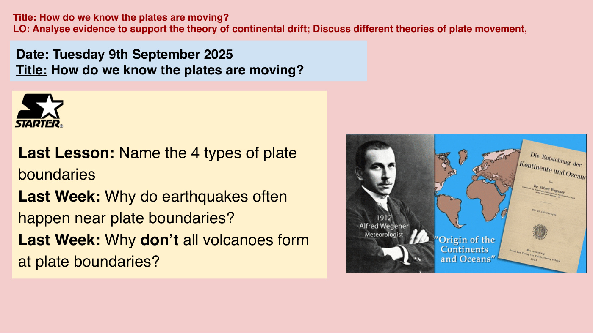
학습 목표(LO): 대륙 이동설(theory of continental drift)을 뒷받침하는 증거(evidence)를 분석한다. 판이 움직이는 까닭을 설명하는 여러 이론을 토론한다.
날짜: 2025년 9월 9일 화요일
제목: 판이 움직인다는 것을 어떻게 알 수 있을까?
STARTER(수업 시작 문제)
지난 수업: 판 경계(plate boundary)의 네 가지 종류를 적어라.
지난주: 지진(earthquake)은 왜 판 경계 가까이에서 자주 일어날까?
지난주: 화산(volcano)이 모두 판 경계에서만 생기지는 않는 까닭은 무엇일까?
오른쪽 그림: 1912년, 알프레드 베게너(Alfred Wegener), 기상학자(meteorologist)의 사진이 있다. 가운데에는 대륙들이 서로 붙어 있는 세계 지도가 있고, 오른쪽에는 그가 쓴 책 『대륙과 해양의 기원(Origin of the Continents and Oceans)』(독일어 원제: Die Entstehung der Kontinente und Ozeane)의 표지가 있다.
판 경계 네 가지는 발산 경계(divergent), 수렴 경계(convergent), 보존 경계(transform/conservative), 충돌 경계(collision)로 답하는 경우가 많다. 화산은 판 경계가 아닌 곳에서도 열점(hotspot) 위에서 생길 수 있다(예: 하와이).
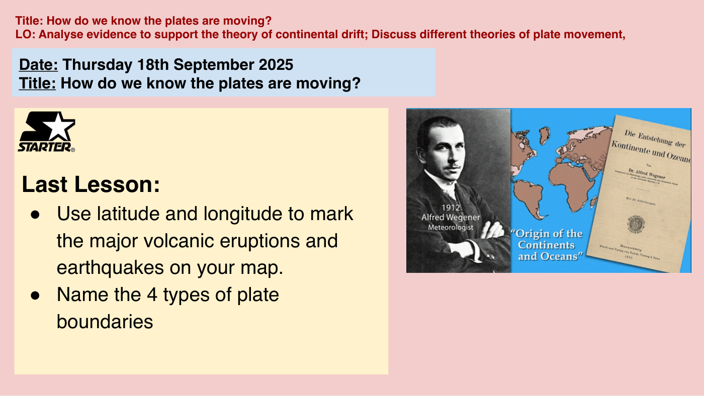
학습 목표(LO): 대륙 이동설(theory of continental drift)을 뒷받침하는 증거(evidence)를 분석한다. 판의 움직임(plate movement)에 대한 여러 이론을 토론한다.
날짜: 2025년 9월 18일 목요일
제목: 판이 움직인다는 것을 우리는 어떻게 아는가?
시작 활동(Starter)
지난 수업:
• 위도(latitude)와 경도(longitude)를 써서 큰 화산 폭발(volcanic eruptions)과 지진(earthquakes)이 일어난 곳을 지도에 표시한다.
• 판 경계(plate boundaries)의 4가지 종류를 말한다.
[오른쪽 그림]
1912년, 알프레트 베게너(Alfred Wegener), 기상학자(Meteorologist)의 사진이 있다.
가운데에는 대륙들이 그려진 세계 지도가 있다.
오른쪽에는 베게너가 쓴 책 표지가 있다. 독일어 제목 'Die Entstehung der Kontinente und Ozeane' = 영어 제목 'Origin of the Continents and Oceans'(대륙과 해양의 기원)이다.
판 경계 4가지는 발산 경계(divergent), 수렴 경계(convergent), 보존 경계(transform/conservative), 충돌 경계(collision)로 외워 두면 된다. 베게너는 1912년에 대륙이 옛날에는 하나로 붙어 있다가 갈라져 움직였다는 대륙 이동설(continental drift)을 처음 내놓은 사람이다.
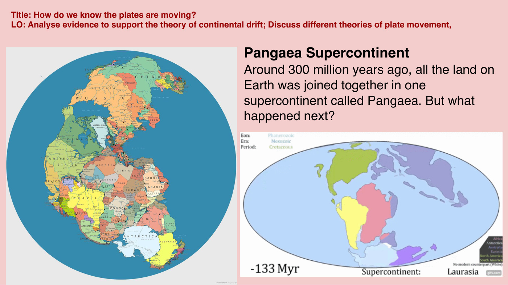
학습 목표(LO): 대륙 이동설(theory of continental drift)을 뒷받침하는 증거(evidence)를 분석한다. 판 운동(plate movement)에 관한 여러 이론을 토론한다.
초대륙 판게아(Pangaea Supercontinent)
약 3억 년 전에는 지구의 모든 땅이 하나로 붙어 판게아(Pangaea)라는 초대륙(supercontinent)을 이루고 있었다. 그러면 그다음에는 어떤 일이 일어났을까?
왼쪽 그림: 판게아 지도 위에 오늘날 나라들(러시아·중국·캐나다·미국·브라질·알제리·인도·남극·오스트레일리아 등)의 경계를 그려 넣은 것이다. 모든 대륙이 한 덩어리로 붙어 있다.
오른쪽 그림: 대륙이 갈라지는 모습을 보여 주는 움직이는 지도의 한 장면이다.
- 누대(Eon): 현생누대(Phanerozoic)
- 대(Era): 중생대(Mesozoic)
- 기(Period): 백악기(Cretaceous)
- -133 Myr = 1억 3천3백만 년 전
- 초대륙(Supercontinent): 로라시아(Laurasia)
- 색 구분: 아프리카(Africa), 남극(Antarctica), 오스트레일리아(Australia), 유라시아(Eurasia), 북아메리카(North America), 남아메리카(South America), 오늘날 해당 대륙 없음(흰색, No modern counterpart)
판게아(Pangaea)는 약 3억 년 전 모든 대륙이 하나로 붙어 있던 초대륙(supercontinent)이다. 이것이 쪼개져 북쪽의 로라시아(Laurasia)와 남쪽의 곤드와나(Gondwana)로 나뉘고, 다시 갈라져 오늘날의 대륙이 되었다는 것이 대륙 이동설(continental drift)의 핵심이다.
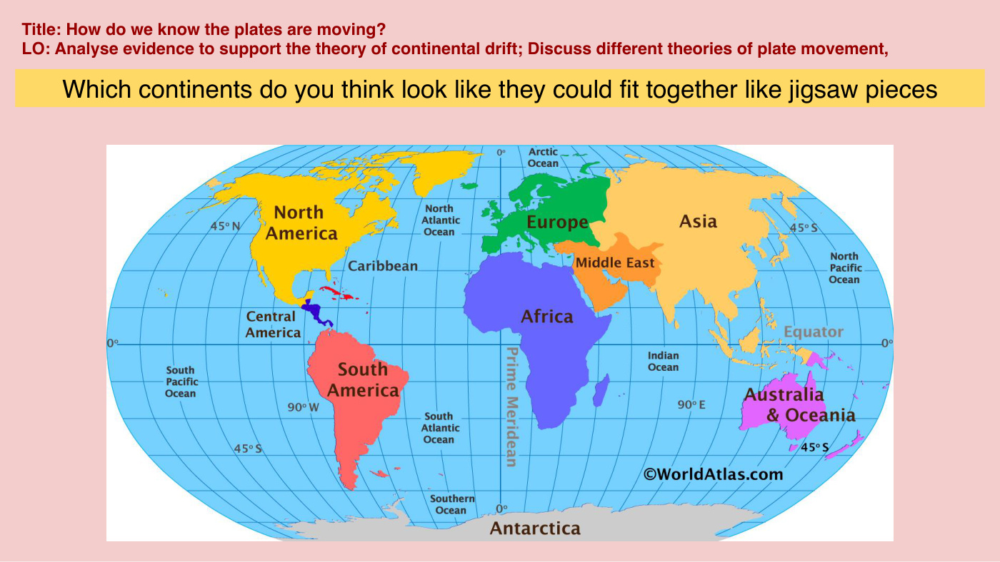
학습 목표(LO): 대륙 이동설(theory of continental drift)을 뒷받침하는 증거(evidence)를 분석한다. 판의 움직임(plate movement)에 대한 여러 이론을 토론한다.
어떤 대륙들이 퍼즐 조각(jigsaw pieces)처럼 서로 맞아 들어갈 것 같은가?
[세계 지도] 대륙마다 색이 다르게 칠해져 있다.
대륙·지역: 북아메리카(North America), 중앙아메리카(Central America), 카리브해(Caribbean), 남아메리카(South America), 유럽(Europe), 중동(Middle East), 아시아(Asia), 아프리카(Africa), 오스트레일리아와 오세아니아(Australia & Oceania), 남극(Antarctica)
바다: 북극해(Arctic Ocean), 북대서양(North Atlantic Ocean), 남대서양(South Atlantic Ocean), 북태평양(North Pacific Ocean), 남태평양(South Pacific Ocean), 인도양(Indian Ocean), 남극해(Southern Ocean)
선: 적도(Equator) 0°, 본초 자오선(Prime Meridian) 0°, 위도 45°N·45°S, 경도 90°W·90°E
출처: ©WorldAtlas.com
남아메리카 동쪽 해안과 아프리카 서쪽 해안의 모양이 퍼즐처럼 딱 맞는 것이 가장 잘 알려진 답이다. 이 '해안선이 맞아 들어감(jigsaw fit)'이 베게너(Wegener)가 대륙 이동설의 첫 번째 증거로 든 것이다.
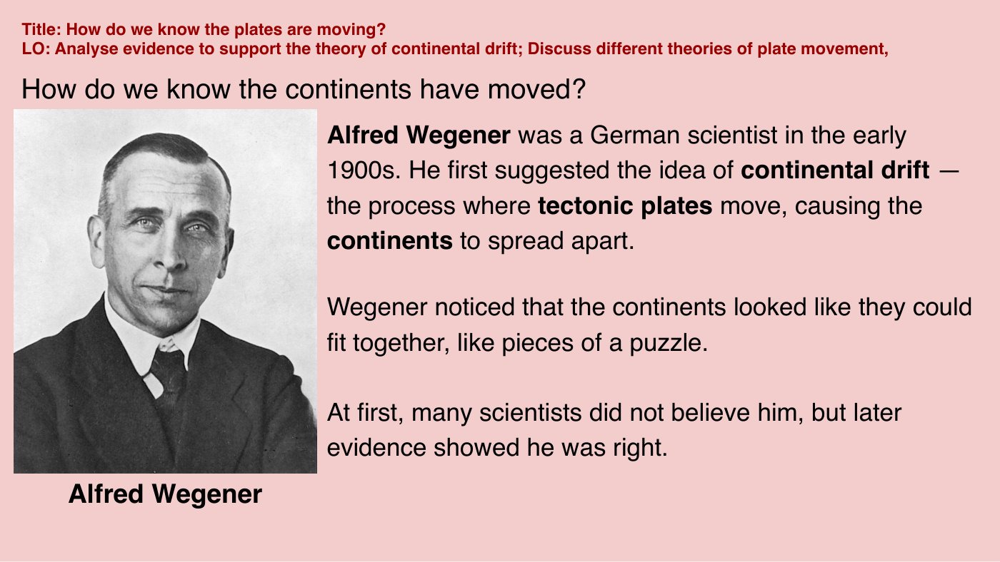
학습목표(LO): 대륙이동설(theory of continental drift)을 뒷받침하는 증거를 분석한다. 판이 움직이는 까닭에 대한 여러 이론을 토의한다.
대륙이 움직여 왔다는 것을 어떻게 알 수 있을까?
알프레트 베게너(Alfred Wegener)는 1900년대 초의 독일 과학자였다. 그는 대륙이동(continental drift)이라는 생각을 처음으로 내놓았다. 대륙이동은 지각판(tectonic plates)이 움직여서 대륙(continents)이 서로 멀어지는 과정이다.
베게너는 대륙들이 퍼즐 조각(pieces of a puzzle)처럼 서로 맞춰질 것처럼 생겼다는 것을 알아챘다.
처음에는 많은 과학자가 그의 말을 믿지 않았지만, 나중에 나온 증거(evidence)가 그가 옳았음을 보여 주었다.
(왼쪽 그림: 알프레트 베게너의 흑백 얼굴 사진)
대륙이동설을 처음 내놓은 사람은 Alfred Wegener이다. 이름 철자와 continental drift, tectonic plates 같은 용어를 영어로 쓸 수 있게 외워 둔다.
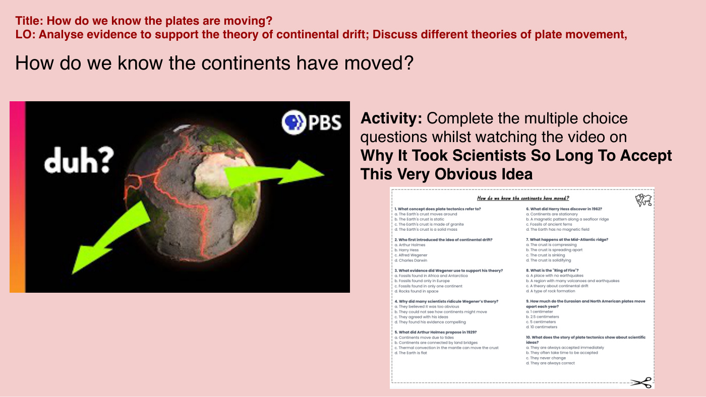
학습목표(LO): 대륙이동설(theory of continental drift)을 뒷받침하는 증거(evidence)를 분석한다. 판 운동(plate movement)에 대한 여러 이론을 토론한다.
대륙이 움직여 왔다는 것을 어떻게 알까?
(왼쪽 그림: PBS 영상 표지. 판의 경계가 빨간 선으로 그려진 지구 위에 연두색 화살표 두 개가 대륙이 서로 멀어지는 방향을 가리키고, 옆에 'duh?(뻔하잖아?)'라고 적혀 있다.)
활동(Activity): 과학자들이 이 너무나 뻔한 생각을 받아들이기까지 왜 그렇게 오래 걸렸나라는 영상을 보면서 객관식 문제를 푼다.
[활동지] 대륙이 움직여 왔다는 것을 어떻게 알까?
1. 판 구조론(plate tectonics)은 어떤 개념을 말하나?
a. 지구의 지각(crust)이 움직여 다닌다 / b. 지각은 멈춰 있다 / c. 지각은 화강암(granite)으로 되어 있다 / d. 지각은 하나로 된 단단한 덩어리다
2. 대륙이동(continental drift) 생각을 처음 내놓은 사람은?
a. 아서 홈스(Arthur Holmes) / b. 해리 헤스(Harry Hess) / c. 알프레트 베게너(Alfred Wegener) / d. 찰스 다윈(Charles Darwin)
3. 베게너는 자기 이론을 뒷받침하려고 어떤 증거를 썼나?
a. 아프리카와 남극에서 발견된 화석(fossils) / b. 유럽에서만 발견된 화석 / c. 한 대륙에서만 발견된 화석 / d. 우주에서 발견된 암석
4. 많은 과학자들은 왜 베게너의 이론을 비웃었나?
a. 너무 뻔하다고 생각했다 / b. 대륙이 어떻게 움직일 수 있는지 알 수 없었다 / c. 그의 생각에 동의했다 / d. 그의 증거가 설득력 있다고 봤다
5. 아서 홈스는 1929년에 무엇을 제안했나?
a. 대륙은 조수(tides) 때문에 움직인다 / b. 대륙은 육교(land bridges)로 이어져 있다 / c. 맨틀(mantle)의 열대류(thermal convection)가 지각을 움직일 수 있다 / d. 지구는 평평하다
6. 해리 헤스는 1962년에 무엇을 발견했나?
a. 대륙은 멈춰 있다 / b. 해저 산맥(seafloor ridge)을 따라 나타나는 자기 무늬(magnetic pattern) / c. 고대 고사리 화석 / d. 지구에는 자기장이 없다
7. 대서양 중앙 해령(Mid-Atlantic ridge)에서는 무슨 일이 일어나나?
a. 지각이 압축된다 / b. 지각이 벌어진다(spreading apart) / c. 지각이 가라앉는다 / d. 지각이 굳는다
8. '불의 고리(Ring of Fire)'란 무엇인가?
a. 지진이 없는 곳 / b. 화산(volcanoes)과 지진(earthquakes)이 많은 지역 / c. 대륙이동에 관한 이론 / d. 암석이 생기는 한 종류
9. 유라시아판(Eurasian plate)과 북아메리카판(North American plate)은 해마다 얼마나 멀어지나?
a. 1cm / b. 2.5cm / c. 5cm / d. 10cm
10. 판 구조론 이야기는 과학 이론에 대해 무엇을 보여 주나?
a. 늘 곧바로 받아들여진다 / b. 받아들여지기까지 시간이 걸릴 때가 많다 / c. 절대 바뀌지 않는다 / d. 늘 옳다
베게너(Wegener)는 증거는 있었지만 대륙을 움직이는 힘을 설명하지 못해 비웃음을 받았다. 뒤에 홈스(Holmes)가 맨틀 대류(convection)를, 헤스(Hess)가 해저 확장(seafloor spreading)의 증거를 내놓으면서 판 구조론(plate tectonics)이 받아들여졌다.
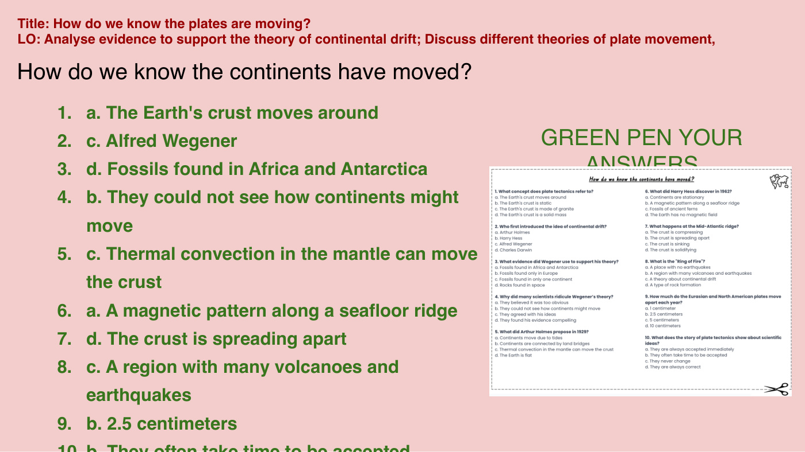
학습목표(LO): 대륙이동설(continental drift)을 뒷받침하는 증거(evidence)를 분석한다. 판 이동(plate movement)에 관한 여러 이론을 토론한다.
대륙이 움직였다는 것을 어떻게 알까? — 정답
1. a. 지구의 지각(crust)은 여기저기 움직인다
2. c. 알프레드 베게너(Alfred Wegener)
3. d. 아프리카와 남극에서 발견된 화석(fossils)
4. b. 대륙이 어떻게 움직일 수 있는지 알 수 없었다
5. c. 맨틀(mantle)의 열대류(thermal convection)가 지각을 움직일 수 있다
6. a. 해저 산맥(seafloor ridge)을 따라 나타나는 자기 줄무늬(magnetic pattern)
7. d. 지각이 벌어지고 있다(spreading apart)
8. c. 화산과 지진이 많은 지역
9. b. 2.5센티미터
10. b. 받아들여지기까지 시간이 오래 걸리는 경우가 많다
초록 펜으로 답을 채점한다(GREEN PEN YOUR ANSWERS)
[오른쪽 문제지: 대륙이 움직였다는 것을 어떻게 알까?]
1. 판 구조론(plate tectonics)은 무엇을 말하나? — a. 지구의 지각이 움직인다 / b. 지각은 멈춰 있다 / c. 지각은 화강암으로 되어 있다 / d. 지각은 하나의 단단한 덩어리다
2. 대륙이동설을 처음 내놓은 사람은? — a. 아서 홈스(Arthur Holmes) / b. 해리 헤스(Harry Hess) / c. 알프레드 베게너 / d. 찰스 다윈
3. 베게너가 자기 이론을 뒷받침하려고 쓴 증거는? — a. 아프리카와 남극에서 발견된 화석 / b. 유럽에서만 발견된 화석 / c. 한 대륙에서만 발견된 화석 / d. 우주에서 발견된 암석
4. 많은 과학자가 베게너의 이론을 비웃은 까닭은? — a. 너무 뻔하다고 생각했다 / b. 대륙이 어떻게 움직이는지 알 수 없었다 / c. 그의 생각에 동의했다 / d. 증거가 설득력 있다고 봤다
5. 1929년 아서 홈스가 내놓은 생각은? — a. 대륙은 조수 때문에 움직인다 / b. 대륙은 육교로 이어져 있다 / c. 맨틀의 열대류가 지각을 움직일 수 있다 / d. 지구는 평평하다
6. 1962년 해리 헤스가 발견한 것은? — a. 대륙은 멈춰 있다 / b. 해저 산맥을 따라 나타나는 자기 줄무늬 / c. 고대 고사리 화석 / d. 지구에는 자기장이 없다
7. 대서양 중앙 해령(Mid-Atlantic ridge)에서는 무슨 일이 일어나나? — a. 지각이 압축된다 / b. 지각이 벌어진다 / c. 지각이 가라앉는다 / d. 지각이 굳는다
8. 불의 고리(Ring of Fire)란? — a. 지진이 없는 곳 / b. 화산과 지진이 많은 지역 / c. 대륙이동에 관한 이론 / d. 암석이 만들어지는 한 종류
9. 유라시아판과 북아메리카판은 해마다 얼마나 멀어지나? — a. 1cm / b. 2.5cm / c. 5cm / d. 10cm
10. 판 구조론 이야기는 과학 이론에 대해 무엇을 보여 주나? — a. 늘 바로 받아들여진다 / b. 받아들여지기까지 시간이 오래 걸리는 경우가 많다 / c. 절대 바뀌지 않는다 / d. 늘 옳다
왼쪽 초록 정답은 번호·기호가 오른쪽 문제지의 보기 순서와 맞지 않는 곳이 있다(1·3·5·6·7·8번). 기호보다 정답 문장 내용으로 확인한다. 예: 1번 정답 내용은 '지각이 움직인다'인데 문제지에서는 a가 아니라 a가 맞고, 3번 '아프리카와 남극 화석'은 문제지에서 a, 7번 '지각이 벌어진다'는 b, 8번 '화산과 지진이 많은 지역'은 b, 5번은 c, 6번은 b다.
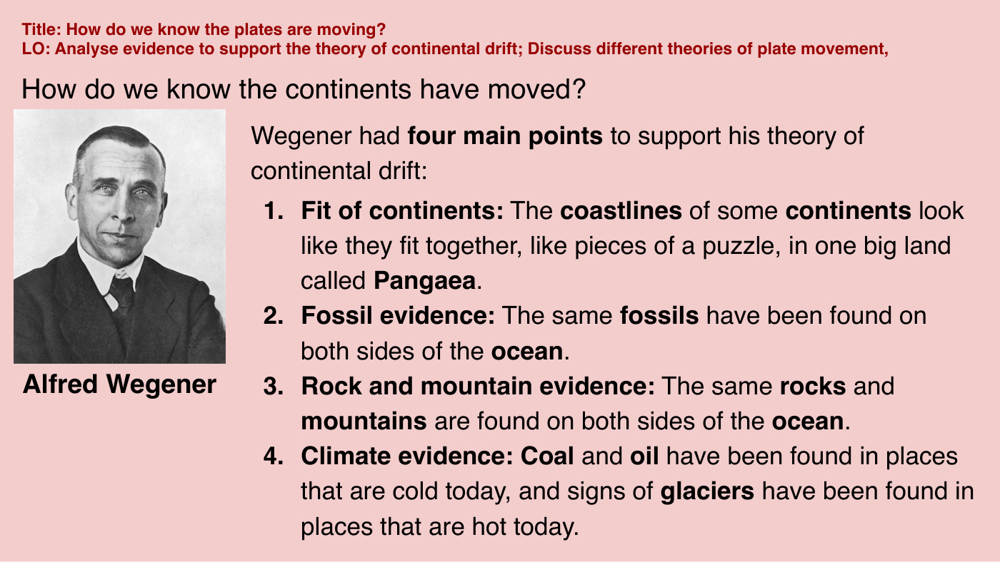
학습 목표: 대륙 이동설(continental drift)을 뒷받침하는 증거(evidence)를 분석한다. 판이 움직이는 방식(plate movement)에 대한 여러 이론을 토론한다.
대륙이 움직여 왔다는 것을 어떻게 알까?
(왼쪽 사진: 알프레드 베게너(Alfred Wegener))
베게너는 대륙 이동설을 뒷받침하는 네 가지 핵심 근거(four main points)를 내놓았다.
1. 대륙의 맞춤(fit of continents): 몇몇 대륙(continents)의 해안선(coastlines)이 퍼즐 조각처럼 서로 들어맞아, 판게아(Pangaea)라는 하나의 큰 땅덩어리였던 것처럼 보인다.
2. 화석 증거(fossil evidence): 같은 화석(fossils)이 바다(ocean) 양쪽에서 모두 발견되었다.
3. 암석과 산맥 증거(rock and mountain evidence): 같은 암석(rocks)과 산맥(mountains)이 바다 양쪽에서 모두 발견된다.
4. 기후 증거(climate evidence): 지금은 추운 곳에서 석탄(coal)과 석유(oil)가 발견되었고, 지금은 더운 곳에서 빙하(glaciers)의 흔적이 발견되었다.
네 가지 근거의 영어 이름(fit of continents, fossil evidence, rock and mountain evidence, climate evidence)은 시험에 그대로 나오기 쉬우니 외워 둔다. 석탄은 따뜻한 곳의 식물이 쌓여 생기므로, 추운 곳에서 석탄이 나온다는 것은 그 땅이 옛날에 따뜻한 곳에 있다가 옮겨 왔다는 뜻이다.
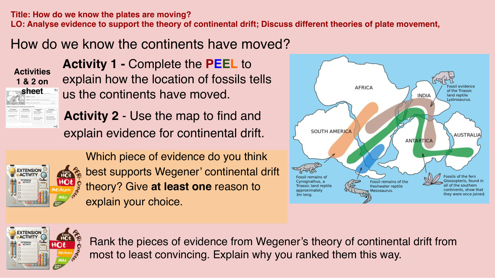
학습 목표(LO): 대륙 이동설(theory of continental drift)을 뒷받침하는 증거(evidence)를 분석한다. 판 이동에 대한 여러 이론을 토론한다.
대륙이 움직였다는 것을 우리는 어떻게 아는가?
(활동 1과 2는 활동지에 한다)
활동 1 - PEEL을 완성하여 화석(fossil)이 발견되는 위치를 보면 대륙이 움직였다는 것을 알 수 있는 이유를 설명한다.
활동 2 - 지도를 이용해 대륙 이동(continental drift)의 증거를 찾아 설명한다.
심화 활동(Extension Activity) – 매운맛 단계 '핫(Hot)'
베게너(Wegener)의 대륙 이동설을 가장 잘 뒷받침하는 증거는 무엇이라고 생각하는가? 그렇게 고른 이유를 적어도 한 가지 쓴다.
심화 활동(Extension Activity) – 매운맛 단계 '아주 매움(Extra Hot)'
베게너의 대륙 이동설 증거들을 가장 설득력 있는 것부터 가장 덜한 것까지 순위를 매긴다. 왜 그렇게 순위를 매겼는지 설명한다.
[지도] 아프리카(Africa)·남아메리카(South America)·인도(India)·남극(Antarctica)·오스트레일리아(Australia)가 하나로 붙어 있는 모습이다. 같은 화석이 발견되는 지역이 색깔 띠로 이어져 있다.
- 주황 띠: 키노그나투스(Cynognathus) 화석. 트라이아스기(Triassic)의 육지 파충류로 길이 약 3m.
- 파란 띠: 민물 파충류 메소사우루스(Mesosaurus) 화석.
- 갈색 띠: 트라이아스기 육지 파충류 리스트로사우루스(Lystrosaurus) 화석 증거.
- 초록 띠: 고사리 식물 글로소프테리스(Glossopteris) 화석. 남쪽 대륙 모두에서 발견되어 이 대륙들이 한때 붙어 있었음을 보여준다.
핵심은 바다를 건널 수 없는 육지 파충류·민물 파충류·식물의 화석이 지금은 멀리 떨어진 여러 대륙에서 똑같이 나온다는 점이다. 그러니 대륙들이 예전에 하나로 붙어 있었다가 갈라졌다고 설명하면 된다. PEEL은 Point(주장)–Evidence(증거)–Explain(설명)–Link(질문과 연결) 순서로 쓰는 글쓰기 틀이다.
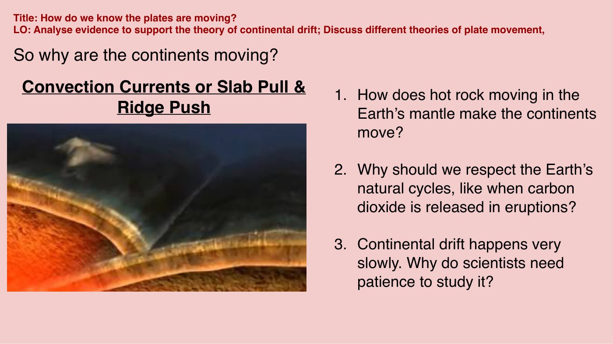
학습 목표: 대륙 이동설(theory of continental drift)을 뒷받침하는 증거를 분석한다. 판 운동(plate movement)에 관한 여러 이론을 토론한다.
그렇다면 대륙은 왜 움직일까?
맨틀 대류(Convection Currents)일까, 아니면 슬래브 풀(Slab Pull, 섭입하는 판이 끌어당기는 힘)과 해령 밀기(Ridge Push, 해령에서 판을 밀어내는 힘)일까?
(그림: 한 판이 다른 판 아래로 휘어져 뜨거운 붉은 맨틀 속으로 가라앉는 모습의 단면도다.)
1. 지구 맨틀(mantle) 속에서 뜨거운 암석이 움직이면 어떻게 대륙이 움직이게 될까?
2. 화산 분출(eruption) 때 이산화탄소(carbon dioxide)가 나오는 것처럼, 우리는 왜 지구의 자연 순환(natural cycles)을 존중해야 할까?
3. 대륙 이동(continental drift)은 아주 느리게 일어난다. 과학자들이 이것을 연구하려면 왜 인내심이 필요할까?
판을 움직이는 힘은 두 가지 설명이 있다. 맨틀 대류(convection currents)는 뜨거운 맨틀이 올라오고 식으면 가라앉으며 그 위의 판을 옮긴다는 설명이다. 슬래브 풀(slab pull)은 무거운 판이 섭입대(subduction zone)에서 가라앉으며 판 전체를 끌어당기고, 해령 밀기(ridge push)는 해령(ridge)에서 새로 생긴 높은 판이 옆으로 밀려난다는 설명이다.
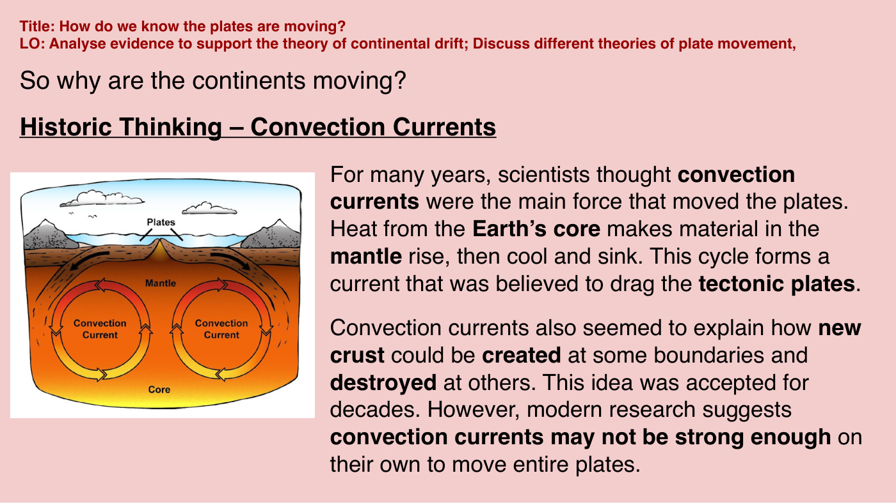
학습목표: 대륙이동설(continental drift)을 뒷받침하는 증거를 분석한다; 판 운동(plate movement)에 관한 여러 이론을 토론한다.
그렇다면 대륙은 왜 움직일까?
옛날의 생각 – 대류(convection currents)
오랫동안 과학자들은 대류(convection currents)가 판을 움직이는 주된 힘이라고 생각했다.
지구 핵(Earth's core)에서 나온 열 때문에 맨틀(mantle) 속 물질이 올라갔다가, 식으면 가라앉는다.
이 순환이 흐름을 만들고, 이 흐름이 지각판(tectonic plates)을 끌고 간다고 여겨졌다.
대류는 또 어떤 경계에서는 새 지각(new crust)이 생기고(created), 다른 경계에서는 사라지는(destroyed) 까닭도 설명해 주는 것처럼 보였다.
이 생각은 수십 년 동안 받아들여졌다.
하지만 요즘 연구에 따르면 대류만으로는 판 전체를 움직일 만큼 힘이 세지 않을 수 있다(convection currents may not be strong enough).
[그림] 땅 속 단면도다. 맨 위에 판(Plates)이 있고 가운데가 솟아 갈라진다. 그 아래 맨틀(Mantle)에 둥근 화살표 두 개가 돌며 각각 대류(Convection Current)라고 적혀 있고, 맨 아래에 핵(Core)이 있다. 대류가 위로 올라와 양옆으로 퍼지면서 판을 바깥쪽으로 끌고 간다.
제목이 '옛날의 생각(Historic Thinking)'인 점을 짚어야 한다. 대류가 판을 움직인다는 설명은 예전 이론이고, 요즘은 대류만으로는 부족하다고 보므로 다음 장에서 다른 힘을 배우게 된다.
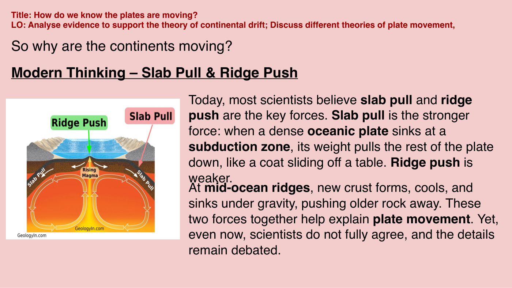
학습 목표: 대륙 이동설(continental drift)을 뒷받침하는 증거를 분석한다. 판 운동에 대한 여러 이론을 토론한다.
그렇다면 대륙은 왜 움직일까?
현대의 생각 – 슬래브 풀(slab pull)과 해령 밀기(ridge push)
오늘날 대부분의 과학자는 슬래브 풀(slab pull)과 해령 밀기(ridge push)가 핵심 힘이라고 믿는다. 슬래브 풀이 더 강한 힘이다. 무거운 해양판(oceanic plate)이 섭입대(subduction zone)에서 가라앉으면, 그 무게가 판의 나머지 부분을 아래로 끌어당긴다. 식탁에서 코트가 미끄러져 떨어지는 것과 같다. 해령 밀기는 더 약한 힘이다.
대양 가운데의 해령(mid-ocean ridge)에서는 새 지각이 만들어지고, 식으면서 중력 때문에 아래로 내려앉아 오래된 암석을 밀어낸다. 이 두 힘이 함께 판의 이동(plate movement)을 설명하는 데 도움이 된다. 그러나 지금도 과학자들의 의견이 완전히 같지는 않으며, 자세한 내용은 아직 논쟁 중이다.
그림: 가운데 바다 밑 해령에 초록 화살표 해령 밀기(Ridge Push)가 있고, 그 아래로 솟아오르는 마그마(Rising Magma)가 올라온다. 양옆으로 판이 벌어지며, 오른쪽 끝에서 판이 대륙 밑으로 가라앉는 곳에 분홍 화살표 슬래브 풀(Slab Pull)이 있다. 맨틀 안에는 둥글게 도는 화살표(대류)가 그려져 있다.
슬래브 풀이 해령 밀기보다 더 강한 힘이라는 점이 시험에 잘 나온다. 슬래브 풀은 섭입대에서 '끌어당기는' 힘, 해령 밀기는 해령에서 '밀어내는' 힘으로 구분해 외워 둔다.
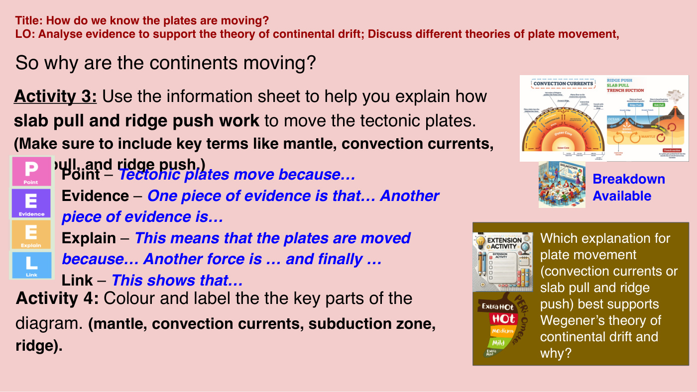
학습목표(LO): 대륙이동설(theory of continental drift)을 뒷받침하는 증거(evidence)를 분석한다. 판이 움직이는 까닭에 대한 여러 이론을 토론한다.
그렇다면 대륙은 왜 움직이는가?
활동 3: 정보지(information sheet)를 보고 슬랩 풀(slab pull)과 릿지 푸시(ridge push)가 어떻게 지각판(tectonic plates)을 움직이는지 설명한다.
(맨틀(mantle), 대류(convection currents), 슬랩 풀(slab pull), 릿지 푸시(ridge push) 같은 핵심 용어를 꼭 넣는다.)
PEEL 글쓰기 틀
P 주장(Point) – 지각판이 움직이는 까닭은… (Tectonic plates move because…)
E 증거(Evidence) – 증거 하나는… 또 다른 증거는… (One piece of evidence is that… Another piece of evidence is…)
E 설명(Explain) – 이것은 판이 …때문에 움직인다는 뜻이다. 또 다른 힘은 …이고, 마지막으로 … (This means that the plates are moved because… Another force is … and finally …)
L 연결(Link) – 이것으로 …임을 알 수 있다. (This shows that…)
활동 4: 그림의 중요한 부분에 색칠하고 이름을 붙인다. (맨틀(mantle), 대류(convection currents), 섭입대(subduction zone), 해령(ridge))
오른쪽 그림: 왼쪽은 대류(CONVECTION CURRENTS) — 지구 단면에 내핵(inner core)·외핵(outer core)·맨틀과 그 안에서 도는 대류 화살표가 있다. 오른쪽은 릿지 푸시(RIDGE PUSH)·슬랩 풀(SLAB PULL)·해구 흡입(TRENCH SUCTION) — 바다(ocean) 밑 해령에서 판이 밀려나고, 해구에서 판이 맨틀로 끌려 들어가는 모습이다.
도움 자료(Breakdown) 있음
심화 활동(Extension Activity) (매운맛 단계: 아주 순한맛·순한맛·중간맛·매운맛·아주 매운맛)
판의 움직임을 설명하는 두 가지(대류 또는 슬랩 풀과 릿지 푸시) 가운데 베게너(Wegener)의 대륙이동설을 더 잘 뒷받침하는 것은 무엇이며, 그 까닭은 무엇인가?
릿지 푸시(ridge push)는 해령에서 새로 생긴 뜨겁고 높은 판이 옆으로 밀려나는 힘이고, 슬랩 풀(slab pull)은 섭입대에서 무거운 판 끝이 맨틀 속으로 가라앉으며 판 전체를 끌어당기는 힘이다. 오늘날에는 슬랩 풀이 판을 움직이는 가장 큰 힘으로 여겨진다.
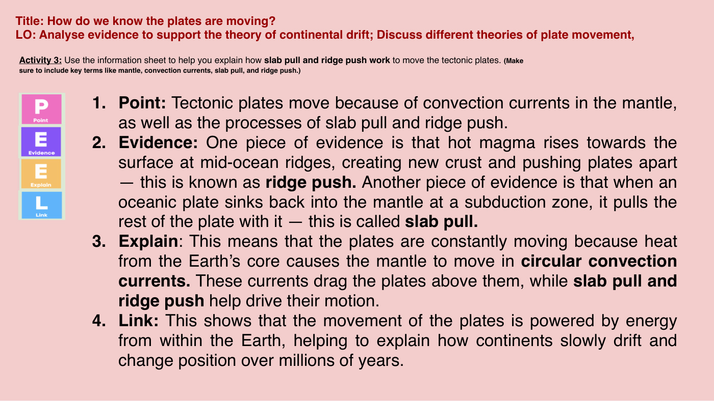
학습 목표(LO): 대륙 이동설(theory of continental drift)을 뒷받침하는 증거를 분석한다. 판 운동에 관한 여러 이론을 논의한다.
활동 3: 정보 자료를 참고해 슬랩 풀(slab pull)과 해령 밀기(ridge push)가 어떻게 판(tectonic plates)을 움직이는지 설명하라. (맨틀(mantle), 대류(convection currents), 슬랩 풀(slab pull), 해령 밀기(ridge push) 같은 핵심 용어를 꼭 넣을 것.)
왼쪽 칸: PEEL 글쓰기 틀 — P 주장(Point), E 증거(Evidence), E 설명(Explain), L 연결(Link)
1. 주장(Point): 판(tectonic plates)은 맨틀(mantle) 속 대류(convection currents) 때문에, 그리고 슬랩 풀(slab pull)과 해령 밀기(ridge push) 작용 때문에 움직인다.
2. 증거(Evidence): 첫째 증거는 뜨거운 마그마(magma)가 중앙 해령(mid-ocean ridges)에서 지표 쪽으로 올라와 새 지각(crust)을 만들고 판들을 양쪽으로 밀어낸다는 것이다 — 이것을 해령 밀기(ridge push)라고 한다. 또 다른 증거는 해양판(oceanic plate)이 섭입대(subduction zone)에서 맨틀 속으로 다시 가라앉을 때 판의 나머지 부분을 함께 끌어당긴다는 것이다 — 이것을 슬랩 풀(slab pull)이라고 한다.
3. 설명(Explain): 이는 지구 핵(core)에서 나온 열이 맨틀을 원을 그리는 대류(circular convection currents)로 움직이게 하기 때문에 판이 끊임없이 움직인다는 뜻이다. 이 대류가 그 위의 판을 끌고 가고, 슬랩 풀과 해령 밀기(slab pull and ridge push)가 판의 움직임을 더 밀어 준다.
4. 연결(Link): 이것은 판의 움직임이 지구 내부의 에너지(energy from within the Earth)로 일어난다는 것을 보여 주며, 대륙이 수백만 년에 걸쳐 천천히 이동(drift)하고 위치를 바꾸는 까닭을 설명해 준다.
이 장은 PEEL 순서(주장→증거→설명→연결)로 쓴 모범 답안이다. ridge push는 해령에서 새로 생긴 판이 밀어내는 힘이고, slab pull은 섭입대에서 가라앉는 판이 끌어당기는 힘이라는 차이를 영어 용어 그대로 구분해 써야 한다.
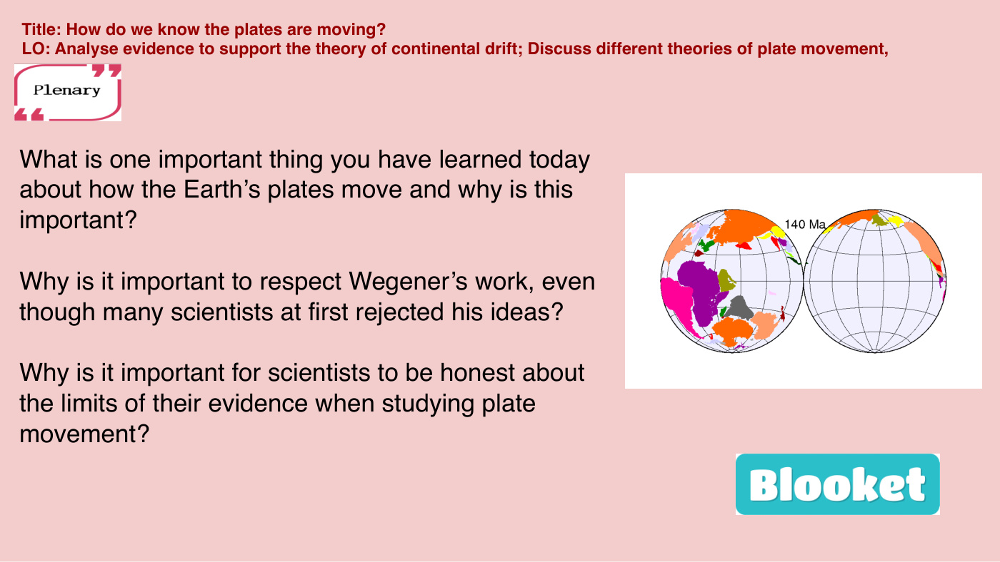
학습 목표(LO): 대륙 이동설(theory of continental drift)을 뒷받침하는 증거(evidence)를 분석한다. 판 이동(plate movement)에 대한 여러 이론을 토론한다.
마무리 활동(Plenary)
1. 오늘 지구의 판(Earth's plates)이 어떻게 움직이는지에 대해 배운 중요한 것 한 가지는 무엇이고, 그것은 왜 중요한가?
2. 처음에 많은 과학자들이 베게너(Wegener)의 생각을 받아들이지 않았는데도, 왜 그의 연구를 존중하는 것이 중요한가?
3. 판 이동을 연구할 때 과학자들이 자기 증거의 한계(limits)를 정직하게 밝히는 것이 왜 중요한가?
(오른쪽 그림: 1억 4천만 년 전(140 Ma) 대륙의 위치를 색깔별로 나타낸 두 개의 지구본 지도. 대륙들이 지금과 달리 서로 붙어 있다.)
(오른쪽 아래: 퀴즈 게임 Blooket 로고)
Ma는 'million years ago(백만 년 전)'의 줄임말이다. 2번 질문은 베게너가 대륙이 움직이는 원인(mechanism)을 설명하지 못해 거부당했지만, 그가 모은 증거가 뒤에 판 구조론(plate tectonics)의 바탕이 되었다는 점을 쓰면 된다.
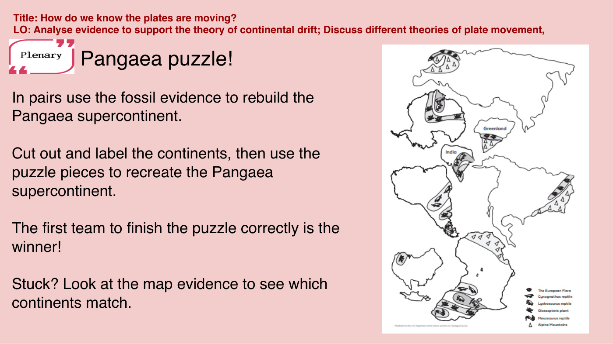
학습목표(LO): 대륙이동설(theory of continental drift)을 뒷받침하는 증거(evidence)를 분석한다. 판의 움직임(plate movement)을 설명하는 여러 이론을 토론한다.
정리 활동(Plenary) — 판게아 퍼즐(Pangaea puzzle)!
짝과 함께 화석 증거(fossil evidence)를 이용해 초대륙(supercontinent) 판게아(Pangaea)를 다시 맞춘다.
대륙들을 오려서 이름을 적고, 그 퍼즐 조각으로 판게아 초대륙을 다시 만든다.
퍼즐을 가장 먼저 올바르게 끝낸 팀이 이긴다!
막히면? 지도 증거를 보고 어떤 대륙끼리 맞는지 확인한다.
[오른쪽 그림] 흩어진 대륙 조각 지도다. 그린란드(Greenland), 인도(India) 등이 있고, 대륙마다 화석·산맥이 나온 곳이 표시돼 있다.
범례:
- 유럽 식물군(The European Flora)
- 키노그나투스(Cynognathus) 파충류
- 리스트로사우루스(Lystrosaurus) 파충류
- 글로소프테리스(Glossopteris) 식물
- 메소사우루스(Mesosaurus) 파충류
- △ 알프스형 산맥(Alpine Mountains)
같은 화석이나 산맥 표시가 서로 다른 대륙의 가장자리에 이어지도록 맞추면 된다. 예를 들어 메소사우루스 화석은 남아메리카 동쪽과 아프리카 서쪽에서 나오므로 두 대륙이 한때 붙어 있었다는 증거가 된다.
GCSE 시험형 연습 문제도 있다. "발산 경계(constructive plate boundary)에서 일어나는 물리적 과정을 설명하라"는 문제이며, 쓸 낱말이 미리 주어진다. 판이 벌어지고(move apart), 그 틈(gap)으로 마그마(magma)가 올라와(rises) 용암(lava)으로 분출하며, 뜨겁고 묽은(runny) 용암이 멀리 흘러 식으면서 순상화산(shield volcanoes)을 만들고 지진도 함께 일어난다는 흐름이다. 그림(sketch)도 같이 그려야 한다.
✍️ 꼭 알아야 하는 것
- 지구의 네 층 이름, 완전히 고체로 여겨지는 층과 그 근거, 대륙판과 해양판의 차이를 말할 수 있어야 한다.
- 발산 경계(constructive)에서 판이 벌어짐 → 마그마 상승 → 용암 분출 → 순상화산·지진의 순서를 낱말 뱅크의 단어로 설명하고 그림도 그릴 수 있어야 한다.
- PEEL 순서(Point-Evidence-Explain-Link)로 "가장 위험한 판 경계"에 대한 자기 의견을 예시 두 개와 반대 의견까지 넣어 쓸 수 있어야 한다.
📚 이 자료의 핵심 단어
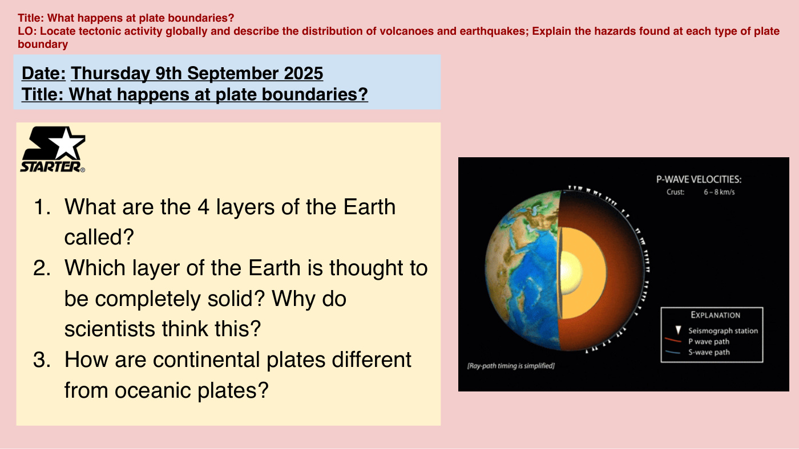
학습 목표(LO): 전 세계의 지각 활동(tectonic activity) 위치를 찾고, 화산(volcanoes)과 지진(earthquakes)의 분포(distribution)를 설명한다. 판 경계의 종류마다 나타나는 재해(hazards)를 설명한다.
날짜: 2025년 9월 9일 목요일
제목: 판 경계에서는 무슨 일이 일어날까?
시작 활동(STARTER)
1. 지구의 4개 층(4 layers of the Earth)은 각각 무엇이라고 부르는가?
2. 지구의 어느 층이 완전한 고체(solid)라고 여겨지는가? 과학자들은 왜 그렇게 생각하는가?
3. 대륙판(continental plates)은 해양판(oceanic plates)과 어떻게 다른가?
[오른쪽 그림] 지구를 반으로 잘라 속을 보여 주는 그림이다.
P파 속도(P-wave velocities): 지각(crust) 초속 6~8km
설명(Explanation): ▼ 지진계 관측소(seismograph station) / 빨간 선 = P파(P wave)가 지나는 길 / 파란 선 = S파(S-wave)가 지나는 길
[지진파가 지나는 시간은 단순하게 나타냈다]
답: 1번은 지각(crust)·맨틀(mantle)·외핵(outer core)·내핵(inner core)이다. 2번은 내핵(inner core)이며, 액체를 통과하지 못하는 S파(S-wave)가 외핵에서 막히지만 내핵에서는 P파가 더 빨라지는 것으로 보아 고체라고 본다. 3번은 대륙판이 더 두껍고 가벼우며(밀도가 낮음) 오래되었고, 해양판은 더 얇고 무거워(밀도가 높음) 섭입(subduction)된다.
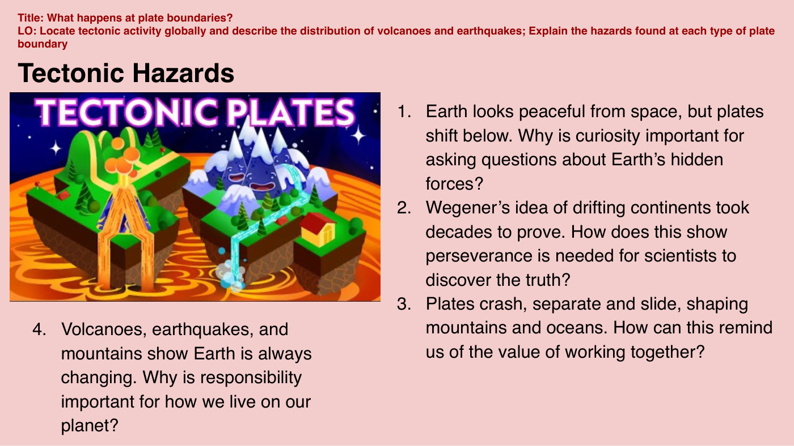
학습목표(LO): 전 세계의 지각 활동(tectonic activity) 위치를 찾고 화산(volcanoes)과 지진(earthquakes)이 어떻게 분포하는지 설명한다. 판 경계의 종류마다 나타나는 재해(hazards)를 설명한다.
지각 재해(Tectonic Hazards)
[그림: 'TECTONIC PLATES(지각판)' 글자 아래, 붉은 용암 위에 떠 있는 땅덩이들이 그려져 있다. 왼쪽 땅은 갈라진 틈으로 용암이 흘러나오고, 오른쪽 땅에는 눈 덮인 산·강·집이 있다.]
1. 우주에서 보면 지구는 평화로워 보이지만 그 아래에서는 판(plates)이 움직인다. 지구의 숨은 힘에 대해 질문할 때 호기심(curiosity)이 왜 중요할까?
2. 베게너(Wegener)의 대륙 이동(drifting continents) 생각은 증명되기까지 수십 년이 걸렸다. 이것은 과학자가 진실을 밝히려면 끈기(perseverance)가 필요하다는 것을 어떻게 보여 줄까?
3. 판은 부딪치고(crash), 갈라지고(separate), 미끄러지며(slide) 산과 바다를 만든다. 이것이 어떻게 함께 일하는 것(working together)의 가치를 떠올리게 할까?
4. 화산, 지진, 산은 지구가 늘 변하고 있음을 보여 준다. 우리가 지구에서 살아가는 방식에서 책임감(responsibility)이 왜 중요할까?
네 질문은 판이 움직이는 세 방식(부딪침·갈라짐·미끄러짐)을 호기심·끈기·협동·책임감 같은 태도와 이어 생각해 보게 한다. 답을 쓸 때 plates, continental drift, volcanoes, earthquakes 같은 용어를 넣어 쓰면 좋다.
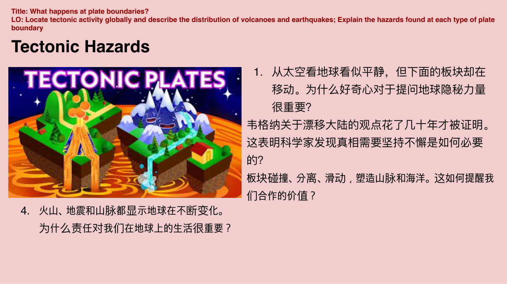
학습 목표: 전 세계의 지각 활동(tectonic activity) 위치를 찾고 화산(volcano)과 지진(earthquake)의 분포를 설명한다. 판 경계의 종류마다 나타나는 재해(hazard)를 설명한다.
지각 변동 재해(Tectonic Hazards)
그림: 'TECTONIC PLATES(지각판)'라는 글자 아래 여러 땅덩어리가 뜨거운 마그마 위에 떠 있다. 한쪽 땅에서는 화산이 터지고, 다른 쪽에는 눈 덮인 산과 강, 집이 있으며 땅이 서로 갈라져 있다.
1. 우주에서 보면 지구는 조용해 보이지만, 그 아래의 판(plate)은 움직이고 있다. 지구의 숨은 힘에 대해 질문할 때 왜 호기심(curiosity)이 중요할까?
2. 베게너(Wegener)의 대륙 이동(continental drift) 주장은 증명되기까지 수십 년이 걸렸다. 이것은 과학자가 진실을 찾으려면 끈기(perseverance)가 얼마나 필요한지 어떻게 보여 줄까?
3. 판은 충돌하고(collide), 갈라지고(separate), 미끄러지며(slide) 산맥과 바다를 만든다. 이것은 협력(cooperation)의 가치를 어떻게 일깨워 줄까?
4. 화산, 지진, 산맥은 모두 지구가 끊임없이 변하고 있음을 보여 준다. 지구에서 살아가는 데 왜 책임(responsibility)이 중요할까?
판이 움직이는 세 방식은 영어로 꼭 외워 둔다. 서로 부딪치면 수렴 경계(convergent), 멀어지면 발산 경계(divergent), 옆으로 미끄러지면 보존 경계(conservative/transform)다.
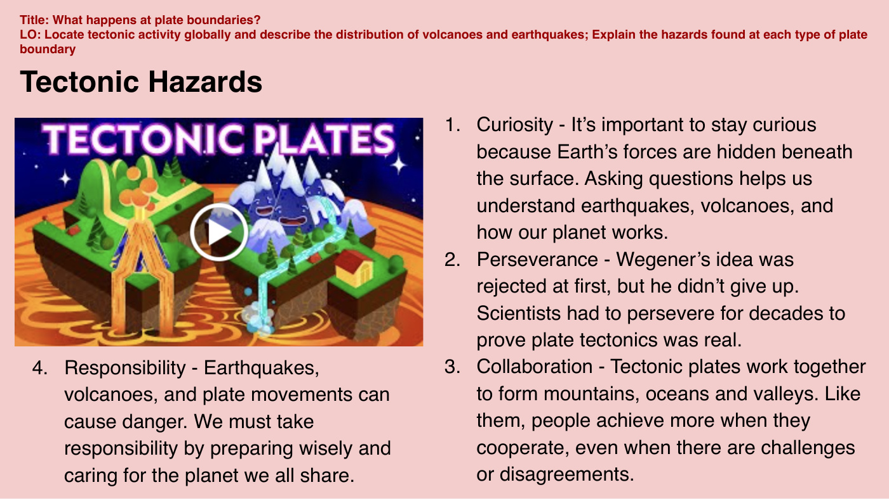
학습 목표: 전 세계의 지각 활동(tectonic activity) 위치를 찾고 화산(volcano)과 지진(earthquake)의 분포(distribution)를 설명한다. 판 경계의 종류마다 나타나는 재해(hazard)를 설명한다.
지각 재해(Tectonic Hazards)
(왼쪽 그림: 'TECTONIC PLATES(지각판)'라는 제목의 영상 화면이다. 갈라진 땅덩어리 사이로 용암이 흐르고, 한쪽에는 화산, 다른 쪽에는 눈 덮인 산과 강, 집이 그려져 있다.)
1. 호기심(Curiosity) - 지구의 힘은 땅 표면 아래에 숨어 있으므로 호기심을 잃지 않는 것이 중요하다. 질문을 하면 지진, 화산, 그리고 지구가 어떻게 움직이는지 이해하는 데 도움이 된다.
2. 끈기(Perseverance) - 베게너(Wegener)의 생각은 처음에 받아들여지지 않았지만 그는 포기하지 않았다. 과학자들은 판 구조론(plate tectonics)이 사실임을 증명하려고 수십 년 동안 끈기 있게 연구해야 했다.
3. 협력(Collaboration) - 지각판(tectonic plates)은 함께 작용해 산, 바다, 골짜기를 만든다. 판들처럼 사람도 어려움이나 의견 차이가 있을 때에도 서로 협력하면 더 많은 것을 이룬다.
4. 책임감(Responsibility) - 지진, 화산, 판의 움직임은 위험을 일으킬 수 있다. 우리는 현명하게 대비하고 모두가 함께 쓰는 지구를 아끼며 책임을 다해야 한다.
베게너(Wegener)는 대륙이 움직인다는 '대륙 이동설(continental drift)'을 처음 내놓은 과학자다. 이 장의 네 낱말(호기심·끈기·협력·책임감)은 판 구조 내용을 학교가 강조하는 태도와 이어 붙인 것이다.
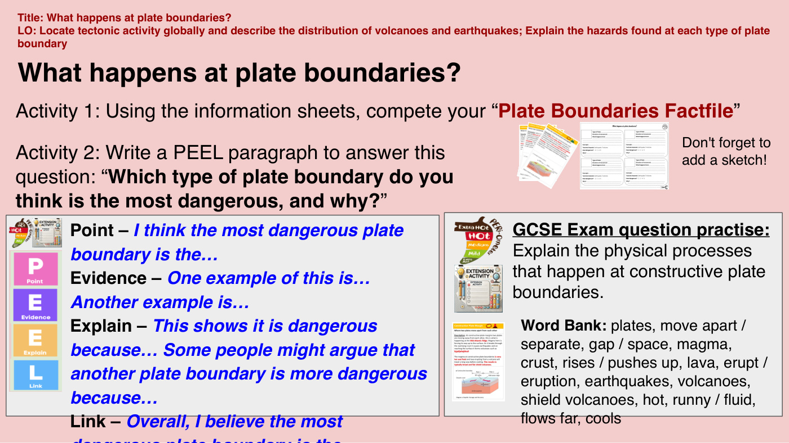
학습목표: 전 세계의 지각 활동(tectonic activity) 위치를 찾고 화산(volcanoes)과 지진(earthquakes)의 분포를 설명한다. 판 경계의 종류마다 나타나는 재해(hazards)를 설명한다.
판 경계에서는 무슨 일이 일어날까?
활동 1: 정보 자료를 보고 '판 경계 정리표(Plate Boundaries Factfile)'를 완성한다. 스케치(그림)도 꼭 넣는다.
활동 2: 다음 질문에 답하는 PEEL 문단을 쓴다. "어떤 판 경계가 가장 위험하다고 생각하는가, 그 이유는?"
P 주장(Point) – 가장 위험한 판 경계는 …라고 생각한다.
E 증거(Evidence) – 한 가지 예는 …이다. 또 다른 예는 …이다.
E 설명(Explain) – 이것은 …때문에 위험하다는 것을 보여 준다. 어떤 사람들은 다른 판 경계가 …때문에 더 위험하다고 주장할 수도 있다.
L 연결(Link) – 결론적으로 가장 위험한 판 경계는 …라고 생각한다.
GCSE 시험 문제 연습 (도전 활동):
발산형(생성형) 판 경계(constructive plate boundary)에서 일어나는 물리적 과정을 설명하라.
낱말 모음(Word Bank): 판(plates), 서로 멀어지다/갈라지다(move apart/separate), 틈/빈 공간(gap/space), 마그마(magma), 지각(crust), 솟아오르다/밀어 올리다(rises/pushes up), 용암(lava), 분출하다/분출(erupt/eruption), 지진(earthquakes), 화산(volcanoes), 순상 화산(shield volcanoes), 뜨겁다(hot), 묽다/잘 흐른다(runny/fluid), 멀리 흐른다(flows far), 식는다(cools)
PEEL 문단은 영어 문장틀(파란 글씨)을 그대로 써서 빈칸만 채우면 된다. 발산형 경계 답은 '판이 멀어짐 → 틈이 생김 → 마그마가 솟아 용암으로 분출 → 묽은 용암이 멀리 흘러 식어 순상 화산이 됨' 순서로 쓰면 된다.
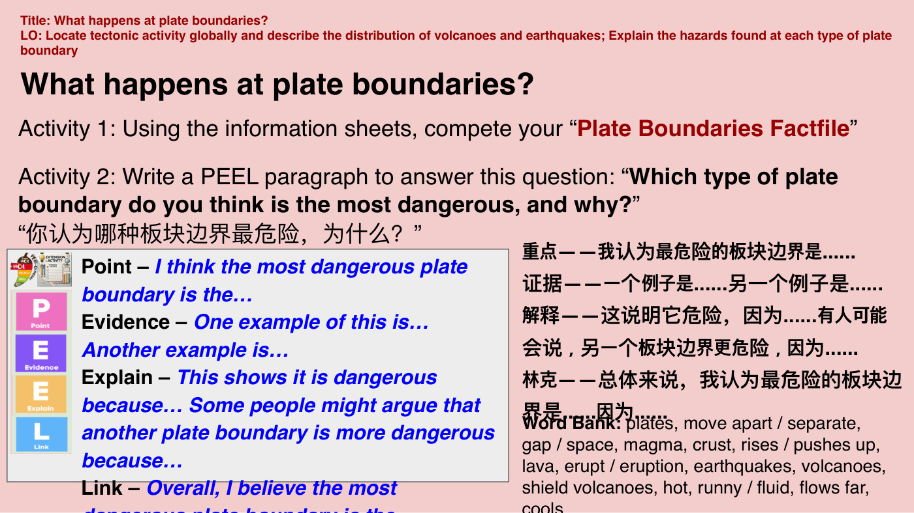
학습 목표: 전 세계의 지각 활동(tectonic activity) 위치를 찾고 화산(volcanoes)과 지진(earthquakes)의 분포를 설명한다. 판 경계 종류마다 나타나는 재해(hazards)를 설명한다.
판 경계(plate boundaries)에서는 무슨 일이 일어날까?
활동 1: 정보지를 보고 '판 경계 정리 카드(Plate Boundaries Factfile)'를 완성한다.
활동 2: 다음 질문에 답하는 PEEL 문단을 쓴다. "어떤 종류의 판 경계가 가장 위험하다고 생각하는가, 그리고 왜 그런가?"
(같은 질문이 중국어로도 적혀 있다.)
주장(Point) – 내가 생각하는 가장 위험한 판 경계는 …이다. (I think the most dangerous plate boundary is the…)
근거(Evidence) – 한 가지 예는 …이다. 또 다른 예는 …이다. (One example of this is… Another example is…)
설명(Explain) – 이것이 위험한 까닭은 …이기 때문이다. 어떤 사람은 다른 판 경계가 더 위험하다고 주장할 수도 있는데, 그 까닭은 …이다. (This shows it is dangerous because… Some people might argue that another plate boundary is more dangerous because…)
연결(Link) – 전체적으로 나는 가장 위험한 판 경계가 …라고 생각한다. (Overall, I believe the most dangerous plate boundary is the…)
(오른쪽에 같은 문장 틀이 중국어로도 적혀 있다.)
낱말 모음(Word Bank): 판(plates), 벌어지다/갈라지다(move apart / separate), 틈/빈 공간(gap / space), 마그마(magma), 지각(crust), 솟아오르다/밀어 올리다(rises / pushes up), 용암(lava), 분출하다/분출(erupt / eruption), 지진(earthquakes), 화산(volcanoes), 순상 화산(shield volcanoes), 뜨겁다(hot), 묽다/잘 흐른다(runny / fluid), 멀리 흘러간다(flows far), 식는다(cools)
PEEL은 주장(Point)→근거(Evidence)→설명(Explain)→연결(Link) 순서로 쓰는 문단 틀이다. 설명(Explain)에서 반대 의견(Some people might argue…)까지 다뤄야 높은 점수를 받는다.
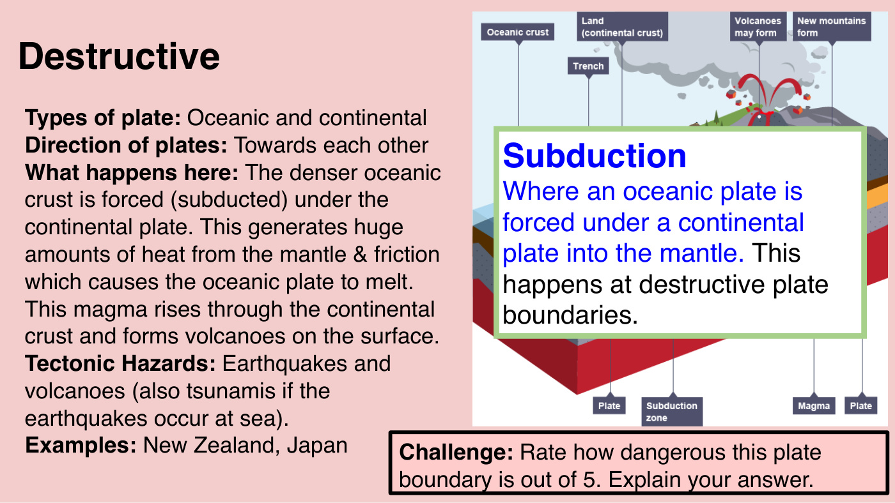
판의 종류(Types of plate): 해양판(oceanic)과 대륙판(continental)
판이 움직이는 방향(Direction of plates): 서로를 향해 다가간다(towards each other).
여기서 일어나는 일(What happens here): 밀도가 더 높은 해양 지각(oceanic crust)이 대륙판 아래로 밀려 들어간다(섭입(subducted)). 이때 맨틀(mantle)에서 오는 열과 마찰(friction) 때문에 엄청난 열이 생겨 해양판이 녹는다. 이렇게 생긴 마그마(magma)가 대륙 지각을 뚫고 올라와 땅 위에 화산(volcanoes)을 만든다.
지각 활동 재해(Tectonic Hazards): 지진(earthquakes)과 화산(volcanoes). 지진이 바다에서 일어나면 쓰나미(tsunamis)도 생긴다.
예(Examples): 뉴질랜드(New Zealand), 일본(Japan)
섭입(Subduction)
해양판이 대륙판 아래로 밀려 들어가 맨틀 속으로 내려가는 곳이다. 이 일은 파괴형 판 경계(destructive plate boundaries)에서 일어난다.
그림 이름표: 해양 지각(Oceanic crust), 육지(대륙 지각, continental crust), 해구(Trench), 화산이 생길 수 있음(Volcanoes may form), 새 산맥이 생김(New mountains form), 판(Plate), 섭입대(Subduction zone), 마그마(Magma), 판(Plate)
도전 과제(Challenge): 이 판 경계가 얼마나 위험한지 5점 만점으로 점수를 매기고, 그렇게 생각한 이유를 설명하라.
해양판이 가라앉는 까닭은 대륙판보다 밀도가 높아서(denser)라는 점을 답에 꼭 넣어야 한다. Challenge는 지진·화산·쓰나미가 모두 생길 수 있다는 점을 근거로 높은 점수를 주고 설명하면 된다.
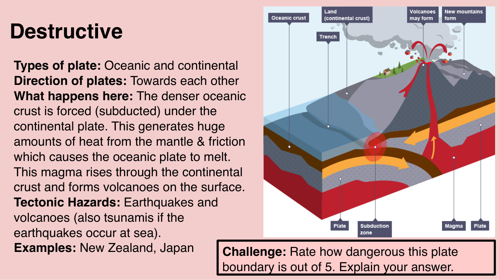
판의 종류(Types of plate): 해양판(oceanic)과 대륙판(continental)
판의 움직임 방향(Direction of plates): 서로를 향해 다가온다(towards each other)
여기서 일어나는 일: 밀도가 더 높은(denser) 해양 지각이 대륙판 아래로 밀려 들어간다(섭입, subducted). 이때 맨틀(mantle)의 열과 마찰(friction)로 엄청난 열이 생겨 해양판이 녹는다(melt). 이 마그마(magma)가 대륙 지각을 뚫고 올라와 지표면에 화산(volcanoes)을 만든다.
지각 재해(Tectonic Hazards): 지진(earthquakes)과 화산(volcanoes)(지진이 바다에서 일어나면 쓰나미(tsunamis)도 생긴다)
예시(Examples): 뉴질랜드(New Zealand), 일본(Japan)
그림 속 이름표:
해양 지각(Oceanic crust) / 육지(대륙 지각, Land – continental crust) / 해구(Trench) / 화산이 생길 수 있다(Volcanoes may form) / 새 산맥이 생긴다(New mountains form) / 판(Plate) / 섭입대(Subduction zone) / 마그마(Magma) / 판(Plate)
도전 과제(Challenge): 이 판 경계가 얼마나 위험한지 5점 만점으로 점수를 매기고, 그 이유를 설명하라.
해양판이 대륙판 아래로 들어가는 까닭은 해양판의 밀도가 더 높아서(denser)다. 도전 과제에 답할 때는 지진·화산·쓰나미 세 가지 재해가 모두 일어날 수 있고 일본처럼 사람이 많이 사는 곳에 있다는 점을 근거로 들면 좋다.
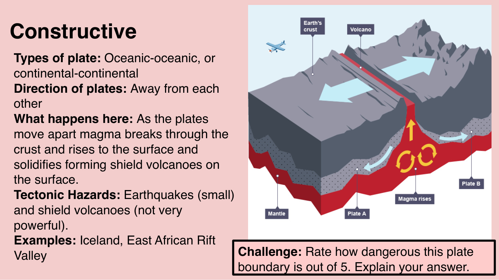
판의 종류(Types of plate): 해양판-해양판(oceanic-oceanic), 또는 대륙판-대륙판(continental-continental)
판의 이동 방향(Direction of plates): 서로 멀어진다(away from each other)
여기서 일어나는 일(What happens here): 판이 서로 멀어지면 마그마(magma)가 지각(crust)을 뚫고 지표로 올라온 뒤 굳어서, 지표에 순상화산(shield volcano)을 만든다.
지각 활동 재해(Tectonic Hazards): 지진(earthquakes)(작다)과 순상화산(shield volcanoes)(그다지 강하지 않다)
예시(Examples): 아이슬란드(Iceland), 동아프리카 열곡대(East African Rift Valley)
[그림] 판 A(Plate A)와 판 B(Plate B)가 화살표 방향으로 서로 멀어지고, 그 사이 갈라진 틈으로 맨틀(mantle)의 마그마가 올라온다(magma rises). 틈 위에는 화산(volcano)이 있고, 양옆은 지각(Earth's crust)이다. 맨틀 속 노란 원형 화살표는 판을 움직이는 대류를 나타낸다.
도전 과제(Challenge): 이 판 경계가 얼마나 위험한지 5점 만점으로 점수를 매기고, 그 이유를 설명하라.
Constructive는 '새 지각을 만든다(construct)'는 뜻으로, divergent boundary라고도 부른다. 도전 과제는 지진이 작고 순상화산의 분출이 약하므로 낮은 점수(예: 1~2점)를 주고 그 두 가지를 근거로 쓰면 된다.
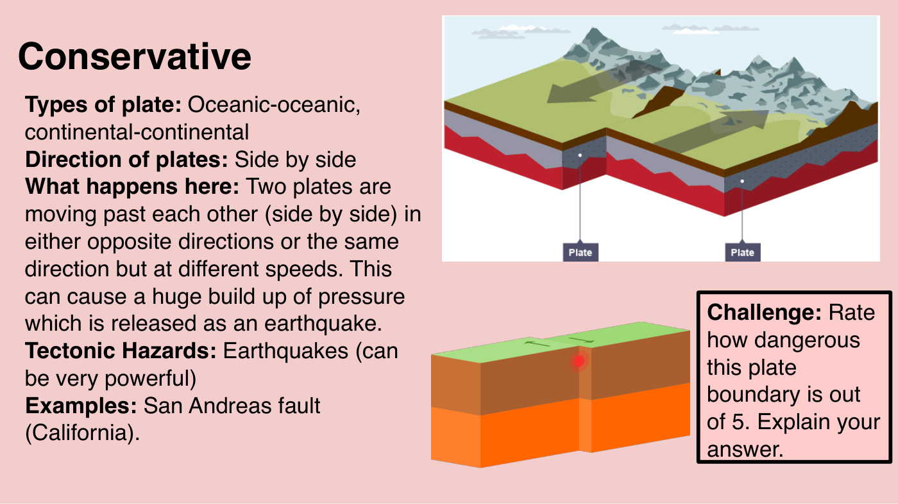
판의 종류(Types of plate): 해양판-해양판(oceanic-oceanic), 대륙판-대륙판(continental-continental)
판의 움직이는 방향(Direction of plates): 나란히 옆으로(side by side)
여기서 일어나는 일(What happens here): 두 판이 서로 옆으로 스치며 지나간다(moving past each other). 서로 반대 방향으로 움직이기도 하고, 같은 방향이지만 다른 속도로 움직이기도 한다. 이 때문에 엄청난 압력(pressure)이 쌓이고, 이 압력이 풀려나올 때 지진(earthquake)이 된다.
지각 변동 재해(Tectonic Hazards): 지진(매우 강력할 수 있다)
예시(Examples): 산안드레아스 단층(San Andreas fault)(미국 캘리포니아)
그림 1: 두 판(Plate)이 화살표 방향으로 서로 엇갈려 옆으로 미끄러지는 모습이다.
그림 2: 땅이 경계선을 따라 서로 반대 방향(화살표)으로 밀리고, 경계에 빨간 점(지진이 시작되는 곳)이 찍혀 있다.
도전 과제(Challenge): 이 판 경계가 얼마나 위험한지 5점 만점으로 점수를 매기고, 그 이유를 설명하라.
보존형 경계에서는 판이 새로 생기거나 없어지지 않아서 '보존(conservative)'이라 부르고, 마그마가 올라오지 않으므로 화산은 없고 지진만 생긴다. 도전 과제에 답할 때는 '화산은 없지만 쌓인 압력이 한꺼번에 풀려 강한 지진이 날 수 있다'는 점을 근거로 쓰면 된다.
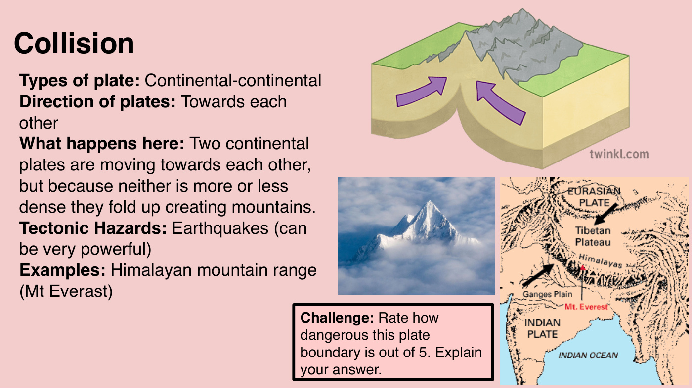
판의 종류(Types of plate): 대륙판-대륙판(continental-continental)
판이 움직이는 방향(Direction of plates): 서로를 향해(towards each other)
여기서 일어나는 일(What happens here): 두 대륙판(continental plates)이 서로를 향해 움직이지만, 어느 쪽도 밀도가 더 크거나 작지 않아서 위로 접혀 올라가(fold up) 산맥(mountains)을 만든다.
지각 변동 재해(Tectonic Hazards): 지진(earthquakes) (매우 강력할 수 있다)
예(Examples): 히말라야산맥(Himalayan mountain range) (에베레스트산, Mt Everest)
[그림 1] 두 판이 보라색 화살표 방향으로 서로 밀어 가운데 땅이 솟아 산이 생긴 단면도다.
[그림 2] 구름 위로 솟은 눈 덮인 뾰족한 산봉우리 사진이다.
[그림 3] 지도: 위쪽 유라시아판(Eurasian Plate)과 티베트고원(Tibetan Plateau), 아래쪽 인도판(Indian Plate)과 갠지스평원(Ganges Plain)·인도양(Indian Ocean)이 있고, 두 화살표가 서로 마주 보며 그 사이에 히말라야(Himalayas)와 에베레스트산(Mt. Everest)이 표시돼 있다.
도전 과제(Challenge): 이 판 경계가 얼마나 위험한지 5점 만점으로 점수를 매기고, 그 이유를 설명하라.
충돌 경계에서는 두 대륙판의 밀도가 비슷해 어느 판도 아래로 가라앉지 않는다(섭입(subduction)이 없음). 그래서 화산은 거의 생기지 않고 지진과 높은 습곡 산맥(fold mountains)이 생긴다는 점을 섭입대와 구별해 두자.
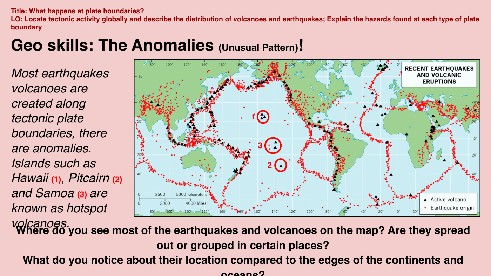
학습 목표: 전 세계의 지각 활동 위치를 찾고 화산과 지진의 분포(distribution)를 설명한다. 판 경계의 종류마다 생기는 재해(hazards)를 설명한다.
지리 기술: 예외(Anomalies, 특이한 패턴)!
대부분의 지진과 화산은 판 경계(tectonic plate boundaries)를 따라 생기지만, 예외도 있다. 하와이(Hawaii)(1), 핏케언(Pitcairn)(2), 사모아(Samoa)(3) 같은 섬은 열점 화산(hotspot volcanoes)이라고 한다.
지도: 최근 지진과 화산 분화(Recent earthquakes and volcanic eruptions)
- 검은 세모 = 활화산(active volcano)
- 빨간 점 = 진원(earthquake origin)
- 태평양 한가운데 빨간 동그라미 1(하와이), 2(핏케언), 3(사모아)은 판 경계에서 멀리 떨어진 화산이다.
- 축척: 0~5000킬로미터, 0~4000마일
질문 1: 지도에서 지진과 화산이 가장 많이 보이는 곳은 어디인가? 널리 퍼져 있는가, 아니면 특정한 곳에 모여(grouped) 있는가?
질문 2: 대륙과 바다의 가장자리(edges)와 비교하면 그 위치에서 무엇을 알 수 있는가?
빨간 점과 세모는 태평양 둘레(환태평양 조산대, Ring of Fire)처럼 판 경계를 따라 띠 모양으로 모여 있다. 답을 쓸 때는 'clustered along plate boundaries'처럼 쓰고, 하와이처럼 판 한가운데 있는 화산은 예외(anomaly)인 열점(hotspot)이라고 쓴다.
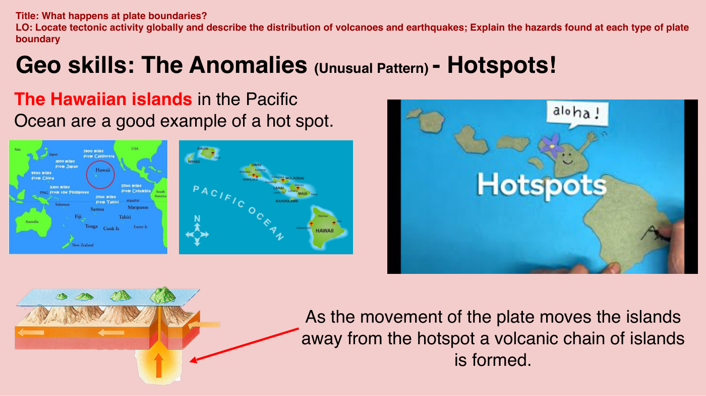
학습 목표: 전 세계 지각 활동의 위치를 찾고 화산과 지진의 분포(distribution)를 설명한다. 판 경계 종류마다 나타나는 재해(hazards)를 설명한다.
지리 기술: 예외(The Anomalies, 특이한 패턴) - 열점(Hotspots)!
태평양(Pacific Ocean)의 하와이 제도(The Hawaiian islands)는 열점(hot spot)의 좋은 예다.
[왼쪽 지도] 태평양 한가운데 빨간 원으로 표시된 하와이. 캘리포니아에서 2,400마일, 일본에서 3,800마일, 중국에서 4,900마일, 필리핀에서 5,300마일, 콜롬비아에서 5,700마일, 타히티에서 2,700마일 떨어져 있다. 그 밖에 아시아·일본·미국·남아메리카·오스트레일리아·뉴질랜드·솔로몬·파푸아뉴기니·피지·통가·사모아·쿡 제도·마르키즈·이스터섬·적도(equator)가 표시돼 있다.
[가운데 지도] 하와이 제도의 섬들: 카우아이(Kauai), 니하우(Niihau), 오아후(Oahu), 몰로카이(Molokai), 라나이(Lanai), 마우이(Maui), 카호올라웨(Kahoolawe), 하와이(Hawaii). 태평양(PACIFIC OCEAN)과 북쪽(N) 방향 표시가 있다.
[오른쪽 그림] '열점(Hotspots)' 영상 화면. 하와이 섬 그림이 'aloha!(안녕!)'라고 인사한다.
[아래 그림] 판이 화살표 방향으로 움직이고, 판 아래 고정된 열점에서 마그마가 올라와 화산섬을 만든다. 열점에서 멀어진 섬일수록 낮고 오래된 화산이다.
판의 움직임(movement of the plate)이 섬들을 열점에서 멀리 옮기면서 화산섬 사슬(volcanic chain of islands)이 만들어진다.
대부분의 화산은 판 경계에 있지만 열점은 판 한가운데에 생기므로 '예외(anomaly)'라고 부른다. 열점은 움직이지 않고 판만 움직이기 때문에 섬이 한 줄로 늘어서며, 열점 바로 위의 섬(하와이섬)이 가장 젊고 활동 중인 화산이다.
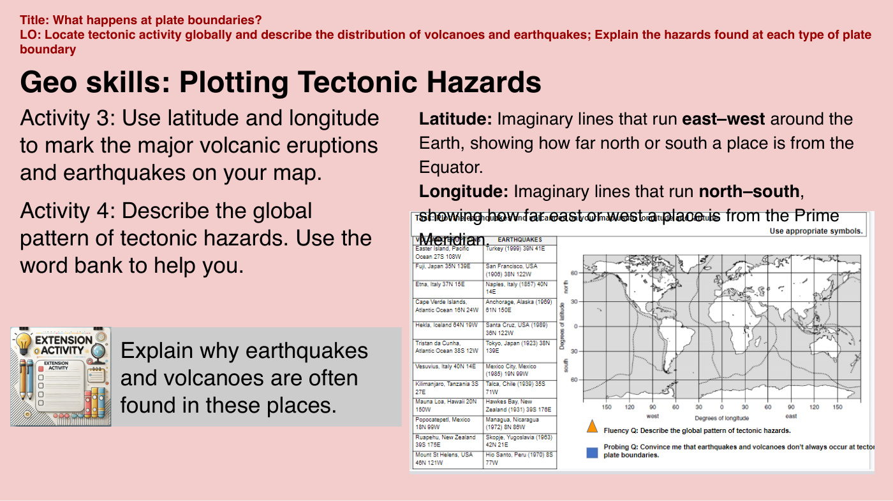
학습 목표: 전 세계의 지각 활동(tectonic activity) 위치를 찾고 화산(volcanoes)과 지진(earthquakes)의 분포(distribution)를 설명한다. 판 경계의 종류마다 나타나는 재해(hazards)를 설명한다.
지리 기술: 지각 재해 표시하기(Plotting Tectonic Hazards)
활동 3: 위도(latitude)와 경도(longitude)를 써서 큰 화산 폭발과 지진이 일어난 곳을 지도에 표시한다.
활동 4: 지각 재해가 전 세계에 퍼져 있는 패턴(global pattern)을 설명한다. 낱말 모음(word bank)을 참고한다.
위도(Latitude): 지구를 동서(east–west)로 도는 가상의 선이다. 어떤 곳이 적도(Equator)에서 북쪽이나 남쪽으로 얼마나 떨어져 있는지 보여 준다.
경도(Longitude): 남북(north–south)으로 이어진 가상의 선이다. 어떤 곳이 본초 자오선(Prime Meridian)에서 동쪽이나 서쪽으로 얼마나 떨어져 있는지 보여 준다.
심화 활동(Extension Activity): 지진과 화산이 왜 이런 곳에 자주 나타나는지 설명한다.
과제: 화산과 지진을 위도·경도로 지도에 표시한다. 알맞은 기호를 쓴다.
화산(VOLCANOES) 목록: 이스터섬(태평양) 27S 108W / 후지산(일본) 35N 139E / 에트나(이탈리아) 37N 15E / 카보베르데 제도(대서양) 16N 24W / 헤클라(아이슬란드) 64N 19W / 트리스탄다쿠냐(대서양) 38S 12W / 베수비오(이탈리아) 40N 14E / 킬리만자로(탄자니아) 3S 37E / 마우나로아(하와이) 20N 150W / 포포카테페틀(멕시코) 18N 99W / 루아페후(뉴질랜드) 39S 175E / 세인트헬렌스산(미국) 46N 121W
지진(EARTHQUAKES) 목록: 터키(1999) 39N 41E / 샌프란시스코(미국, 1906) 38N 122W / 나폴리(이탈리아, 1857) 40N 14E / 앵커리지(알래스카, 1969) 61N 150E / 산타크루즈(미국, 1989) 36N 122W / 도쿄(일본, 1923) 38N 139E / 멕시코시티(멕시코, 1985) 19N 99W / 탈카(칠레, 1939) 35S 71W / 호크스베이(뉴질랜드, 1931) 39S 176E / 마나과(니카라과, 1972) 8N 86W / 스코페(유고슬라비아, 1963) 42N 21E / 우아스카란·산타(페루, 1970) 8S 77W
지도: 세로축은 위도(북 60·30·0·남 30·60), 가로축은 경도(서 150~0~동 150)인 세계 지도이고 판 경계가 점선으로 그려져 있다.
▲ 주황 삼각형 = 화산, ■ 파란 네모 = 지진 기호다.
기본 질문(Fluency Q): 지각 재해의 전 세계 패턴을 설명한다.
심화 질문(Probing Q): 지진과 화산이 늘 판 경계(plate boundaries)에서만 일어나는 것은 아니라는 점을 설득력 있게 설명한다.
좌표는 N·S(북·남 위도)를 먼저, E·W(동·서 경도)를 나중에 읽는다. 대부분 점은 판 경계 점선 위에 모이지만 하와이(마우나로아)처럼 판 한가운데의 열점(hotspot)에서도 화산이 생긴다는 것이 심화 질문의 답이 된다.
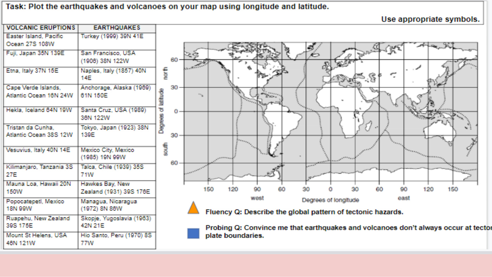
화산 분출(VOLCANIC ERUPTIONS)
이스터섬, 태평양 27S 108W
후지산, 일본 35N 139E
에트나산, 이탈리아 37N 15E
카보베르데 제도, 대서양 16N 24W
헤클라산, 아이슬란드 64N 19W
트리스탄다쿠냐, 대서양 38S 12W
베수비오산, 이탈리아 40N 14E
킬리만자로산, 탄자니아 3S 27E
마우나로아산, 하와이 20N 150W
포포카테페틀산, 멕시코 18N 99W
루아페후산, 뉴질랜드 39S 175E
세인트헬렌스산, 미국 46N 121W
지진(EARTHQUAKES)
터키(1999) 39N 41E
샌프란시스코, 미국(1906) 38N 122W
나폴리, 이탈리아(1857) 40N 14E
앵커리지, 알래스카(1969) 61N 150E
산타크루즈, 미국(1989) 36N 122W
도쿄, 일본(1923) 38N 139E
멕시코시티, 멕시코(1985) 19N 99W
탈카, 칠레(1939) 35S 71W
호크스베이, 뉴질랜드(1931) 39S 176E
마나과, 니카라과(1972) 8N 86W
스코페, 유고슬라비아(1963) 42N 21E
리오산토, 페루(1970) 8S 77W
지도: 세계 지도에 위선·경선 격자가 그려져 있고, 점선으로 판 경계(plate boundaries)가 표시되어 있다. 세로축은 위도(degrees of latitude)로 북(north) 60·30, 0(적도), 남(south) 30·60이고, 가로축은 경도(degrees of longitude)로 서(west) 150~30, 0, 동(east) 30~150이다.
🔺 기본 질문(Fluency Q): 전 세계 지각 변동 재해(tectonic hazards)의 분포 패턴을 설명하라.
🟦 심화 질문(Probing Q): 지진과 화산이 항상 판 경계(tectonic plate boundaries)에서만 일어나는 것은 아니라는 것을 근거를 들어 설득하라.
N·S는 위도(적도 기준 북·남), E·W는 경도(본초자오선 기준 동·서)이므로 표의 좌표를 지도에 찍을 때 위도를 세로축, 경도를 가로축에서 찾는다. 하와이(마우나로아)처럼 판 경계에서 멀리 떨어진 곳은 열점(hotspot) 화산이라서 심화 질문의 좋은 예가 된다.
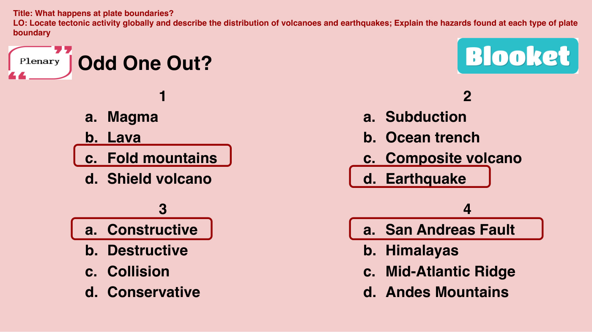
학습목표(LO): 전 세계의 지각 활동(tectonic activity) 위치를 찾고 화산(volcanoes)과 지진(earthquakes)의 분포를 설명한다. 판 경계의 종류마다 나타나는 재해(hazards)를 설명한다.
마무리 활동(Plenary) — 나머지와 다른 하나는?(Odd One Out?) · 블루킷(Blooket) 퀴즈
1번
a. 마그마(Magma)
b. 용암(Lava)
c. 습곡 산맥(Fold mountains) ← 정답 표시
d. 순상 화산(Shield volcano)
2번
a. 섭입(Subduction)
b. 해구(Ocean trench)
c. 복합 화산(Composite volcano)
d. 지진(Earthquake) ← 정답 표시
3번
a. 발산형 경계(Constructive) ← 정답 표시
b. 파괴형 경계(Destructive)
c. 충돌형 경계(Collision)
d. 보존형 경계(Conservative)
4번
a. 산안드레아스 단층(San Andreas Fault) ← 정답 표시
b. 히말라야 산맥(Himalayas)
c. 대서양 중앙 해령(Mid-Atlantic Ridge)
d. 안데스 산맥(Andes Mountains)
빨간 네모가 정답이다. 1번은 습곡 산맥만 화산·마그마와 관계없고, 2번은 섭입·해구·복합 화산이 모두 파괴형 경계의 특징인데 지진은 모든 경계에서 일어난다. 3번은 발산형 경계만 판이 서로 멀어지고, 4번은 산안드레아스만 산맥·해령 같은 지형이 아니라 단층이다.
자료에서 이름 붙이기(labelling)로 다루는 층은 지각(the crust), 맨틀(the mantle), 외핵(the outer core), 내핵(the inner core)이며, 여기에 암석권(Lithosphere)과 연약권(Asthenosphere)도 함께 나온다. 앞의 넷은 깊이 순서로 된 층 이름이고, 뒤의 둘은 지각과 맨틀 윗부분을 성질(단단한지 무른지)로 다시 나눈 이름이다.
동영상 'Why does the earth have layers?'를 보면서 객관식 문제를 푸는 활동이 있고, 정답을 초록 펜(green pen)으로 고쳐 적는다. 자료에 실린 정답 내용에는 지구가 서로 다른 밀도의 층으로 나뉜 점, 무거운 물질은 핵으로 가라앉는다는 점, 지구 자기장이 액체 상태의 외핵 때문에 생겨 태양풍(solar wind)으로부터 우리를 보호한다는 점, 내핵은 고체라는 점, 그리고 지진파가 고체층과 액체층을 지날 때 다르게 이동하기 때문에 층의 구조를 알 수 있다는 점이 있다.
✍️ 꼭 알아야 하는 것
- 지구의 네 층(지각·맨틀·외핵·내핵)을 순서대로 그리고 이름을 붙일 수 있어야 하며, 여기에 암석권(Lithosphere)과 연약권(Asthenosphere)이 어디에 해당하는지도 함께 알아야 한다.
- 외핵은 액체, 내핵은 고체라는 점과 그 때문에 생기는 결과(액체 외핵 → 자기장 → 태양풍 차단, 고체·액체에서 지진파의 이동 방식이 달라짐)를 연결해서 설명할 수 있어야 한다.
- 층을 아는 것에서 끝내지 말고, 판 활동이 일어나는 곳을 세계 지도에서 찾아 화산과 지진이 어디에 몰려 있는지 그 분포를 말로 설명할 수 있어야 한다.
📚 이 자료의 핵심 단어
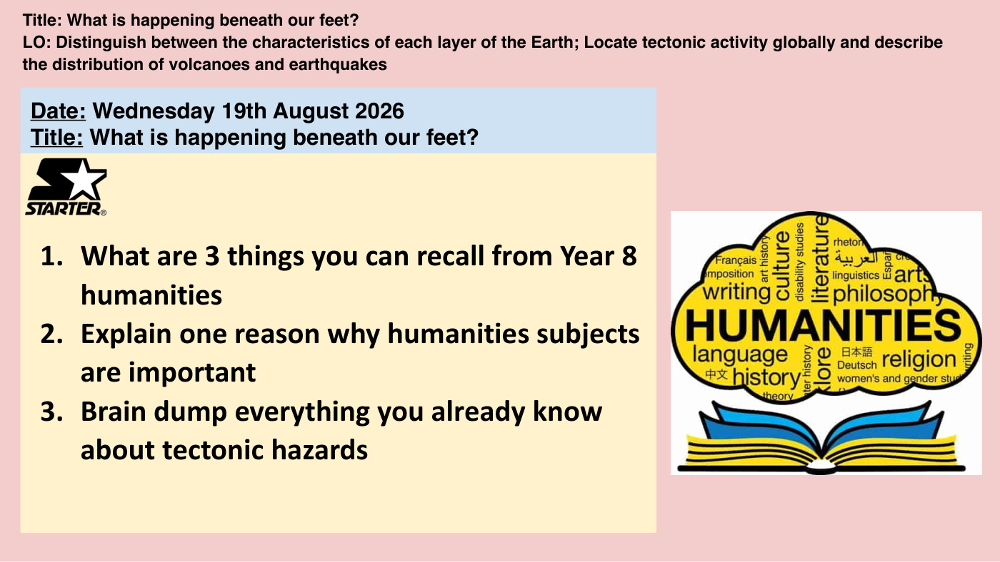
학습 목표(LO): 지구 각 층(layer of the Earth)의 특징을 구별한다. 전 세계의 지각 활동(tectonic activity) 위치를 찾고 화산(volcanoes)과 지진(earthquakes)의 분포(distribution)를 설명한다.
날짜: 2026년 8월 19일 수요일
제목: 우리 발밑에서는 무슨 일이 일어나고 있을까?
시작 활동(STARTER)
1. 8학년 인문학(humanities) 수업에서 기억나는 것 3가지는 무엇인가?
2. 인문학 과목이 중요한 이유를 한 가지 설명하라.
3. 지각 판 재해(tectonic hazards)에 대해 이미 알고 있는 것을 모두 적어 내라(brain dump).
(오른쪽 그림: 펼친 책 위 구름 안에 큰 글씨 HUMANITIES와 함께 history(역사), religion(종교), philosophy(철학), language(언어), literature(문학), culture(문화), writing(글쓰기), arts(예술) 같은 인문학 분야 낱말이 가득 적혀 있다.)
tectonic hazards는 지구 판의 움직임 때문에 생기는 재해로, 지진·화산 폭발·쓰나미가 대표적이다. 3번은 정답이 정해진 문제가 아니라 아는 것을 자유롭게 모두 적어 보는 활동이다.

학습 목표(LO): 지구 각 층(layer)의 특징을 구별한다. 전 세계 지각 활동(tectonic activity)의 위치를 찾고 화산(volcano)과 지진(earthquake)의 분포(distribution)를 설명한다.
성공 기준(Success Criteria)
🌍 Meeting(기준 도달): 지구의 층(Earth's layers)을 설명하고 지진과 화산의 위치를 찾을 수 있다.
🔎 Exceeding(기준 초과): 지구의 층을 비교하고 지각 활동의 패턴(pattern)을 찾아낼 수 있다.
🧠 Mastering(완전 숙달): 지각 활동이 왜 일어나는지 설명하고 전 세계 패턴을 분석(analyse)할 수 있다.
핵심 탐구 질문(Key Enquiry Question)
"우리 발밑에서는 무슨 일이 일어나고 있으며, 그것이 전 세계 지진과 화산의 분포를 어떻게 만들어 내는가?"
오른쪽 그림: 지구를 잘라 속을 보여 준다.
- 지각(crust): 가장 바깥의 얇은 층, 우리가 사는 곳
- 맨틀(mantle): 뜨겁고 반쯤 고체인 암석으로 된 두꺼운 층, 천천히 움직인다
- 외핵(outer core): 내핵을 둘러싼 액체 금속 층
- 내핵(inner core): 고체 금속으로 된 중심, 매우 뜨겁다
오른쪽 위에는 분화하는 화산과 "지각 활동은 우리 세상을 만들고 수백만 명의 삶에 영향을 준다"는 메모가 있다.
아래에는 지진과 화산의 전 세계 분포 지도(빨간 점=지진, 노란 세모=화산)가 있다.
왼쪽 메모: "우리 행성은 늘 움직이고 있다 – 우리 발밑 깊은 곳에서!"
아이콘: 지진(Earthquakes) · 화산(Volcanoes) · 지각 활동(Tectonic activity)
지구의 네 층은 바깥에서 안쪽 순서로 지각(crust) → 맨틀(mantle) → 외핵(outer core) → 내핵(inner core)이다. 외핵만 액체이고 내핵은 고체라는 점을 꼭 기억한다.
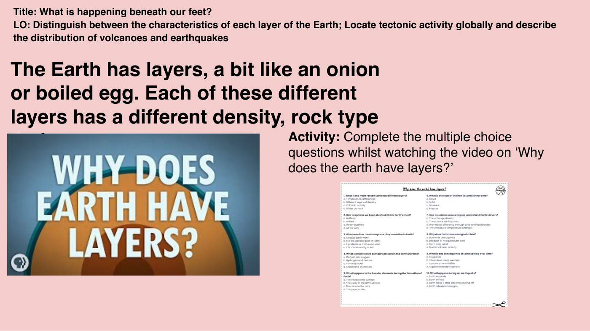
학습 목표(LO): 지구의 각 층(layer)이 가진 특징을 구별한다. 전 세계의 지각 활동(tectonic activity) 위치를 찾고, 화산(volcano)과 지진(earthquake)의 분포(distribution)를 설명한다.
지구는 양파나 삶은 달걀처럼 층(layers)으로 되어 있다. 이 층들은 저마다 밀도(density)와 암석 종류(rock type)가 다르다. (문장 끝부분은 그림에 가려져 있다.)
왼쪽 그림: 영상 'Why does Earth have layers?(지구에는 왜 층이 있을까?)'의 첫 화면이다. 층으로 나뉜 지구 단면 위에 제목 글자가 적혀 있다.
활동(Activity): 영상 'Why does the earth have layers?'를 보면서 객관식 문제를 푼다.
활동지: 지구에는 왜 층이 있을까?
1. 지구에 여러 층이 생긴 가장 큰 이유는? a. 온도 차이 b. 층마다 다른 밀도(density) c. 화산 활동 d. 물의 양
2. 사람은 지각(crust)을 얼마나 깊이 뚫어 보았나? a. 절반 b. 3분의 1 c. 4분의 3 d. 끝까지
3. 대기(atmosphere)는 지구에 어떤 역할을 하나? a. 지구를 따뜻하게 한다 b. 지구에서 가장 밀도가 높은 부분이다 c. 태양풍(solar wind)에서 우리를 지킨다 d. 대부분 철로 되어 있다
4. 초기 우주에 주로 있던 원소는? a. 탄소와 산소 b. 수소(hydrogen)와 헬륨(helium) c. 철과 니켈 d. 규소와 알루미늄
5. 지구가 생길 때 무거운 원소는 어떻게 되었나? a. 표면으로 떠오른다 b. 대기에 머문다 c. 핵(core)으로 가라앉는다 d. 증발한다
6. 내핵(inner core)의 철은 어떤 상태인가? a. 액체 b. 고체 c. 기체 d. 플라스마
7. 지진파(seismic waves)는 지구의 층을 이해하는 데 어떻게 도움이 되나? a. 밀도를 바꾼다 b. 지진을 일으킨다 c. 고체층과 액체층을 지날 때 다르게 움직인다 d. 온도 변화를 잰다
8. 지구에 자기장(magnetic field)이 있는 이유는? a. 대기 때문에 b. 액체인 외핵(outer core) 때문에 c. 태양풍에서 생겨서 d. 화산 활동 때문에
9. 지구가 오랜 시간 식으면서 생기는 결과 하나는? a. 지구가 팽창한다 b. 화산이 더 많아진다 c. 외핵이 굳는다 d. 대기가 더 많아진다
10. 지진이 일어날 때 무슨 일이 생기나? a. 지구가 팽창한다 b. 지구가 줄어든다 c. 지구가 식는 쪽으로 한 걸음 더 간다 d. 지구가 기체를 더 내뿜는다
층이 생긴 이유의 핵심은 밀도(density)다. 무거운 원소는 가라앉아 핵(core)이 되고 가벼운 물질은 위로 떠올라 지각(crust)이 된다. 외핵(outer core)은 액체, 내핵(inner core)은 고체라는 점도 함께 기억한다.
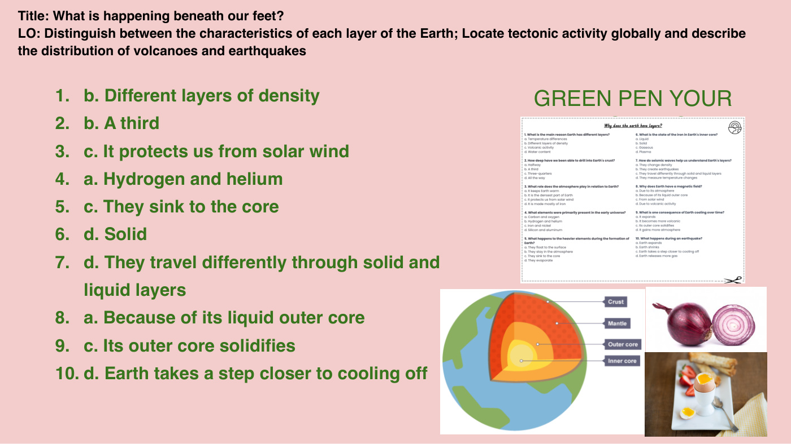
학습 목표: 지구 각 층(layer)의 특징을 구별한다. 전 세계의 지각 활동(tectonic activity) 위치를 찾고 화산(volcano)과 지진(earthquake)의 분포(distribution)를 설명한다.
초록 펜으로 답을 채점하자 (GREEN PEN YOUR answers)
학습지: 지구는 왜 층으로 되어 있을까?
1. 지구가 층으로 나뉜 주된 이유는? → b. 밀도(density)가 서로 다른 층
2. 사람이 지각(crust)을 얼마나 깊이 뚫어 보았나? → b. 3분의 1
3. 지구에서 대기(atmosphere)는 어떤 역할을 하나? → c. 태양풍(solar wind)으로부터 우리를 지켜 준다
4. 초기 우주에 주로 있던 원소는? → a. 수소(hydrogen)와 헬륨(helium)
5. 지구가 만들어질 때 무거운 원소는 어떻게 되었나? → c. 핵(core)으로 가라앉았다
6. 지구 내핵(inner core)의 철은 어떤 상태인가? → d. 고체(solid)
7. 지진파(seismic waves)는 지구의 층을 이해하는 데 어떻게 도움이 되나? → d. 고체층과 액체층(solid and liquid layers)을 지날 때 다르게 이동한다
8. 지구에 자기장(magnetic field)이 있는 이유는? → a. 액체 상태의 외핵(liquid outer core) 때문이다
9. 지구가 시간이 지나며 식으면 생기는 결과는? → c. 외핵이 굳는다(outer core solidifies)
10. 지진이 일어날 때 무슨 일이 생기나? → d. 지구가 식는 쪽으로 한 걸음 더 다가간다
그림: 지구 단면도 — 지각(crust), 맨틀(mantle), 외핵(outer core), 내핵(inner core). 옆에는 반으로 자른 양파와 삶은 달걀이 있어 지구가 층으로 되어 있다는 것을 비유한다.
핵심은 외핵은 액체(liquid), 내핵은 고체(solid)라는 점이다. 액체 외핵이 움직이면서 자기장(magnetic field)이 생기고, 지진파가 고체와 액체를 지날 때 다르게 움직이기 때문에 과학자들이 지구 속 층을 알아낼 수 있다.
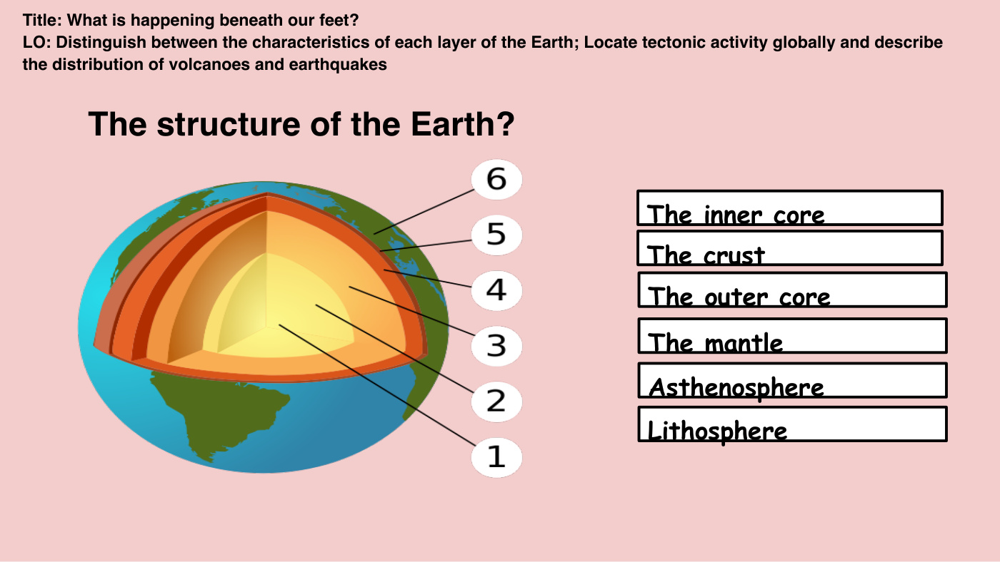
학습목표(LO): 지구의 각 층이 가진 특징(characteristics)을 구별한다. 전 세계에서 일어나는 지각 활동(tectonic activity)의 위치를 찾고, 화산(volcanoes)과 지진(earthquakes)이 어떻게 분포(distribution)하는지 설명한다.
지구의 구조(The structure of the Earth)는?
지구 한쪽을 잘라 속을 보여 주는 그림이다. 층마다 1번~6번 번호가 붙어 있다. 1번은 한가운데를 가리키고, 번호가 커질수록 바깥쪽 층을 가리킨다. 6번은 겉면을 가리킨다.
오른쪽 낱말 상자(번호에 맞춰 연결하기):
· 내핵(The inner core)
· 지각(The crust)
· 외핵(The outer core)
· 맨틀(The mantle)
· 연약권(Asthenosphere)
· 암석권(Lithosphere)
낱말 상자는 번호 순서대로 적혀 있지 않다. 안쪽부터 내핵(inner core) → 외핵(outer core) → 맨틀(mantle) → 연약권(asthenosphere) → 암석권(lithosphere) → 지각(crust) 순서로 생각하며 번호에 맞춰 연결하면 된다. 암석권은 지각과 맨틀 맨 윗부분을 합친 단단한 층이고, 연약권은 그 아래에 있는 조금 물렁한 맨틀 층이다.
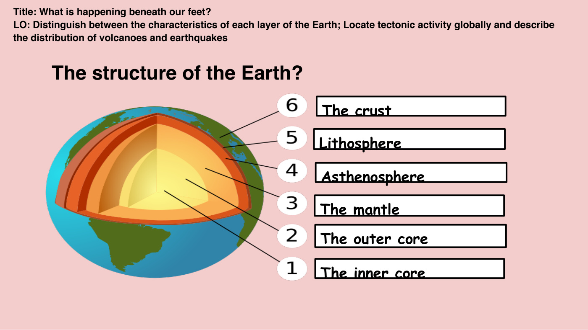
학습목표: 지구의 각 층(layer)이 가진 특징을 구별한다. 전 세계의 지각 활동(tectonic activity)이 어디서 일어나는지 찾고, 화산(volcanoes)과 지진(earthquakes)의 분포(distribution)를 설명한다.
지구의 구조(The structure of the Earth)는?
지구를 잘라 속을 보여 주는 그림에 번호 6개가 붙어 있다.
6. 지각(the crust)
5. 암석권(lithosphere)
4. 연약권(asthenosphere)
3. 맨틀(the mantle)
2. 외핵(the outer core)
1. 내핵(the inner core)
번호 1이 지구 한가운데이고 6이 바깥이다. 암석권(lithosphere)은 지각과 맨틀 맨 윗부분을 합친 단단한 층이고, 연약권(asthenosphere)은 그 바로 아래에서 천천히 흐를 수 있는 말랑한 층이다.
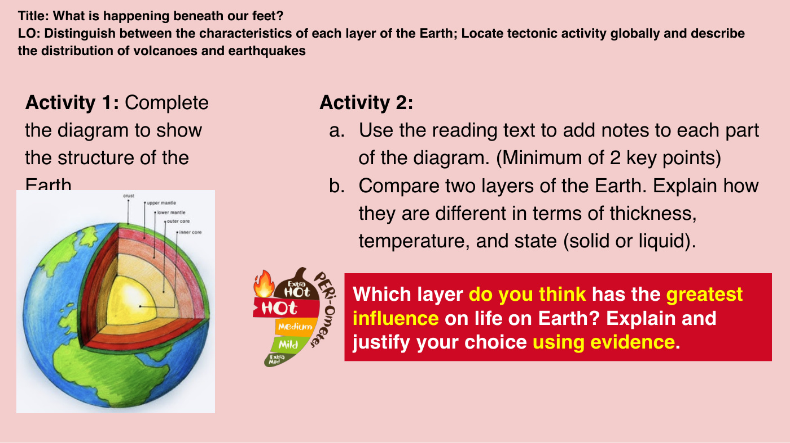
학습 목표: 지구의 각 층(layer)이 가진 특징을 구별한다. 전 세계의 판 구조 활동(tectonic activity)이 어디서 일어나는지 찾고, 화산(volcano)과 지진(earthquake)의 분포(distribution)를 설명한다.
활동 1: 그림을 완성해 지구의 구조(structure of the Earth)를 나타낸다.
[그림: 지구를 한 조각 잘라 낸 단면도. 바깥부터 지각(crust) → 상부 맨틀(upper mantle) → 하부 맨틀(lower mantle) → 외핵(outer core) → 내핵(inner core) 이름표가 붙어 있다.]
활동 2:
a. 읽기 자료를 이용해 그림의 각 부분에 메모를 붙인다. (최소 핵심 내용 2가지(key points)씩)
b. 지구의 두 층을 비교한다. 두께(thickness), 온도(temperature), 상태(state) — 고체(solid)인지 액체(liquid)인지 면에서 어떻게 다른지 설명한다.
[페리-오미터(PERI-Ometer) 고추 그림: 아주 매움(Extra Hot) · 매움(Hot) · 보통(Medium) · 순함(Mild) · 아주 순함(Extra Mild) — 문제 난이도 표시. 이 문제는 매움(Hot) 단계다.]
도전 문제: 지구의 어느 층이 지구의 생명체에 가장 큰 영향(greatest influence)을 준다고 생각하는가? 증거(evidence)를 들어 설명하고 선택한 이유를 정당화(justify)하라.
외핵(outer core)만 액체이고 내핵(inner core)은 매우 뜨겁지만 엄청난 압력 때문에 고체다. 도전 문제는 정답이 하나가 아니므로, 예를 들어 지각(crust)은 생물이 사는 곳이고 외핵(outer core)은 자기장(magnetic field)을 만들어 해로운 태양풍을 막아 준다는 식으로 근거를 붙여 쓰면 된다.

학습 목표(LO): 지구의 각 층(layer)의 특징을 구별한다. 전 세계에서 지각 활동(tectonic activity)이 일어나는 곳을 찾고, 화산(volcanoes)과 지진(earthquakes)의 분포(distribution)를 설명한다.
마무리 활동(plenary) · Blooket
SCRABBLE(스크래블) 글자 타일 그림이 있다. 알파벳마다 점수가 적혀 있다.
A 1, B 3, C 3, D 2
E 1, F 4, G 2, H 4, I 1, J 8
K 5, L 1, M 3, N 1, O 1, P 3
Q 10, R 1, S 1, T 1, U 1, V 4
W 4, X 8, Y 4, Z 10
활동: 스크래블(Scrabble)
오늘 수업이나 지난 인문학(humanities) 수업에서 배운 핵심 낱말(keyword)이나 핵심 용어(key term)를 하나 떠올린다.
스크래블 타일로 그 낱말의 철자를 쓰고 점수를 모두 더한다.
스크래블 글자 점수가 가장 높은 낱말을 만든 사람은 하우스 점수(house points)를 받는다.
점수가 높은 글자(Q·Z 10점, J·X 8점)가 들어간 용어를 고르면 유리하다. 예: earthquake(지진) = 1+1+1+1+4+10+1+1+5+1 = 26점이다.
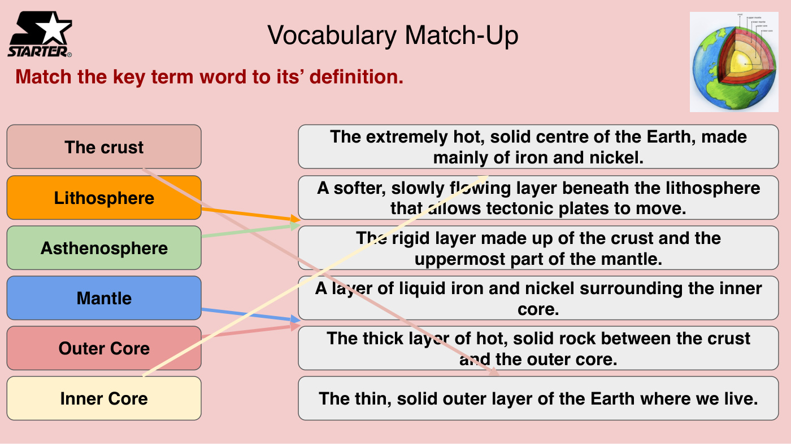
핵심 용어(key term)를 알맞은 뜻(definition)과 이어라.
[왼쪽 용어]
· 지각(the crust)
· 암석권(lithosphere)
· 연약권(asthenosphere)
· 맨틀(mantle)
· 외핵(outer core)
· 내핵(inner core)
[오른쪽 뜻]
① 아주 뜨겁고 고체(solid)인 지구의 중심이다. 주로 철(iron)과 니켈(nickel)로 이루어져 있다.
② 암석권(lithosphere) 아래에 있는 더 무르고 천천히 흐르는 층이다. 이 층 덕분에 판(tectonic plates)이 움직일 수 있다.
③ 지각(crust)과 맨틀(mantle)의 가장 윗부분으로 이루어진 단단한(rigid) 층이다.
④ 내핵(inner core)을 둘러싼 액체(liquid) 철과 니켈의 층이다.
⑤ 지각(crust)과 외핵(outer core) 사이에 있는 뜨거운 고체 암석으로 된 두꺼운 층이다.
⑥ 우리가 살고 있는 지구의 얇고 단단한 바깥층이다.
(각 용어에서 뜻 칸으로 색깔 화살표가 그어져 있고, 오른쪽 위에는 지구 속 층을 잘라 보여 주는 그림이 있다.)
정답은 지각(crust)=⑥, 암석권(lithosphere)=③, 연약권(asthenosphere)=②, 맨틀(mantle)=⑤, 외핵(outer core)=④, 내핵(inner core)=①이다. 그림 속 화살표 끝이 칸 경계에 걸쳐 헷갈리게 보일 수 있으니, 외핵만 액체(liquid)이고 내핵은 고체(solid)라는 점으로 구별하면 된다.
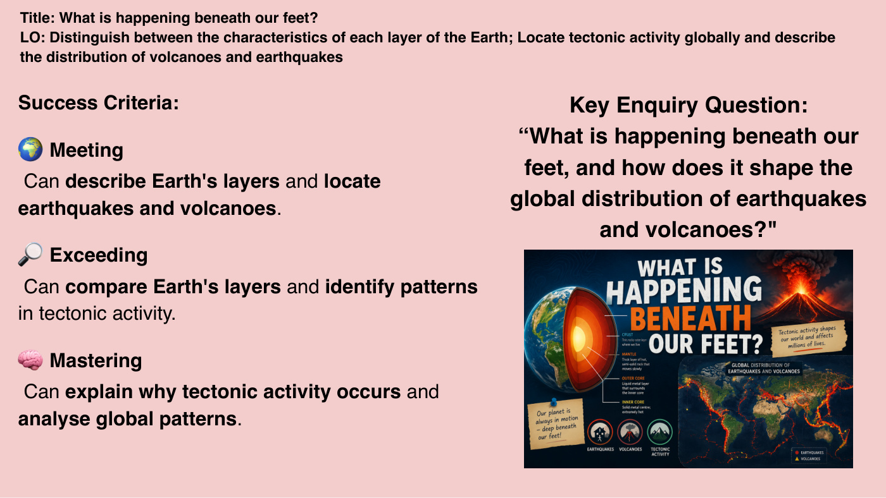
학습 목표(LO): 지구 각 층(layer)의 특징을 구별한다. 전 세계의 지각 활동(tectonic activity) 위치를 찾고, 화산(volcano)과 지진(earthquake)의 분포(distribution)를 설명한다.
성공 기준(Success Criteria):
🌍 도달(Meeting) — 지구의 층을 설명하고 지진과 화산의 위치를 찾을 수 있다.
🔎 뛰어넘음(Exceeding) — 지구의 층을 비교하고 지각 활동의 패턴(pattern)을 찾아낼 수 있다.
🧠 완전 숙달(Mastering) — 지각 활동이 왜 일어나는지 설명하고 전 세계적 패턴을 분석(analyse)할 수 있다.
핵심 탐구 질문(Key Enquiry Question):
“우리 발밑에서는 무슨 일이 일어나고 있으며, 그것이 지진과 화산의 전 세계 분포(global distribution)를 어떻게 만들어 낼까?”
[그림] 제목 ‘우리 발밑에서는 무슨 일이 일어나고 있을까?’ 포스터다.
왼쪽: 잘라 낸 지구 단면 그림
- 지각(crust): 가장 바깥의 얇은 층, 우리가 사는 곳
- 맨틀(mantle): 뜨겁고 반쯤 고체인 암석으로 된 두꺼운 층, 천천히 움직인다
- 외핵(outer core): 내핵을 둘러싼 액체 금속 층
- 내핵(inner core): 고체 금속으로 된 중심, 매우 뜨겁다
메모: “우리 행성은 늘 움직이고 있다 – 우리 발밑 깊은 곳에서!”
오른쪽 위: 분화하는 화산, 메모 “지각 활동은 우리 세상을 만들고 수백만 명의 삶에 영향을 준다.”
오른쪽 아래: 지진과 화산의 전 세계 분포 지도 — 빨간 점=지진, 노란 삼각형=화산
아래 아이콘: 지진 · 화산 · 지각 활동
지도에서 지진과 화산이 아무 데나 흩어져 있지 않고 띠 모양으로 모여 있다는 점이 이 단원의 핵심 패턴이다. 층 이름 crust·mantle·outer core·inner core는 영어로 외워 둬야 한다.
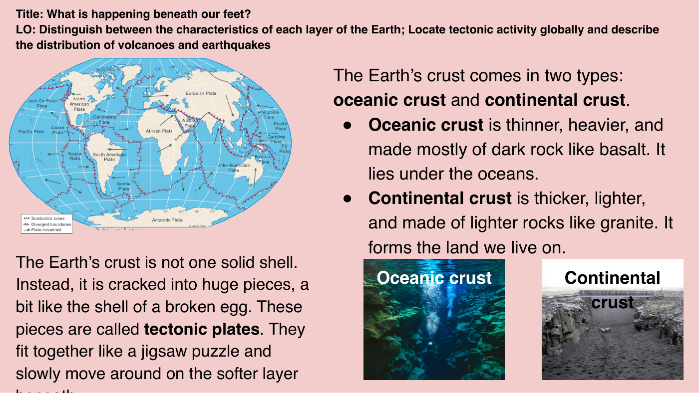
학습목표: 지구 각 층의 특징을 구별한다. 전 세계의 지각 활동(tectonic activity) 위치를 찾고, 화산(volcano)과 지진(earthquake)의 분포(distribution)를 설명한다.
[지도] 세계 판 지도 — 유라시아판(Eurasian Plate), 북아메리카판(North American Plate), 남아메리카판(South American Plate), 아프리카판(African Plate), 인도-오스트레일리아판(Indo-Australian Plate), 남극판(Antarctic Plate), 태평양판(Pacific Plate), 후안데푸카판(Juan De Fuca Plate), 코코스판(Cocos Plate), 나스카판(Nazca Plate), 카리브판(Caribbean Plate), 스코샤판(Scotia Plate), 아라비아판(Arabian Plate), 필리핀판(Philippine Plate), 캐롤라인판(Caroline Plate), 피지판(Fiji Plate), 비스마르크판(Bismarck Plate)이 그려져 있다.
범례: 톱니 선 = 섭입대(subduction zones) / 선 = 발산 경계(divergent boundaries) / 화살표 = 판의 이동(plate movement)
지구의 지각(crust)은 하나로 된 단단한 껍데기가 아니다. 깨진 달걀 껍데기처럼 거대한 조각들로 갈라져 있다. 이 조각들을 지각판(tectonic plates)이라고 한다. 판들은 직소 퍼즐처럼 서로 맞물려 있고, 그 아래의 더 무른 층 위에서 천천히 움직인다.
지구의 지각은 두 종류가 있다: 해양 지각(oceanic crust)과 대륙 지각(continental crust).
• 해양 지각(oceanic crust)은 더 얇고(thinner), 더 무거우며(heavier), 주로 현무암(basalt) 같은 어두운 암석으로 되어 있다. 바다 밑에 있다.
• 대륙 지각(continental crust)은 더 두껍고(thicker), 더 가벼우며(lighter), 화강암(granite) 같은 가벼운 암석으로 되어 있다. 우리가 사는 땅을 이룬다.
[사진] 왼쪽: 물속 바위 틈 사진 — '해양 지각' / 오른쪽: 땅이 갈라진 바위 틈 사진 — '대륙 지각'
해양 지각은 '얇고 무겁고 현무암', 대륙 지각은 '두껍고 가볍고 화강암'으로 짝지어 외우면 된다. 해양 지각이 더 무겁기 때문에 두 판이 부딪히면 해양 지각이 아래로 가라앉아 섭입대(subduction zone)가 생긴다.
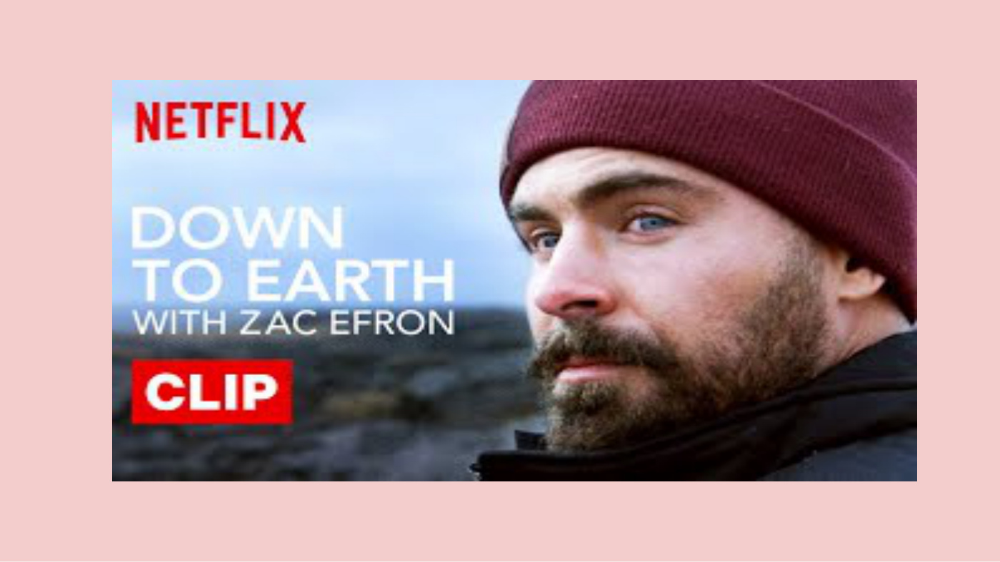
DOWN TO EARTH WITH ZAC EFRON(잭 에프론과 함께하는 다운 투 어스)
CLIP(영상 일부분)
빨간 털모자를 쓴 남자(잭 에프론)가 어두운 색의 거친 땅 위에 서 있는 영상 썸네일 그림이다.
이 장은 영상을 보는 순서다. 뒤에 보이는 검고 울퉁불퉁한 땅은 화산(volcano)에서 흘러나온 용암(lava)이 식어서 굳은 땅으로 보이니, 영상에서 땅 밑에서 무슨 일이 일어나는지 잘 들어 두자.
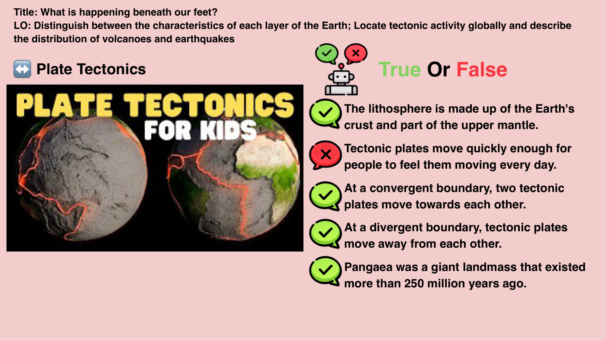
학습 목표: 지구 각 층의 특징을 구별한다. 세계의 지각 활동(tectonic activity) 위치를 찾고 화산(volcano)과 지진(earthquake)의 분포를 설명한다.
판 구조론(Plate Tectonics)
그림: 'PLATE TECTONICS FOR KIDS(어린이를 위한 판 구조론)'라는 영상 썸네일이다. 지구본 두 개에 판의 경계가 빨간 선으로 그려져 있다.
참 또는 거짓(True Or False)
✔ 참: 암석권(lithosphere)은 지구의 지각(crust)과 상부 맨틀(upper mantle)의 일부로 이루어져 있다.
✘ 거짓: 지각판(tectonic plates)은 사람들이 매일 움직임을 느낄 수 있을 만큼 빨리 움직인다.
✔ 참: 수렴 경계(convergent boundary)에서는 두 판이 서로를 향해 움직인다.
✔ 참: 발산 경계(divergent boundary)에서는 판들이 서로 멀어진다.
✔ 참: 판게아(Pangaea)는 2억 5천만 년보다 더 전에 있었던 거대한 땅덩어리(초대륙)였다.
판은 1년에 몇 cm 정도로 아주 천천히 움직여서 사람이 느낄 수 없다. 그래서 두 번째 문장만 거짓이다. convergent(모인다)와 divergent(갈라진다)는 헷갈리기 쉬우니 짝으로 외워 둔다.
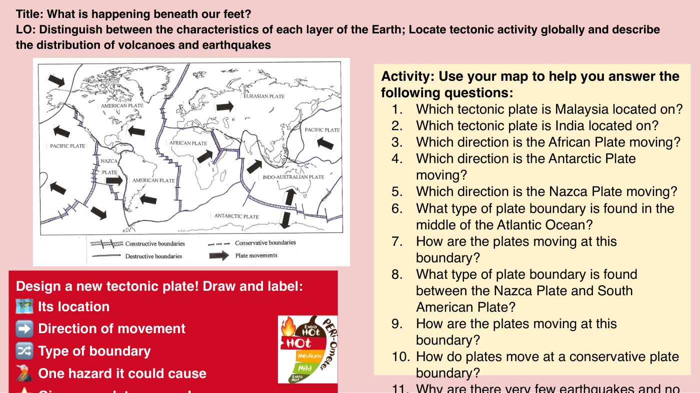
학습목표: 지구 각 층(layer)의 특징을 구별한다. 전 세계의 지각 활동(tectonic activity) 위치를 찾고 화산(volcano)과 지진(earthquake)의 분포(distribution)를 설명한다.
[지도] 세계의 판(tectonic plate)과 움직임을 나타낸 지도다.
판 이름: 아메리카판(American Plate), 태평양판(Pacific Plate), 유라시아판(Eurasian Plate), 아프리카판(African Plate), 나스카판(Nazca Plate), 인도-오스트레일리아판(Indo-Australian Plate), 남극판(Antarctic Plate)
범례: 발산 경계(constructive boundaries) — 사다리 모양 선 / 보존 경계(conservative boundaries) — 점선 / 수렴 경계(destructive boundaries) — 실선 / 판의 움직임(plate movements) — 검은 화살표
활동: 지도를 보고 다음 질문에 답하시오.
1. 말레이시아는 어느 판 위에 있는가?
2. 인도는 어느 판 위에 있는가?
3. 아프리카판은 어느 방향으로 움직이는가?
4. 남극판은 어느 방향으로 움직이는가?
5. 나스카판은 어느 방향으로 움직이는가?
6. 대서양 한가운데에는 어떤 종류의 판 경계가 있는가?
7. 이 경계에서 판은 어떻게 움직이는가?
8. 나스카판과 남아메리카판 사이에는 어떤 종류의 판 경계가 있는가?
9. 이 경계에서 판은 어떻게 움직이는가?
10. 보존 경계(conservative plate boundary)에서 판은 어떻게 움직이는가?
11. 왜 지진이 매우 적고 … (아래가 잘려 있다)
[빨간 칸] 새로운 판을 설계하라! 그리고 이름을 붙여라:
- 위치(location)
- 움직이는 방향(direction of movement)
- 경계의 종류(type of boundary)
- 그 판이 일으킬 수 있는 재해(hazard) 한 가지
- (아래가 잘려 있다)
오른쪽 고추 그림은 난이도 표시(PERI-ometer)다: 아주 매움(Extra Hot) · 매움(Hot) · 중간(Medium) · 순함(Mild) · 아주 순함(Extra Mild)
발산 경계(constructive)는 판이 서로 멀어지고, 수렴 경계(destructive)는 판이 서로 부딪쳐 한 판이 밑으로 들어가며, 보존 경계(conservative)는 판이 서로 옆으로 미끄러진다. 대서양 한가운데는 발산 경계, 나스카판과 남아메리카판 사이는 수렴 경계다.
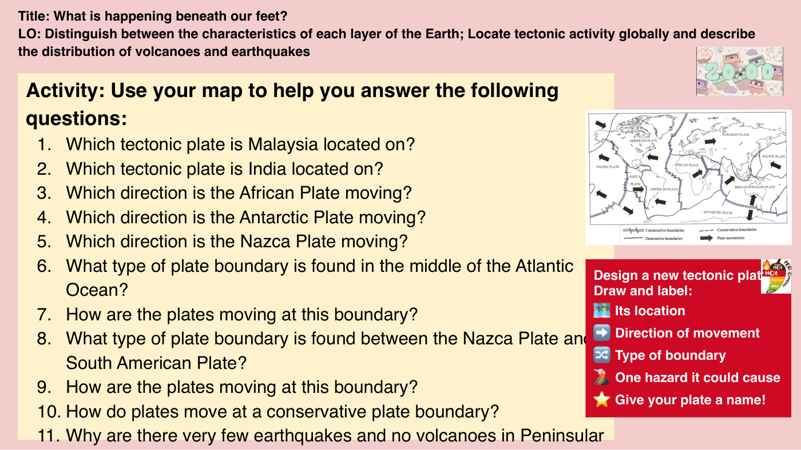
학습 목표: 지구 각 층(layer)의 특징을 구별한다. 전 세계의 지각 활동(tectonic activity) 위치를 찾고, 화산(volcano)과 지진(earthquake)의 분포(distribution)를 설명한다.
(타이머 20:00)
활동: 지도를 보고 아래 질문에 답하라.
1. 말레이시아는 어느 판(tectonic plate) 위에 있는가?
2. 인도는 어느 판 위에 있는가?
3. 아프리카판(African Plate)은 어느 방향으로 움직이는가?
4. 남극판(Antarctic Plate)은 어느 방향으로 움직이는가?
5. 나스카판(Nazca Plate)은 어느 방향으로 움직이는가?
6. 대서양 한가운데에는 어떤 종류의 판 경계(plate boundary)가 있는가?
7. 이 경계에서 판들은 어떻게 움직이는가?
8. 나스카판과 남아메리카판(South American Plate) 사이에는 어떤 종류의 판 경계가 있는가?
9. 이 경계에서 판들은 어떻게 움직이는가?
10. 보존형 판 경계(conservative plate boundary)에서 판들은 어떻게 움직이는가?
11. 말레이시아 반도(Peninsular Malaysia)에는 왜 지진이 매우 적고 화산이 없는가?
오른쪽 지도: 세계 판 지도. 아메리카판·유라시아판(Eurasian Plate)·태평양판(Pacific Plate)·아프리카판·나스카판·인도-오스트레일리아판(Indo-Australian Plate)·남극판이 표시되어 있고, 화살표가 판의 이동 방향을 나타낸다.
범례: 생성형 경계(constructive boundaries) / 보존형 경계(conservative boundaries) / 파괴형 경계(destructive boundaries) / 판의 이동(plate movements)
도전 과제(HOT): 새로운 판을 설계하라. 그림을 그리고 이름표를 붙여라:
- 판의 위치(location)
- 이동 방향(direction of movement)
- 경계의 종류(type of boundary)
- 그 판이 일으킬 수 있는 재해(hazard) 하나
- 판에 이름을 지어 주어라!
대서양 한가운데는 판이 서로 멀어지는 생성형 경계(constructive), 나스카판과 남아메리카판 사이는 판이 서로 부딪혀 나스카판이 아래로 가라앉는 파괴형 경계(destructive)다. 보존형 경계(conservative)는 판이 서로 옆으로 미끄러지며 지나간다. 말레이시아는 판 경계에서 멀리 떨어진 유라시아판 안쪽에 있어 지진이 적고 화산이 없다.
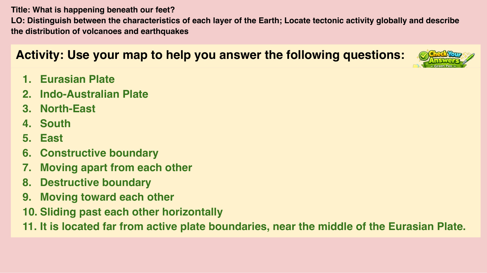
학습목표: 지구 각 층의 특징을 구별한다. 전 세계에서 판 구조 활동(tectonic activity)이 일어나는 곳을 찾고, 화산(volcanoes)과 지진(earthquakes)이 어떻게 분포하는지 설명한다.
활동: 지도를 보고 다음 질문에 답하라. (답 맞춰 보기 – 초록 펜으로 고치기)
1. 유라시아판(Eurasian Plate)
2. 인도-오스트레일리아판(Indo-Australian Plate)
3. 북동쪽(North-East)
4. 남쪽(South)
5. 동쪽(East)
6. 발산 경계(Constructive boundary)
7. 판들이 서로 멀어진다(Moving apart from each other)
8. 수렴 경계(Destructive boundary)
9. 판들이 서로 가까워진다(Moving toward each other)
10. 판들이 서로 옆으로 스쳐 지나간다(Sliding past each other horizontally)
11. 활발한 판 경계(plate boundaries)에서 멀리 떨어져 있고, 유라시아판의 가운데 가까이에 있다.
6·7번(Constructive = 멀어짐)과 8·9번(Destructive = 가까워짐)은 짝으로 외워 두면 좋다. 10번 '옆으로 스쳐 지나감'은 보존 경계(Conservative boundary)의 움직임이다.
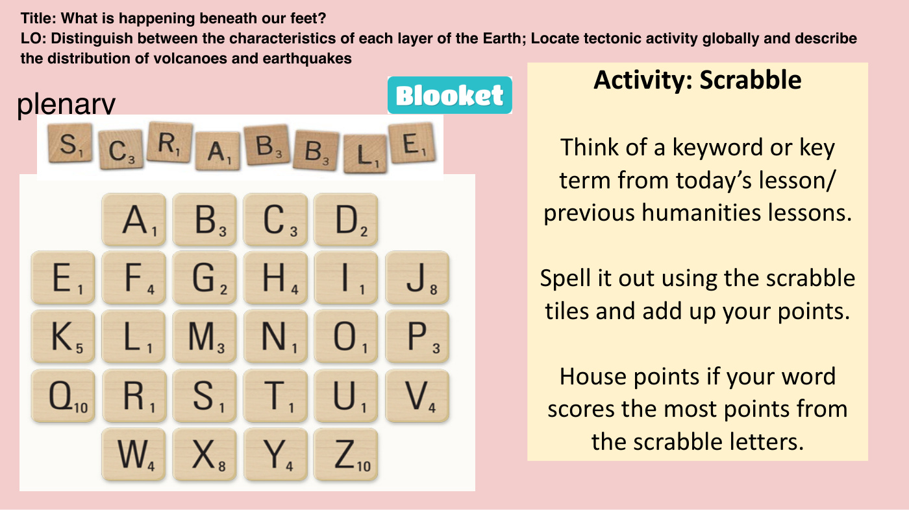
학습 목표(LO): 지구 각 층(layer of the Earth)의 특징을 구별한다. 전 세계의 지각 활동(tectonic activity) 위치를 찾고, 화산(volcanoes)과 지진(earthquakes)의 분포(distribution)를 설명한다.
마무리 활동(plenary) · Blooket
그림: SCRABBLE이라고 적힌 나무 글자 타일과, A부터 Z까지 글자마다 점수가 적힌 타일 표가 있다.
글자 점수: A1 B3 C3 D2 / E1 F4 G2 H4 I1 J8 / K5 L1 M3 N1 O1 P3 / Q10 R1 S1 T1 U1 V4 / W4 X8 Y4 Z10
활동: 스크래블(Scrabble)
오늘 수업이나 지난 인문학(humanities) 수업에서 배운 핵심어(keyword, key term)를 하나 떠올린다.
스크래블 타일로 그 낱말의 철자를 쓰고 점수를 더한다.
스크래블 글자 점수가 가장 높은 낱말을 만들면 하우스 점수(house points)를 받는다.
점수가 높은 글자(Q·Z 10점, J·X 8점, K 5점)가 들어간 긴 용어를 고르면 유리하다. 예를 들어 earthquake(지진)는 E1+A1+R1+T1+H4+Q10+U1+A1+K5+E1 = 26점이다.
시험 시간은 40분이고 전부 글로 쓰는 필기 평가(written assessment)다. 문제는 세 종류가 섞여 나온다. 짧은 답 문제(short-answer), 지도를 보고 푸는 문제(map-based), 그리고 길게 써야 하는 서술형(extended written response)이다.
✍️ 꼭 알아야 하는 것
- 자기 반의 시험 날짜를 확인해 둘 것 — 9B·9D는 9월 21일(월), 9C·9E는 9월 22일(화), 9A는 9월 23일(수)이다.
- PEEL 구조(Point 주장 - Evidence 근거 - Explain 설명 - Link 연결)로 서술형 답을 쓰는 연습이 복습 방법으로 제시되어 있다.
📚 이 자료의 핵심 단어
화산은 상태에 따라 이름이 나뉜다. 활화산(active volcano)은 최근에 분화(erupt)한 적이 있고 앞으로도 다시 터질 가능성이 큰 화산이며, 전 세계에 700개 이상이 있다. 휴화산(dormant volcano)은 지금은 쉬고 있는 화산을 가리키는 말로 함께 나온다.
✍️ 꼭 알아야 하는 것
- 활화산(active)의 정의 — 최근에 분화했고 다시 터질 가능성이 큰 화산, 세계에 700개 이상이라는 숫자까지 같이 외운다.
- 이 수업의 목표는 화산 재해들을 '비교해서 어느 것이 가장 위험한지 판단(analyse/assess)'하는 것이므로, 단순 암기가 아니라 이유를 들어 순위를 매기는 연습이 필요하다.
📚 이 자료의 핵심 단어
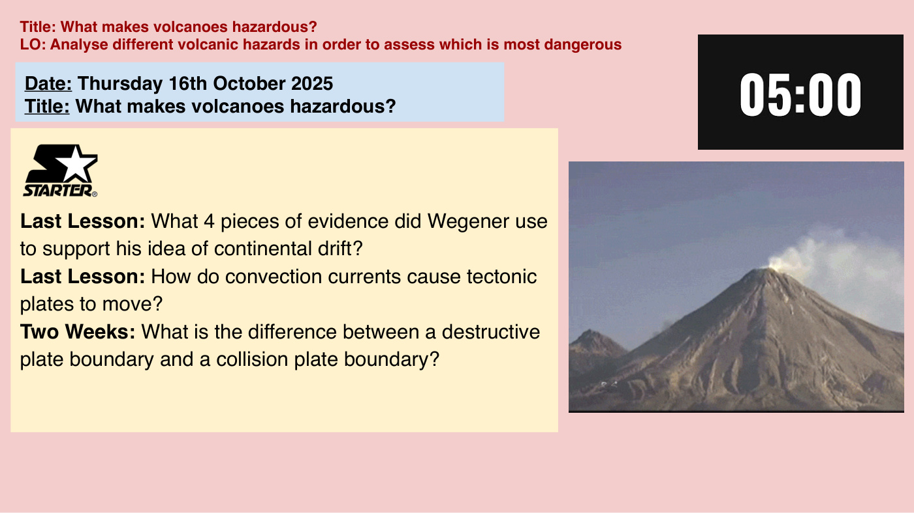
학습목표(LO): 여러 가지 화산 재해(volcanic hazards)를 분석해서 어느 것이 가장 위험한지 평가한다
날짜: 2025년 10월 16일 목요일
제목: 무엇이 화산을 위험하게 만드는가?
시작 활동(Starter) · 타이머 05:00(5분)
지난 수업: 베게너(Wegener)는 대륙 이동설(continental drift)을 뒷받침하려고 어떤 증거 4가지를 썼는가?
지난 수업: 대류(convection currents)는 어떻게 판(tectonic plates)을 움직이게 하는가?
2주 전: 파괴 경계(destructive plate boundary)와 충돌 경계(collision plate boundary)는 무엇이 다른가?
(오른쪽 사진: 꼭대기에서 흰 연기가 피어오르는 원뿔 모양 화산)
파괴 경계는 무거운 해양판이 대륙판 아래로 가라앉아(섭입, subduction) 화산이 생기고, 충돌 경계는 대륙판끼리 부딪혀 산맥이 솟지만 화산은 거의 생기지 않는다는 점이 차이다. 베게너의 증거 4가지는 대륙 해안선 모양, 화석, 암석, 옛 기후 흔적이다.
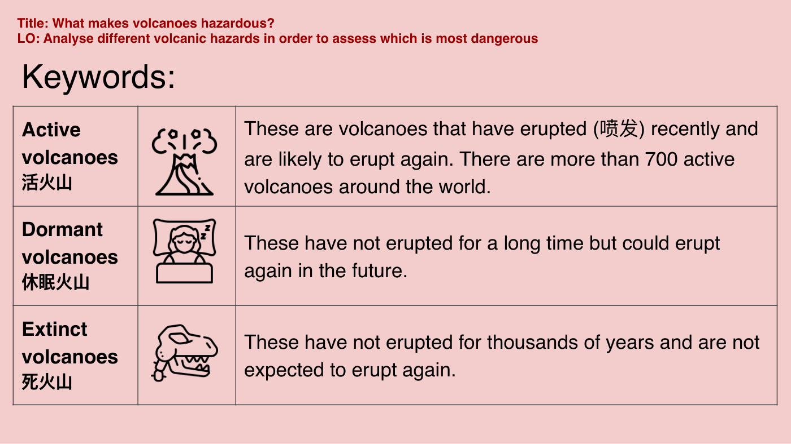
학습 목표: 여러 가지 화산 재해(volcanic hazards)를 분석해 어느 것이 가장 위험한지 판단한다.
핵심 낱말(Keywords):
1. 활화산(Active volcanoes) — [그림: 연기를 뿜으며 용암이 흘러내리는 화산]
최근에 분화한(erupted) 적이 있고 다시 분화할 가능성이 높은 화산이다. 전 세계에 700개가 넘는 활화산이 있다.
2. 휴화산(Dormant volcanoes) — [그림: 베개를 베고 잠든 사람]
오랫동안 분화하지 않았지만 앞으로 다시 분화할 수 있는 화산이다.
3. 사화산(Extinct volcanoes) — [그림: 공룡 뼈 화석]
수천 년 동안 분화하지 않았고 다시 분화할 것으로 예상되지 않는 화산이다.
그림이 뜻을 알려 준다. 잠든 사람은 '잠자는' 휴화산(dormant), 공룡 화석은 '죽어서 사라진' 사화산(extinct)이다. 세 가지를 나누는 기준은 '최근에 분화했나'와 '앞으로 분화할 수 있나'이다.
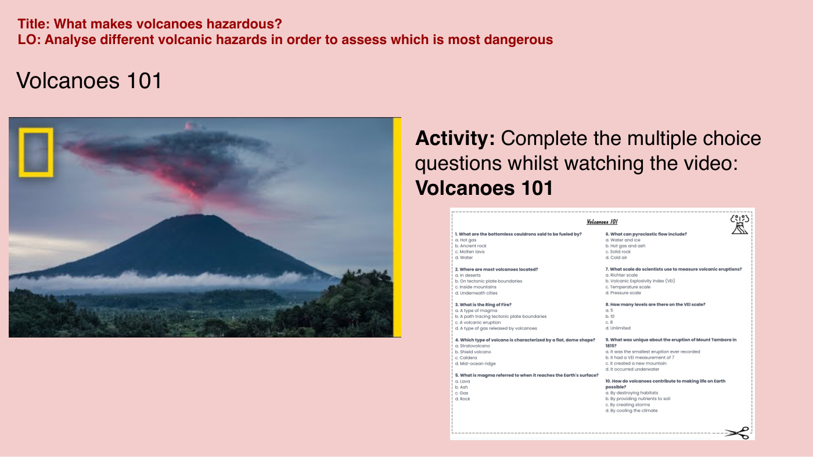
학습 목표: 여러 가지 화산 재해(volcanic hazards)를 분석해 어느 것이 가장 위험한지 판단한다.
Volcanoes 101 (화산 기초)
(왼쪽 그림: 내셔널지오그래픽 영상 화면. 원뿔 모양 화산 꼭대기에서 짙은 화산재 구름이 붉게 빛나며 솟아오른다.)
활동: 영상 Volcanoes 101을 보면서 객관식 문제를 푼다.
[문제지: Volcanoes 101]
1. 바닥 없는 가마솥은 무엇으로 불이 붙는다고 하는가?
a. 뜨거운 기체 b. 오래된 암석 c. 녹은 용암 d. 물
2. 화산은 대부분 어디에 있는가?
a. 사막 b. 판 경계(tectonic plate boundaries) 위 c. 산 속 d. 도시 아래
3. 불의 고리(Ring of Fire)란 무엇인가?
a. 마그마의 한 종류 b. 판 경계를 따라가는 길 c. 화산 분화 d. 화산이 내뿜는 기체의 한 종류
4. 평평한 돔 모양이 특징인 화산은?
a. 성층화산(stratovolcano) b. 순상화산(shield volcano) c. 칼데라(caldera) d. 해령(mid-ocean ridge)
5. 마그마(magma)가 땅 위로 나오면 무엇이라 부르는가?
a. 용암(lava) b. 화산재(ash) c. 기체 d. 암석
6. 화쇄류(pyroclastic flow)에는 무엇이 들어 있는가?
a. 물과 얼음 b. 뜨거운 기체와 화산재 c. 단단한 암석 d. 차가운 공기
7. 과학자들이 화산 분화 크기를 재는 척도는?
a. 리히터 규모 b. 화산폭발지수(Volcanic Explosivity Index, VEI) c. 온도 척도 d. 압력 척도
8. VEI 척도는 몇 단계인가?
a. 5 b. 10 c. 8 d. 끝이 없다
9. 1815년 탐보라산(Mount Tambora) 분화의 특별한 점은?
a. 기록상 가장 작은 분화였다 b. VEI 7이었다 c. 새 산을 만들었다 d. 물속에서 일어났다
10. 화산은 어떻게 지구의 생명을 돕는가?
a. 서식지를 파괴해서 b. 흙에 영양분(nutrients)을 주어서 c. 폭풍을 만들어서 d. 기후를 식혀서
4번은 헷갈리기 쉽다. 넓고 완만한 돔 모양은 순상화산(shield volcano)이고, 가파른 원뿔 모양은 성층화산(stratovolcano)이다. 마그마는 땅속에 있을 때, 용암(lava)은 땅 위로 나왔을 때 부르는 이름이다.
학습 목표(LO): 여러 가지 화산 재해(volcanic hazards)를 분석해서 어느 것이 가장 위험한지 판단한다.
화산 기초 퀴즈(Volcanoes 101) 정답
1. b. 오래된 암석(Ancient rock)
2. c. 판의 경계(tectonic plate boundaries) 위에 있다
3. d. 판의 경계를 따라 이어지는 띠
4. b. 순상 화산(Shield volcano)
5. a. 용암(Lava)
6. c. 뜨거운 가스와 화산재(Hot gas and ash)
7. d. 화산 폭발 지수(Volcanic Explosivity Index, VEI)
8. d. 제한 없음(Unlimited)
9. b. VEI 7로 측정되었다
10. a. 흙에 영양분(nutrients)을 공급해서
초록 펜으로 답을 채점하라(GREEN PEN YOUR ANSWERS)
오른쪽 그림은 퀴즈 문제지(Volcanoes 101)다.
1. '바닥 없는 가마솥'은 무엇을 연료로 한다고 하는가? (a. 뜨거운 가스 b. 오래된 암석 c. 녹은 용암 d. 물)
2. 화산은 대부분 어디에 있는가? (a. 사막 b. 판의 경계 c. 산 속 d. 도시 밑)
3. 불의 고리(Ring of Fire)란 무엇인가? (a. 마그마의 한 종류 b. 판의 경계를 따라 이어지는 띠 c. 화산 폭발 d. 화산에서 나오는 가스의 한 종류)
4. 평평한 돔 모양이 특징인 화산은? (a. 성층 화산(Stratovolcano) b. 순상 화산(Shield volcano) c. 칼데라(Caldera) d. 해령(Mid-ocean ridge))
5. 마그마(magma)가 땅 위로 나오면 무엇이라 부르는가? (a. 용암 b. 화산재 c. 가스 d. 암석)
6. 화쇄류(pyroclastic flow)에는 무엇이 들어 있는가? (a. 물과 얼음 b. 뜨거운 가스와 화산재 c. 단단한 암석 d. 차가운 공기)
7. 과학자들이 화산 폭발의 크기를 재는 척도는? (a. 리히터 규모 b. 화산 폭발 지수(VEI) c. 온도 척도 d. 압력 척도)
8. VEI는 몇 단계인가? (a. 5 b. 10 c. 8 d. 제한 없음)
9. 1815년 탐보라 산(Mount Tambora) 폭발의 특별한 점은? (a. 기록상 가장 작은 폭발이었다 b. VEI 7이었다 c. 새 산을 만들었다 d. 바닷속에서 일어났다)
10. 화산은 지구에 생명이 살 수 있도록 어떻게 돕는가? (a. 서식지를 파괴해서 b. 흙에 영양분을 공급해서 c. 폭풍을 만들어서 d. 기후를 식혀서)
슬라이드 속 문제지 그림에서는 6번 정답 '뜨거운 가스와 화산재'가 b인데, 왼쪽 정답표에는 c로 적혀 있다. 또 8번 정답이 '제한 없음'으로 되어 있지만, VEI는 보통 0부터 8까지 단계로 나눈다.
학습목표(LO): 여러 가지 화산 재해(volcanic hazards)를 분석해 어느 것이 가장 위험한지 평가한다
화산의 종류(Types of Volcanoes)
[영상 그림: 'HOW VOLCANOES ARE FORMED(화산은 어떻게 만들어지나)' — 지구 단면에 상부 맨틀(upper mantle), 하부 맨틀(lower mantle), 외핵(outer core), 내핵(inner core)이 그려져 있다]
질문
1. 화산의 두 가지 주요 종류는 무엇이고, 보통 어디에서 볼 수 있는가?
2. 복합 화산(composite volcano)은 왜 화산재와 용암이 층층이 쌓여 있으며, 다른 이름은 무엇인가?
3. 순상 화산(shield volcano)은 모양과 분화 방식에서 복합 화산과 어떻게 다른가?
답
1. 화산의 두 가지 주요 종류는 복합 화산(composite volcanoes)과 순상 화산(shield volcanoes)이다. 복합 화산은 파괴적 판 경계(destructive plate margins)에서, 순상 화산은 생성적 판 경계(constructive plate margins)나 열점(hot spots)에서 볼 수 있다.
2. 복합 화산은 분화할 때마다 용암과 화산재가 쌓이기 때문에 화산재(ash)와 용암(lava)의 층이 생기며, 성층 화산(stratovolcanoes)이라고도 부른다.
3. 순상 화산은 경사가 완만하고(gentle slopes) 묽은 용암(runny lava)으로 덜 격렬하게 분화한다. 반면 복합 화산은 경사가 가파르고(steep slopes) 더 격렬하게(violently) 분화한다.
복합 화산(composite) = 파괴적 경계·가파름·격렬한 분화, 순상 화산(shield) = 생성적 경계나 열점·완만함·묽은 용암으로 짝지어 외우면 된다. 성층 화산(stratovolcano)은 복합 화산의 다른 이름이다.
학습목표: 여러 화산 재해(volcanic hazards)를 분석해 어느 것이 가장 위험한지 판단한다.
화산 기초(Volcanoes 101) · 제한시간 15:00
활동지에 활동이 있다(Activities on sheet).
활동 1 - 어떤 화산 분출이 다른 분출보다 더 위험한 이유를 PEEL 형식으로 완성한다.
활동 2 - 번호를 그림의 알맞은 자리에 적는다.
활동 3 - 화산 과정의 각 단계(판 경계(plate boundaries), 마그마 종류(magma type), 가스와 압력(gas and pressure), 분출 유형(eruption type), 분출물(eruption materials), 화쇄류(pyroclastic flow))가 분출을 어떻게 더 위험하게 또는 덜 위험하게 만드는지 설명한다.
판 경계(Plate Boundaries) 그림
- 발산형 경계(Constructive): 두 판이 양쪽으로 벌어지고(화살표 ←→) 그 틈으로 마그마가 올라온다.
- 수렴형 경계(Destructive): 두 판이 서로 밀려오고(화살표 →←) 한 판이 다른 판 아래로 섭입(subduction)하며, 녹은 마그마가 올라와 화산이 분출한다.
심화 활동(Extension Activity): 묽은 마그마(runny magma)에 가스가 적은 화산과 끈적한 마그마(thick magma)에 가스가 갇힌(trapped gas) 화산을 비교한다. 두 분출이 세기, 위험도, 주변 사람이 겪을 재해에서 어떻게 다를지 예측한다.
PEEL은 요점(Point)–근거(Evidence)–설명(Explain)–연결(Link) 순서로 쓰는 문단 형식이다. 수렴형 경계의 끈적한 마그마는 가스를 가둬 폭발적으로 분출하므로, 가스가 쉽게 빠지는 발산형 경계의 묽은 마그마보다 더 위험하다.
학습목표(LO): 여러 화산 재해(volcanic hazards)를 분석해 어느 것이 가장 위험한지 평가한다
화산의 종류(Types of Volcanoes)
활동 4 – 안내문을 읽고 그림에 설명을 달아(annotate) 성층화산(composite volcano)과 순상화산(shield volcano)의 주요 특징을 나타낸다.
주요 특징 설명 목록(Key Feature Annotations):
경사(Slopes) – 완만하다(Gentle) / 가파르다(Steep)
밑면 너비(Base width) – 넓다(Wide) / 좁다(Narrow)
용암 종류(Lava type) – 묽고 잘 흐른다(Thin/runny) / 걸쭉하고 끈적하다(Thick/sticky)
용암 흐름 속도(Lava flow speed) – 빠르다(Fast) / 느리다(Slow)
분화 방식(Eruption style) – 조용하다(Gentle) / 격렬하다(Violent)
화구(Crater) – 크다(Large) / 작다(Small)
화산탄(Volcanic bombs) – 없다(None) / 자주 나온다(Often)
분출구 수(Number of vents) – 하나(One) / 여러 개(Several)
그림 1 – 순상화산(Shield): 낮고 넓게 퍼진 화산으로, 가운데 관 하나로 올라온 용암이 넓은 화구에서 나와 완만한 비탈을 따라 양쪽으로 흘러내린다.
그림 2 – 성층화산(Composite): 높고 뾰족한 화산으로, 꼭대기 위에 화산재 구름이 떠 있다. 땅속 마그마굄(magma chamber)에서 올라온 마그마가 꼭대기 작은 화구와 옆구리의 여러 갈래 분출구에서 나와 가파른 비탈을 흘러내린다.
목록의 각 줄에서 앞의 말(Gentle, Wide, Thin/runny, Fast, Gentle, Large, None, One)은 대체로 순상화산(shield), 뒤의 말(Steep, Narrow, Thick/sticky, Slow, Violent, Small, Often, Several)은 성층화산(composite)의 특징이다. 단 화구(Crater)는 그림을 보고 판단한다.
학습목표: 여러 화산 재해(volcanic hazards)를 분석해 어느 것이 가장 위험한지 평가한다
주요 특징 설명 붙이기(Key Feature Annotations):
경사(Slopes) – 완만하다(Gentle) / 가파르다(Steep)
밑면 너비(Base width) – 넓다(Wide) / 좁다(Narrow)
용암 종류(Lava type) – 묽고 잘 흐른다(Thin/runny) / 걸쭉하고 끈적하다(Thick/sticky)
용암 흐르는 속도(Lava flow speed) – 빠르다(Fast) / 느리다(Slow)
분화 방식(Eruption style) – 조용하다(Gentle) / 격렬하다(Violent)
분화구(Crater) – 크다(Large) / 작다(Small)
화산탄(Volcanic bombs) – 없다(None) / 자주 나온다(Often)
분출구 개수(Number of vents) – 하나(One) / 여러 개(Several)
복합 화산(Composite) – 일본 후지산(Mt Fuji, Japan)
(사진: 눈 덮인 봉우리의 후지산이 호수 너머로 보인다. 오른쪽 위에는 화산 단면 그림이 있다)
활동 5(Activity 5): 후지산의 주요 특징을 설명하고, 왜 근처에 사는 사람들에게 위험할 수 있는지(potentially dangerous) 설명하라.
답은 PEEL 문단 2개로 쓰고, 각 문단은 후지산이 분화하면 생길 수 있는 재해 한 가지씩에 집중한다.
재해(Hazards): 용암 종류(lava type), 용암 흐르는 속도(lava flow speed), 분화 방식(eruption style), 분화구(crater), 화산탄(volcanic bombs)과 분출구(vents)
복합 화산(composite volcano)은 경사가 가파르고(steep) 밑면이 좁으며, 걸쭉하고 끈적한(thick/sticky) 용암이 느리게 흐르고 격렬하게(violent) 분화해 화산탄(volcanic bombs)이 자주 나온다. 표의 각 줄에서 오른쪽 답을 고르면 후지산의 특징이 된다. PEEL은 Point(주장)–Evidence(근거)–Explain(설명)–Link(질문과 연결) 순서로 쓰는 문단이다.
주장(Point)
• 후지산은 …때문에 위험하다.
• 후지산 근처에 사는 사람들은 …때문에 위험에 놓여 있다(at risk).
근거(Evidence)
• 예를 들어, 후지산이 분화하면(erupts) 생길 수 있는 잠재적 위험(potential hazard)은 …이다. (목록에서 고른다)
• 또 다른 잠재적 위험은 …이다. (목록에서 고른다)
설명(Explain)
• 이것은 …때문에 위험하다.
• 그 결과(As a result), 사람들/건물들은 …
연결(Link)
• 따라서(Therefore), 후지산은 …에게 심각한 위험이다.
• 이것은 후지산이 …때문에 사람과 건물에 해로울 수 있다(potentially harmful)는 것을 보여 준다.
P 주장(Point): 후지산이 왜 위험한지 분명하게 말한다.
E 근거(Evidence): 목록에 있는 핵심 특징(key features) 두 가지를 써서 후지산을 설명한다.
E 설명(Explain): 그 특징들이 왜 사람이나 건물에 위험한지 설명한다.
L 연결(Link): 후지산의 위험에 대한 전체 질문으로 다시 연결한다.
(고추 모양 PERI-Ometer 그림: 아래부터 아주 순함(Extra Mild) → 순함(Mild) → 중간(Medium) → 매움(Hot) → 아주 매움(Extra Hot))
후지산 근처에 사는 사람들이 보여야 할 수도 있는 가치(values)를 넣어서 문단을 아주 매움(Extra Hot) 단계로 만든다.
(예: 회복력(Resilience), 대비(preparedness), 책임감(responsibility))
근거(Evidence)에는 화산쇄설류(pyroclastic flow)·화산재(ash fall)·용암류(lava flow)처럼 목록의 위험 이름을 영어 그대로 두 개 넣어야 한다. 마지막에 회복력(resilience)이나 대비(preparedness) 같은 가치까지 적으면 가장 높은 단계(Extra Hot)의 문단이 된다.
요점(Point)
후지산이 위험한 이유는……
후지산 근처에 사는 사람들이 위험에 처해 있는 이유는……
근거(Evidence)
예를 들어, 후지산이 분화하면 생길 수 있는 위험은……(목록에서 고르기)
또 다른 잠재적 위험은……(목록에서 고르기)
설명(Explain)
이것이 위험한 이유는……
그래서 사람들과 건물은……
연결(Link)
따라서 후지산은 ……에 대해
이것은 후지산이 사람과 건물 모두에게 잠재적 피해를 준다는 것을 보여준다. 왜냐하면……
P – 요점(Point): 후지산(Mount Fuji)이 왜 위험한지 분명하게 말한다.
E – 근거(Evidence): 목록에 있는 핵심 특징(key features) 두 가지를 골라 후지산을 설명한다.
E – 설명(Explain): 그 특징들이 왜 사람이나 건물에 위험한지 설명한다.
L – 연결(Link): 후지산의 위험에 관한 전체 질문으로 다시 연결한다.
(고추 모양 매운맛 측정기 그림: Extra Mild → Mild → Medium → Hot → Extra Hot)
후지산 근처에 사는 사람들이 보여야 할 가치(values)를 넣으면 문단이 Extra Hot(최고 수준)이 된다.
(예: 회복력(resilience), 대비(preparedness), 책임감(responsibility))
왼쪽은 중국어로 된 문장 틀이지만 답은 오른쪽 영어 PEEL 순서대로 영어로 써야 한다. 근거에는 목록의 핵심 특징을 꼭 두 개 넣고, resilience·preparedness 같은 가치 낱말을 더하면 높은 점수를 받는다.
학습목표(LO): 여러 화산 위험 요소(volcanic hazards)를 분석해 어느 것이 가장 위험한지 평가한다
마무리 활동(Plenary) — 다른 하나 찾기(Odd One Out)
1. 순상 화산(shield volcano)이 보통 성층 화산(composite volcano)보다 덜 위험한 주된 까닭 하나는 무엇인가?
A) 용암이 묽어서(runny) 천천히 흘러 나간다 ← 빨간 네모로 표시된 정답
B) 가스가 많아 격렬하게 폭발한다
C) 끈적한 용암(sticky lava)과 화산재(ash)를 안에 가둔다
D) 늘 아주 높은 원뿔 모양을 이룬다
생각해 볼 질문: 화산이 보통 순하게 분화하더라도 사람들이 분화(eruption)에 대비한다면, 그들은 어떤 가치를 보여 주는 것인가?
정답은 A다. 순상 화산은 묽은 용암이 넓게 흘러 폭발이 약하지만, B·C·D는 성층 화산의 특징이다. 마지막 질문에는 신중함·책임감(responsibility)·미리 대비하는 자세(preparedness) 같은 말로 답할 수 있다.
학습 목표(LO): 여러 가지 화산 재해(volcanic hazards)를 분석해서 어느 것이 가장 위험한지 평가한다
마무리 활동(Plenary) — 다른 하나 찾기(Odd One Out)
2. 복합 화산(composite volcano)이 더 큰 피해(destruction)를 일으킬 수 있는 주된 이유 하나는 무엇일까?
A) 경사가 완만하고(gentle slopes) 용암이 묽다(thin lava)
B) 끈적한 용암(sticky lava)이 가스(gas)를 가둬서 격렬한 분화(violent eruptions)를 일으킨다 ← 빨간 네모로 표시된 정답
C) 해롭지 않은 수증기(steam)와 연기(smoke)만 내뿜는다
D) 화산재(ash)나 화산탄(volcanic bombs)을 절대 내뿜지 않는다
위험한 화산을 연구하는 과학자가 다른 사람을 지키려면 어떤 가치(value)가 중요할까?
정답은 B다. 복합 화산의 용암은 끈적해서(viscous) 가스가 빠져나가지 못하고 쌓였다가 한꺼번에 폭발한다. A처럼 완만한 경사와 묽은 용암은 순상 화산(shield volcano)의 특징이다. 마지막 질문은 정답이 하나로 정해지지 않았고, 용기(courage)나 책임감(responsibility) 같은 가치를 영어로 적으면 된다.
학습목표(LO): 여러 가지 화산 재해(volcanic hazards)를 분석해 어느 것이 가장 위험한지 평가한다
마무리 활동(Plenary) — 다른 하나 찾기(Odd One Out)
3. 화산 안에 가스(gas)와 압력(pressure)이 많이 쌓이면 어떻게 되는가?
A) 느리고 잔잔한 용암 흐름(lava flow)이 안전하게 흘러간다
B) 화산이 조용하고 활동하지 않는(inactive) 상태로 있다
C) 폭발적인 분화(explosive eruption)가 일어나 화산재(ash)와 암석을 뿜어낸다
D) 마그마(magma)가 지표면에 닿기 전에 식는다 (빨간 네모로 표시됨)
빠르게 대피(evacuate)하고 안전 규칙(safety rules)을 따라야 할 때 지역사회(communities)에는 어떤 가치(value)가 필요한가?
화산 안에 가스와 압력이 쌓이면 결국 폭발적인 분화(explosive eruption)가 일어나므로, 이 질문에 과학적으로 맞는 설명은 C다. 마지막 질문은 가치를 묻는 것이라 협력(cooperation)·책임감(responsibility)·존중(respect) 같은 낱말로 답할 수 있다.
학습목표: 여러 화산 위험 요소(volcanic hazards)를 분석해 어느 것이 가장 위험한지 판단한다
정리 활동(Plenary) — 다른 하나 찾기(Odd One Out) · 블루킷(Blooket) 퀴즈
4. 화산쇄설류(pyroclastic flow)가 그렇게 치명적인 주된 이유 하나는 무엇인가?
A) 느리게 움직여서 사람들이 피할 수 있다
B) 해롭지 않은 수증기로 이루어져 있다
C) 빠르고 뜨거운 가스와 화산재 구름(fast, hot clouds of gas and ash)이라서 지나가는 길의 모든 것을 태운다
D) 마을과 도시에서 멀리 떨어진 곳에서만 일어난다
(C와 D에 빨간 네모 표시가 되어 있다)
분화 뒤 구조대원들이 목숨을 걸고 사람들을 도울 때, 그들은 어떤 가치(value)를 보여 주는가?
정답은 C다. 화산쇄설류는 매우 빠르고 뜨거워서 도망칠 수 없기 때문에 치명적이다. 마지막 질문에는 용기(courage)·이타심(selflessness)·연민(compassion) 같은 가치로 답할 수 있다.
화산의 종류와 위험을 재는 방법도 나온다. 넓고 납작한 돔 모양은 순상화산(shield volcano)이고, 화쇄류(pyroclastic flow)는 뜨거운 가스와 화산재가 섞여 흐르는 것이다. 폭발의 크기는 지진에 쓰는 리히터 척도가 아니라 화산폭발지수(VEI, Volcanic Explosivity Index)로 재고, 1815년 탐보라 화산(Mount Tambora) 분화는 VEI 7이었다. 화산은 위험하기만 한 것이 아니라 흙에 영양분을 공급해 지구에 생명이 살 수 있게 돕기도 한다.
✍️ 꼭 알아야 하는 것
- 마그마=지하, 용암(lava)=지표면으로 나온 것 / 화쇄류=뜨거운 가스+화산재 / VEI=화산 폭발 크기 척도 / 탐보라 1815=VEI 7 — 이 낱말들이 이 자료 전체의 뼈대다.
- PEEL 네 글자의 순서와 역할(Point 주장 → Evidence 예시 → Explain 이유 → Link 중요한 까닭)을 외워 두면 활동을 영어로 채울 때 문장 틀이 잡힌다.
- 끈적한 마그마일수록 가스가 못 빠져나가 압력이 쌓이고 더 격렬하게 터진다는 흐름이, Activity 2·3에서 요구하는 '왜 더 위험한가'의 답 줄기다.
📚 이 자료의 핵심 단어
1. '밑바닥 없는 가마솥'은 무엇을 연료로 삼는다고 하는가?
a. 뜨거운 기체(hot gas)
b. 오래된 암석(ancient rock)
c. 녹은 용암(molten lava)
d. 물(water)
2. 화산은 대부분 어디에 있는가?
a. 사막에
b. 산 속에
c. 판 경계(tectonic plate boundaries) 위에
d. 도시 밑에
3. 불의 고리(Ring of Fire)란 무엇인가?
a. 마그마의 한 종류
b. 화산이 내뿜는 기체의 한 종류
c. 화산 분화 한 번(volcanic eruption)
d. 판 경계를 따라 이어진 길
4. 납작한 돔 모양이 특징인 화산은 무엇인가?
a. 성층화산(stratovolcano)
b. 순상화산(shield volcano)
c. 칼데라(caldera)
d. 중앙 해령(mid-ocean ridge)
5. 마그마(magma)가 지표면에 나오면 무엇이라 부르는가?
a. 용암(lava)
b. 화산재(ash)
c. 기체(gas)
d. 암석(rock)
6. 화쇄류(pyroclastic flow)에는 무엇이 들어 있을 수 있는가?
a. 물과 얼음
b. 단단한 암석
c. 뜨거운 기체와 화산재(hot gas and ash)
d. 차가운 공기
7. 과학자들은 화산 분화를 재는 데 어떤 척도를 쓰는가?
a. 리히터 규모(Richter scale)
b. 압력 척도
c. 온도 척도
d. 화산폭발지수(Volcanic Explosivity Index, VEI)
8. VEI 척도에는 단계가 몇 개 있는가?
a. 5
b. 10
c. 8
d. 끝없음
9. 1815년 탐보라 화산(Mount Tambora) 분화는 무엇이 특별했는가?
a. 기록상 가장 작은 분화였다
b. VEI 값이 7이었다
c. 새 산을 만들었다
d. 물속에서 일어났다
10. 화산은 지구에서 생명이 살 수 있게 하는 데 어떻게 기여하는가?
a. 흙에 영양분(nutrients)을 공급해서
b. 서식지를 파괴해서
c. 폭풍을 만들어서
d. 기후를 식혀서
(오른쪽 위에 연기를 뿜는 화산 그림, 오른쪽 아래에 가위 그림이 있다.)
정답 참고: 1-c, 2-c, 3-d, 4-b(순상화산), 5-a, 6-c, 7-d, 8-c(0~8, 실제로는 9단계), 9-b, 10-a이다. 4번은 보기가 모두 화산 지형 용어라 뜻을 구분해 외워 두면 좋다.
활동 1 - PEEL 문단을 완성하라.
주장(Point): 어떤 화산 분출(volcanic eruption)이 더 위험한 한 가지 이유는 ______이다.
근거(Evidence): 예를 들어, ______.
설명(Explain): 이것은 분출이 더 격렬(violent)할 수 있음을 보여 준다. 왜냐하면 ______.
연결(Link): 이것은 ______을 이해하는 데 도움이 되기 때문에 중요하다.
활동 2 - 그림의 알맞은 자리에 번호를 적어 넣어라.
(그림: 화산 꼭대기에서 화산재 구름이 위로 솟고, 양쪽 비탈을 따라 화살표 방향으로 뜨거운 흐름이 내려오는 화산 단면)
이름표:
1. 파괴형 경계(Destructive boundary) 또는 생성형 경계(Constructive boundary)
2. 묽은 마그마(Runny magma) 또는 끈적한 마그마(Sticky magma)
3. 가스와 압력 축적(Gas and Pressure build-up)
4. 격렬한 분출(Violent eruption)
5. 화산재·먼지·암석(Ash, Dust & Rock)
6. 화쇄류(Pyroclastic flow)
활동 3: 화산 과정의 각 단계가 분출을 어떻게 더 위험하게 또는 덜 위험하게 만드는지 설명하라.
(답을 쓰는 빈 줄 칸)
번호 1→6은 원인에서 결과로 이어지는 순서다. 파괴형 경계(destructive boundary)에서는 끈적한 마그마(sticky magma)가 생겨 가스가 빠져나가지 못하고 압력이 쌓여 격렬한 분출과 화쇄류로 이어지고, 생성형 경계(constructive boundary)의 묽은 마그마(runny magma)는 가스가 잘 빠져 비교적 덜 위험하다. 활동 3은 이 흐름대로 단계마다 because를 넣어 쓰면 된다.
위의 2장: 넓고 완만한 순상 화산(shield volcano) 단면이다. 가운데 통로로 올라온 용암이 꼭대기에서 양옆 비탈을 따라 멀리 흘러내리는 모습을 화살표로 나타낸다.
아래 2장: 높고 가파른 성층 화산(composite volcano / stratovolcano) 단면이다. 땅속 마그마굄(magma chamber)에서 마그마가 화도(main vent)를 따라 올라가 꼭대기로 분출하고, 위에는 화산재 구름(ash cloud)이 있다. 옆으로 갈라진 통로(곁화구, side vent)로도 용암이 나와 비탈을 흘러내린다. 산은 용암과 화산재가 번갈아 쌓인 층(layers)으로 되어 있다.
순상 화산은 묽은 용암이 멀리 흘러 넓고 낮게, 성층 화산은 끈적한 용암과 화산재가 층층이 쌓여 높고 가파르게 된다는 차이를 기억한다.
화산이 어떻게 터지는지는 마그마(magma)가 묽으냐 끈적하냐에 달렸다. 판 경계(plate boundaries)에서 지각이 움직이면 마그마가 천천히 표면으로 올라오는데, 마그마가 묽으면(runny) 가스가 슬슬 빠져나가서 폭발이 순한(gentle) 용암 흐름으로 끝난다. 하와이의 마우나로아(Mauna Loa)와 킬라우에아(Kīlauea)가 이런 경우다.
반대로 마그마가 끈적하면(sticky, thick) 가스가 안에 갇힌다. 갇힌 가스 때문에 압력(pressure)이 계속 쌓이고, 그 압력이 한꺼번에 터지면서 화산재(ash)·먼지(dust)·돌(rock)을 공중 몇 킬로미터까지 뿜어 올린다. 이탈리아 베수비오산(Mount Vesuvius), 미국 세인트헬렌스산(Mount St. Helens), 필리핀 피나투보산(Mount Pinatubo)이 이런 무서운 폭발을 한 화산이다.
뿜어 올라간 물질이 무너져 내려 산비탈을 타고 무섭게 흘러내리는 것을 화쇄류(pyroclastic flows)라고 한다. 화산 폭발에서 가장 위험한 부분이고, 지나가는 길에 있는 것을 다 없앤다. 자료가 드는 예는 79년 베수비오산, 1902년 마르티니크의 몽펠레(Mount Pelée), 1980년 세인트헬렌스산이며, 세인트헬렌스는 주변 숲과 마을을 파괴했다.
화산의 종류도 두 가지로 나눈다. 순상화산(shield volcano)은 묽은 용암(lava)만으로 이루어져 있어서 용암이 빨리 멀리 퍼지고, 그래서 바닥이 넓고 경사가 완만하다. 큰 분화구(vent) 하나로 용암이 나오고, 생산성 경계(constructive plate boundaries)에 생기며, 폭발이 순하고 화산탄(volcanic bombs)을 던지지 않는다. 예가 마우나로아다.
복합화산(composite volcano)은 소멸성 경계(destructive plate boundaries)에 생기고 폭발이 매우 격렬해서 화산탄을 뿜어낸다. 용암이 당밀(treacle)처럼 끈적해 천천히 움직이기 때문에 바닥이 좁고 경사가 가파르다. 여러 개의 분화구와 기생화산(parasitic cones)으로 용암이 나와 재와 용암이 층층이 쌓이고, 비가 재와 섞이면 라하르(lahars, 이류·mudflow)가 생긴다. 예가 일본 후지산(Mount Fuji)이다.
✍️ 꼭 알아야 하는 것
- 묽은 마그마 → 가스가 쉽게 빠짐 → 순한 폭발(마우나로아) / 끈적한 마그마 → 가스가 갇힘 → 압력 상승 → 격렬한 폭발(베수비오, 세인트헬렌스, 피나투보). 이 흐름을 순서대로 말할 수 있어야 한다.
- 순상화산과 복합화산의 차이(경계 종류, 용암 성질, 바닥과 경사 모양, 분화구 개수, 화산탄·라하르 유무, 대표 예)를 짝지어 외워 두어야 한다.
📚 이 자료의 핵심 단어
화산은 화산 과정(volcanic process)의 몇 가지 핵심 단계에 따라 매우 다른 방식으로 분출한다. 지구의 지각(Earth's crust)이 움직이는 판 경계(plate boundaries)에서는 마그마(magma)가 천천히 지표(surface)로 올라온다. 이 마그마가 묽으면(runny) 가스(gas)가 부드럽게 빠져나가 하와이의 마우나로아(Mauna Loa) 같은 안전한 분출이 일어난다. 반대로 끈적한(sticky) 마그마는 가스를 가두어 엄청난 압력(pressure)을 쌓고, 미국의 세인트헬렌스산(Mount St. Helens)이나 이탈리아의 베수비오산(Mount Vesuvius)처럼 격렬한 분출을 일으킨다.
[그림] 발산형(Constructive) 경계: 두 판이 서로 멀어지고 그 틈으로 마그마가 올라온다.
[그림] 수렴형(Destructive) 경계: 두 판이 서로 다가와 한 판이 다른 판 아래로 들어가고 마그마가 올라온다.
[화산재 기둥 사진] 압력(pressure)이 갑자기 풀리면 분출(eruptions)은 매우 격렬(violent)할 수 있다. 이런 분출은 화산재(ash), 먼지(dust), 암석(rock)을 공중(air) 높이, 때로는 몇 킬로미터까지 던져 올린다. 가끔 분출된 물질이 무너져 화산의 비탈(volcano's slopes)을 따라 빠르게 내려오는데, 이것이 화쇄류(pyroclastic flows)이며 화산 분출(volcanic eruption)에서 가장 위험한 부분(dangerous parts) 중 하나다. 예로 마르티니크의 치명적인 1902년 펠레산(Mount Pelée) 분출과, 주변 숲과 마을을 파괴한 미국의 대재앙 1980년 세인트헬렌스산(Mount St. Helens) 분출이 있다.
"모든 화산(volcanoes)이 똑같이 위험한(dangerous) 것은 아니다. 화산 과정(volcanic process)의 단계가 분출(eruptions)이 어떻게 일어나는지를 정하기 때문이다. 마그마(magma)가 얇고 묽으면(runny) 가스(gas)가 쉽게 빠져나가 분출이 부드럽고 안전한 용암 흐름이 생긴다. 예를 들어 하와이의 마우나로아(Mauna Loa)는 부드러운 분출을 되풀이했다. 반대로 끈적한 마그마는 가스를 가두어 압력(pressure)을 쌓고, 이탈리아의 베수비오산(Mount Vesuvius)이나 필리핀의 피나투보산(Mount Pinatubo)처럼 폭발적인 분출을 일으켜 주변 마을에 치명적일 수 있다."
[사진 4장] 붉게 빛나며 흐르다 식어 가는 용암
[화쇄류 사진] 하지만 마그마(magma)가 두껍고 끈적하면(sticky) 가스(gas)가 갇히고 압력(pressure)이 쌓인다. 그러면 분출(eruptions)이 격렬해져 화산재(ash), 먼지(dust), 암석(rock)을 공중(air)으로 뿜어낸다. 분출 물질은 무너져 화산의 비탈(volcano's slopes)을 따라 화쇄류(pyroclastic flows)로 빠르게 내려오며 지나가는 길의 모든 것을 파괴한다. 이탈리아의 베수비오산(Mount Vesuvius)과 미국의 세인트헬렌스산(Mount St. Helens)이 그 예다. 마그마 종류(magma type), 가스(gas), 압력(pressure), 분출 방식(eruption style), 화쇄류(pyroclastic flows)를 살펴보면 왜 어떤 분출은 마우나로아(Mauna Loa)처럼 부드럽고 어떤 분출은 치명적인지 설명할 수 있다.
핵심 흐름은 묽은 마그마 → 가스가 쉽게 빠짐 → 부드러운 분출(Mauna Loa), 끈적한 마그마 → 가스 갇힘 → 압력 증가 → 폭발적 분출·화쇄류(Mount St. Helens, Vesuvius)다. 답을 쓸 때 이 원인→결과 순서를 영어 용어로 그대로 이어 쓰면 된다.
(오른쪽 그림: 위 '발산형(Constructive)' — 두 판이 서로 멀어지는 사이로 마그마가 올라온다 / 아래 '수렴형(Destructive)' — 한 판이 다른 판 밑으로 들어가며 마그마가 솟는다)
화산은 화산 활동 과정(volcanic process)의 주요 단계에 따라 서로 다른 방식으로 분출한다(erupt). 지구의 지각(Earth's crust)이 끊임없이 움직이는 판 경계(plate boundaries)에서는 마그마(magma)가 천천히 지표(surface)로 올라온다. 마그마가 묽으면(runny) 가스(gas)가 쉽게 빠져나가 분출(eruptions)이 순하다. 하와이의 마우나로아(Mauna Loa)나 킬라우에아(Kīlauea)가 그렇다. 끈적한(sticky) 마그마는 가스를 가두어 압력(pressure)을 쌓고 격렬한 분출을 일으킨다. 미국의 세인트헬렌스산(Mount St. Helens)이나 이탈리아의 베수비오산(Mount Vesuvius)이 그 예이며, 근처 마을과 숲을 파괴할 수 있다.
(사진: 거대한 회색 화산재 구름이 솟는 분화)
압력이 빠르게 풀리면 분출은 매우 격렬할(violent) 수 있다. 화산재(ash), 먼지(dust), 암석(rock)을 공중(air) 높이, 때로는 수 킬로미터까지 내뿜는다. 가끔 분출된 물질이 무너져 화산 비탈(volcano's slopes)을 따라 빠르게 흘러내리는데, 이것이 화쇄류(pyroclastic flows)이며 분출에서 가장 위험한 부분(dangerous parts) 중 하나다. 예로는 마르티니크의 1902년 펠레산(Mount Pelée) 대분화, 미국의 1980년 세인트헬렌스산 분화, 그리고 근처 마을과 숲을 파괴한 이탈리아의 서기 79년 베수비오산 분화가 있다.
(사진 4장: 붉게 빛나며 흐르는 용암과 식어서 굳은 검은 용암)
모든 화산(volcanoes)이 똑같이 위험한(dangerous) 것은 아니다. 화산 활동 과정의 단계가 분출 방식에 영향을 주기 때문이다. 마그마가 묽고(thin, runny) 흐르기 쉬우면 가스가 쉽게 빠져나가 분출이 순하다. 하와이의 마우나로아나 킬라우에아에서 자주 일어나는 용암류(lava flows)가 그 예다. 끈적한 마그마는 가스를 가두고 압력을 쌓아 폭발적인(explosive) 분출을 일으킬 수 있다. 이탈리아의 베수비오산, 필리핀의 피나투보산(Mount Pinatubo), 미국의 세인트헬렌스산이 그렇고, 근처 마을과 숲을 파괴할 수 있다.
(사진: 산비탈을 뒤덮으며 퍼지는 검은 화산재 구름)
마그마가 걸쭉하고(thick) 끈적하면(sticky) 가스가 갇히고 시간이 지나며 압력이 쌓인다. 그러면 분출이 매우 격렬해져 화산재, 먼지, 암석을 공중 높이 날려 보낸다. 분출 물질은 무너져 화산 비탈을 따라 화쇄류로 빠르게 흘러내리며 지나는 길의 모든 것을 파괴한다. 서기 79년 베수비오산, 1980년 세인트헬렌스산, 1902년 펠레산이 그 예다. 마그마 종류(magma type), 가스, 압력, 분출 양식(eruption style), 화쇄류를 공부하면 왜 어떤 분출은 순하고 어떤 분출은 치명적인지 설명할 수 있다.
핵심은 한 줄이다: 묽은 마그마(runny) → 가스가 빠져나감 → 순한 분출(마우나로아·킬라우에아), 끈적한 마그마(sticky) → 가스가 갇혀 압력 상승 → 폭발적 분출·화쇄류(베수비오·세인트헬렌스·펠레·피나투보). 답안에는 magma, gas, pressure, pyroclastic flows 같은 영어 용어를 그대로 쓴다.
순상 화산(shield volcano)은 묽고 잘 흐르는(runny) 용암(lava)만으로 만들어진다. 이 용암은 빨리 흘러 식기(cools) 전에 멀리 퍼지기 때문에, 화산의 바닥(base)이 넓고 경사(slope)가 완만하다. 용암은 보통 큰 분화구(vent) 하나로 나오므로 많은 용암이 지표(surface)까지 올라온다. 순상 화산은 생성형 판 경계(constructive plate boundary)에 있고, 분화(eruption)가 약하며 화산탄(volcanic bomb)을 만들지 않는다. 예: 하와이(Hawaii)의 마우나로아(Mauna Loa).
그림: 낮고 넓은 원뿔(Low, wide cone) · 묽은 용암(Fluid lava) · 완만한 경사(Gentle slope)
성층 화산(composite volcano)은 소멸형 판 경계(destructive plate boundary)에 있고 매우 격렬한 분화(violent eruption)를 일으켜 분화구에서 화산탄(volcanic bomb)을 날려 보낼 수 있다. 용암은 당밀(treacle)처럼 걸쭉하고 끈적해서 천천히 흐른다. 그래서 바닥이 좁고 경사가 가파른(steep slopes) 화산이 된다. 용암은 여러 개의 분화구(vents)와 기생 화산(parasitic cones)으로 나오며, 화산재(ash)와 용암이 층층이 쌓인다. 비가 화산재와 섞이면 라하르(lahar), 곧 화산 이류(mudflow)가 생길 수 있다. 예: 일본(Japan)의 후지산(Mount Fuji).
그림: 용암(Lava) · 화산재(Ash) 층이 번갈아 쌓인 가파른 화산
아래의 두 단락은 위의 순상 화산·성층 화산 설명을 조금 다른 말로 한 번 더 적은 것이다.
순상 화산 = 묽은 용암·완만한 경사·생성형 경계·약한 분화, 성층 화산 = 끈적한 용암·가파른 경사·소멸형 경계·격렬한 분화로 짝지어 외우면 비교 문제에 바로 쓸 수 있다.
2. 제1차 세계대전World War One역사
3. 기후변화Climate Change지리
4. 홀로코스트The Holocaust역사
5. 국제 개발International Development지리
6. 제2차 세계대전World War Two역사
그 밖의 자료숙제 · 안내공통
제출 마감은 9월 21일 월요일이며, 시간은 오후 3시(Due Sep 21, 3:00 PM)로 적혀 있다. 제출 방법은 두 가지다. Google Classroom에 올리거나, 만들기 과제처럼 실물(physical resource)을 만들었다면 선생님께 직접 내면 된다.
✍️ 꼭 알아야 하는 것
- 혼자 하는 과제 1개는 필수이고, 마감은 9월 21일 월요일 오후 3시다.
- 제출은 Google Classroom 업로드, 실물로 만들었으면 선생님께 직접 제출이다.
9개 과제 중 하나를 골라 혼자 끝내면 된다. 마감은 9월 21일 월요일이고, 낼 때는 구글 클래스룸(Google Classroom)에 올리거나, 손으로 만든 실물이면 선생님께 직접 내면 된다. 더 하고 싶으면 여러 개 해도 되고 친구와 같이 해도 되지만, 최소 하나는 반드시 자기 힘으로 해야 한다.
고를 수 있는 과제는 이렇다. 1번 가상 답사(Virtual Fieldwork)는 구글 어스·스트리트뷰로 배운 곳을 찾아 화면을 캡처해 스크랩북이나 슬라이드에 붙이고 라벨·설명(annotate)을 다는 것이다. 2번은 배운 단원으로 잡지 기사(Magazine article)를 만드는 것, 3번은 탑 트럼프(Top Trumps) 카드 만들기로 최소 15장, 항목 5개 이상이 조건이다(9학년 주제는 국가 발전). 4번은 스톱모션·애니메이션 영상, 5번은 배운 지리 기능(skill)을 가르치는 짧은 영상(예: 그래프·지도 설명), 6번은 배운 내용·이론을 가르치는 영상이다.
7번은 지형이나 지리 현상을 보여주는 3D 모형·디오라마를 만들고 설명 리플릿을 함께 붙이는 것이다. 8번은 유명 예능 프로그램 템플릿을 구글 슬라이드나 캔바에서 받아 지리 버전 게임쇼로 바꾸는 것, 9번은 카드게임이나 뱀사다리 같은 간단한 보드게임을 만들어 친구·가족에게 실제로 해보게 하는 것이다. 어떤 걸 고르든 깔끔하게, 그림·도표를 넣어 만들고, 손글씨든 타자든 상관없다.
✍️ 꼭 알아야 하는 것
- AI 사용은 금지(USE OF AI NOT PERMITTED)다. 자료 표지에 못박혀 있으니 직접 만들어야 한다.
- 마감 9월 21일 월요일, 제출은 구글 클래스룸(실물이면 선생님께 직접). 9개 중 최소 1개는 혼자 완성해야 한다.
📚 이 자료의 핵심 단어

✅ 9월 21일 월요일까지 도전 과제 한 개를 혼자 힘으로 끝낸다.
✅ 다음 장에 나오는 9개 도전 과제 중 아무거나 하나를 고른다.
⭐ 한 개보다 더 해도 좋다. 추가 과제는 친구와 같이 해도 되지만, 최소 한 개는 반드시 혼자 해야 한다.
어떻게 제출하나?
📅 마감: 9월 21일 월요일
💻 구글 클래스룸에 올린다. 직접 만든 실물 작품이면 선생님께 직접 낸다.
무엇을 보나?
높은 노력과 창의성이 드러나야 한다. 기간이 6주이니 시간을 들여 스스로 자랑스러운 것을 만든다.
일주일에 30분쯤 작업하는 것을 목표로 한다.
왜 중요한가?
선생님이 검토하며, 1학기 성적표에 반영된다.
복습에 도움이 되는 것이나 후배들이 쓸 수 있는 자료를 만들 수도 있다. 우수작은 전시되거나 내년 학급에 공유될 수 있다.
KS3 지리 숙제 · 선택 과제판
AI 사용 금지
과제는 9개 중 하나만 골라 9월 21일 월요일까지 혼자 끝내면 되고, 제출은 구글 클래스룸(실물이면 선생님께 직접)이다.
AI 사용은 금지이며, 1학기 성적표에 반영되므로 6주 동안 매주 30분씩 정성껏 해야 한다.

1. 가상 현장학습 / 2. 내셔널 지오그래픽 / 3. 탑 트럼프
탐구: 가상 현장학습
구글 어스·구글 지도·스트리트뷰에 들어가, 배운 것을 실제 모습으로 살펴본다.
배운 곳의 장소를 화면 캡처해서 지리 스크랩북이나 구글 슬라이드에 붙인다.
팁: 이름표를 달고 설명을 적는 것을 잊지 마라.
창의·정리: 잡지 기사
이번 학기에 배운 주제 중 한 부분으로 잡지 기사를 만든다.
글, 사진, 그림(도표), 그리고 '실제 삶'의 이야기를 쓴다.
팁: 배운 주제와 딱 맞게 사례 연구로 연결하면 아주 좋다.
창의·정리: 탑 트럼프
탑 트럼프 카드를 한 벌 만든다(한 벌에 최소 15장, 항목은 최소 5가지).
7 - 나라의 자원
8 - 나라의 경제
9 - 나라의 발전
숙제는 세 가지 중 골라서 하는 선택 과제다 — 가상 현장학습, 잡지 기사, 탑 트럼프 카드.
탑 트럼프는 조건이 정해져 있다: 카드 15장 이상, 비교 항목 5개 이상, 주제는 자원·경제·발전이다.

4. 영화/애니메이션
5. 영상 1
6. 영상 2
[4번] 창의형 — 배운 것을 다지는 활동이다.
주제에서 배운 내용의 한 부분을 보여 주는 짧은 스톱모션/애니메이션을 만든다.
도움말: 무슨 일이 일어나는지 설명하도록 영상에 글자/자막을 넣거나 자기 목소리를 쓰면 아주 좋다.
[5번] 보조형 + 다지기 — 주제에서 배우고 사용한 지리 기능이나 기법을 가르치는 짧은 영상을 만든다.
예: 그래프나 지도 설명하기 (또는 지도 기능을 썼다면 그것).
도움말: 그 기능이 실제로 쓰이는 모습을 보여 주도록 모범 문제와 답을 넣는다.
[6번] 보조형 + 다지기 — 주제에서 배운 내용/이론의 한 부분을 가르치는 짧은 영상을 만든다.
예:
7 - 지도 기능(Map Skills)
8 - 인구변천모델(DTM)과 인구 피라미드
9 - 판 경계의 종류와 그에 따른 재해
도움말: 이미지와 지리 어휘를 넣는다.
4·5·6번은 모두 영상으로 하는 숙제다. 4번은 스톱모션/애니메이션으로 배운 내용을 보여 주고, 5번은 지리 '기능'을 가르치고, 6번은 지리 '내용·이론'을 가르치는 영상이다.
각 과제마다 도움말이 붙어 있다 — 4번은 자막이나 목소리, 5번은 모범 문제와 답, 6번은 이미지와 지리 어휘를 넣으라고 한다.
6번의 예로 지도 기능, 인구변천모델과 인구 피라미드, 판 경계의 종류와 재해가 7·8·9번으로 제시돼 있다.

7. 모형 — 도움이 되고 창의적인 활동
이번 학기에 배운 지리적 과정이나 지형을 보여 주는 3D 모형이나 디오라마를 만든다
모형을 설명하는 안내지(리플릿)를 꼭 함께 붙인다
사진을 찍어 선생님과 공유한다… 더 좋게는 전시할 수 있게 학교로 가져온다!
8. 게임쇼 — 도움이 되고 복습이 되는 활동
이번 학기에 공부한 주제나 그 주제의 한 부분으로 게임쇼를 만든다
인기 있는 게임쇼 템플릿을 찾아(구글 슬라이드나 Canva) 내려받은 뒤, 그것을 고쳐서 지리 주제에 맞는 나만의 게임쇼를 만들어 반 친구들과 해 본다
9. 게임 — 창의적이고 복습이 되는 활동
공부한 주제와 관련해 친구들과 할 수 있는 간단한 게임을 만든다
카드 게임 — 스냅, 플래시 카드처럼 간단한 것
보드 게임 — 뱀과 사다리 같은 것
팁: 친구와 가족에게 시험 삼아 해 본다
7·8·9번은 모두 이번 학기에 배운 지리 주제를 소재로 삼아야 한다.
모형은 설명 리플릿을 함께 내고, 게임쇼·게임은 실제로 친구들과 해 보는 것까지가 과제다.

과제는 깔끔하게 정리하고 설명을 분명하게 써야 한다.
도표·그림 등을 넣어라.
손으로 쓰든 타자로 치든 상관없다.
과제는 구글 클래스룸에 올려라.
선생님이 과제를 다 했는지 확인하고, 잘한 과제는 따로 알아줄 수 있다.
제출은 반드시 구글 클래스룸 업로드로 한다. 손글씨든 타자든 둘 다 되지만, 글씨는 깔끔하고 설명은 분명해야 한다.
글만 쓰지 말고 도표·그림을 함께 넣는다. 선생님이 완료 여부를 확인하고 잘한 과제는 따로 알아준다.